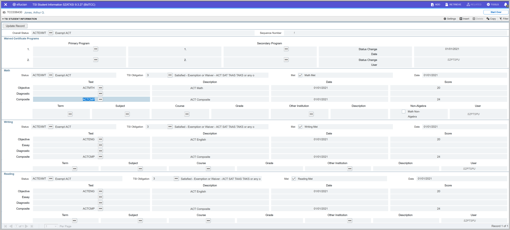
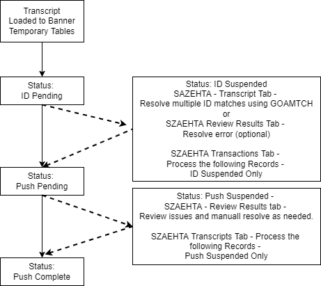

TCC Administrative UI
Catalog and Schedule Pages
Course Cross Reference Information (SZACXRF)
Use the Course Cross Reference Information (SZACXRF) page to collect course data related specifically to Texas State Reporting (CBM Reports). An entry must be created on SZACXRF for each active course in the catalog on implementation of the TCC CBM modifications.
Key block
After initial implementation, create or update an entry on SZACXRF for each created or modified course credit or Continuing Education.
The user is expected to enter data related specifically to Texas State Reporting (CBM Reports).
| Field | Description |
|---|---|
| Subject | Use the Subject field to enter a value from the subjects found on the Subject Code Validation (STVSUBJ) page. |
| Course | Use the Course field to enter a course number value. |
| Term | Use the Term field to enter a desired Term. |
| Course Title | The Course Title field is display only. It indicates the SCACRSE title of the Subject and Course. |
Course Information section
The Copy option found on SZACXRF performs the same Copy Forward function found on the Basic Course Information (SCACRSE) page. You cannot delete records on SZACXRF.
| Field | Description |
|---|---|
| From Term | Display only. Starting Term for this definition. |
| Copy | Click this button to create a new record starting with the term indicated by the From Term. |
| To Term | Display only. Ending Term for this definition. |
| Instruction Type | Enter an acceptable value from Instruction Type Validation (SZVITYP) page. |
| Instruction Mode | Enter an acceptable value from the Instructor Mode Validation page (SZVIMOD) page. |
| Course Type | Enter an acceptable value from the State Course Type Validation page (SZVCTYP) page. |
| Course Level | Enter an acceptable value from the Course Level Validation (SZVCLVL) page. |
| Classification | The Course Classification value is used to position course hours and enrollments in the appropriate items on the CBM Reports. Select one of the following options from the menu:
|
| Admin Unit | Enter an acceptable value from the Texas Administrative Unit Code Validation (SZVTAUV) page. The Administrative unit codes are published in the Appendices to THECB Reporting and Procedures manuals. The Admin Unit field no longer validates against the baseline TCC Student Department Code Validation (STVDEPT) page. On creation of a new course record on this page, the Course Catalog (SCACRSE) field for Department (SCBCRSE_DEPT_CODE) is read. If that department is stored within SZATAUC then the corresponding Texas Admin Unit Code defaults to this field. You can change the default value. It may be beneficial to ensure Departments attached to Courses on the Course Catalog (SCACRSE) page are assigned to a Texas Admin Unit Code on SZATAUC. Note: For Universities, this value is used for reporting the Course Inventory Update Report (CBM003).
|
| State CIPC 4 | Enter the four-character extension, positions 7-10 of the 10-digit CIP Code, for the course. WECM Courses always are listed as 00xx where the last two positions (xx) are the Funding Code. For example, 0001 or 0017. 0000 is an acceptable value. Note: The value entered is not validated. This value is concatenated with the Catalog CIPC code (SCBCRSE_CIPC_CODE) for reporting purposes and this new value cannot be null.
|
| Funding Code | The entered code is compared to the value defined through the GTVSDAX rule NOTFNDCRSE. If the value entered is the same as that defined by NOTFNDCRSE, the course is considered Not Funded. If those values are not equal or the value entered is blank, the course is considered funded. See Crosswalk Validation (GTVSDAX) Definitions for further details. Note: A Funding Code value is required for doctoral courses to report correctly through the CBM reports.
|
| ESOL Code | Enter an acceptable value from the ESOL Validation (SZVESOL) page. This value is currently used by the Institution internally and is not used for CBM Reports |
| CEU | Select this check box only if the course is defined as a CEU course. The value of this field is used by the report procedures to determine a CEU course. It does not use the CEU indicator on the Basic Course Information Page (SCACRSE). Cleared = N. |
| CE Contract Course | Used to flag a Continuing Education contract course for CBM00A. |
| Not Reported | Select this check box to indicate that the course is ineligible for reporting as state funding. When selected, the course is not included in the CBM00C class reports and the enrolled students are not included in the CBMOC1, CBM0CS, CBM00S, or CBM00A student reports. SZRCBM2 (CBM002) reports NCBO Intervention courses regardless of the value of the Not Reported flag. Selected = Y (do not report this course). Cleared = N, blank or null (report this course). NCBO Interventions are not given special consideration when reporting for funding. If reported through the TCC delivered SZRCBM1 (CBM0C1), SZRCBE1 (CBM0E1), SZRCBMS (CBM00S), or SZRCBM4 (CBM0CS) processes, be aware that the NCBO Interventions are reported as any other course and the assigned baseline contact and credit hours are reported. |
| PE | Select this check box to indicate whether the course is a PE Activity course. |
| Location | |
| Location Flag | Select one of the following options from the menu:
Selection determines how much and under which item the course hours and enrollment count are reported on the CBM Reports. |
| Location Code | Enter an acceptable value from the Location Code Validation (SZVLOCN) page. |
| Inter Institutional | Enter an acceptable code from the Inter Institutional Validation (SZVIINT) page. The code designates if this Course is an Inter Institutional Course. If this is designated as an Inter-Institutional Course, then the code will indicate if the institution is a provider or received and whether the course should report as funded. |
| Zip/Country Code | Used for classes taught out-of-district, at military bases, correctional institutions, or at primary school, secondary school, or business location outside of the institution’s taxing district. The state code or country code is needed if the class is taught out-of-state or out-of-country respectively. Enter either the Zip Code or Country Code where the course is being taught. Note: There is no validation table for this value. However, this field must contain a value that the state report edits will accept.
|
| Other HE/I-I Site | Enter a Code value from the Source/Background Institution Code Validation (STVSBGI) page. The corresponding STVSBGI FICE Code value is used for reporting purposes. This value is used when the course is flagged as inter-institutional. |
| CBM003 | |
| TCCNS Subj | Use the TCCNS Subject field to enter the four alphanumeric character value for the course. If TCCNS Course is entered then TCCNS Subj is required. Converts all entered alpha characters to uppercase. Used only for reporting CBM003. |
| TCCNS Course | Use the TCCNS Course field to enter the four numeric character value for the course. If TCCNS Subj is entered then TCCNS Course is required. Used only for reporting CBM003. |
| CBM3 UPDA | Enter the desired update code. This code is validated against CBM003 Course Update Code Validation (SZVUPDA) page. Clear this check box if you do not want to report this course. After the course has been submitted to the state, remove this value. |
| WECM The WECM fields are available for Community College Continuing Education reporting on the CBM00C. When a continuing education course is created using a local number scheme, these fields provide for the correct Workforce Education Course Manual standard subject and course number for reporting. |
|
| WECM Subj | There is no validation for these values. |
| WECM Course | There is no validation for these values. |
| TSI Development Ed Use the Area 1, Type 1, Area 2, and Type 2 fields to identify which TSI Developmental Education Area is met by successfully completing this course or intervention. These fields are reported by the CBM00S (SZRCBMS) process for Developmental Education Courses and by the CBM002 (SZRCBM2) process for NCBO Interventions. The Level 1 and Level 2 fields are display only and intended to serve as a review of reporting before Spring, 2015. |
|
| Type 1 | Assign the TSI Type for which this course may report in CBM00S (SZRCBMS) Item 22 (CC) or Item 19 (UN). Values available include the following:
An assigned value of 4-DE Intervention or 9-DE Coreq Intervention can be used in reporting CBM002 (SZRCBM2) Items 23/43/63. |
| Qual. Pts. 1 | Institutional use only. Assign the Quality Points associated with this course. |
| Level 1 | This field is display only. It indicates the previously assigned TSI Level for which this course reported in CBM00S (SZRCBMS) Item 19 (UN) or Item 22 (CC) before Spring, 2015. |
| Area 2 | Assign the TSI Area for which this course is used. Values available are Math, Reading, and Writing. |
| Type 2 | Assign the TSI Type for which this course may report in CBM00S (SZRCBMS) Item 22 (CC) or Item 19 (UN). Values available include the following:
An assigned value of 4-DE Intervention or 9-DE Coreq Intervention can be used in reporting CBM002 (SZRCBM2) Items 23/43/63. |
| Qual. Pts. 2 | Institutional use only. Assign the Quality Points associated with this course. |
| Level 2 | Display only. It indicates the previously assigned TSI Level for which this course reported in CBM00S (SZRCBMS) Item 19 (UN) or Item 22 (CC) before Spring, 2015. |
Technical notes
When updating SZRCXRF or SZRSXRF records using an SQL script, flags such as CEU Ind, Course Location, or Course Classification, may need special consideration. These flags are allowed any of three possible values: Y, N, or null. A blank space or numeric value can cause the course to report incorrectly through the TCC delivered SZRCB processes.
According to the THECB, if NCBO Interventions are reported through CBM0CS (SZRCBMS) for funding, the courses must also report through CBM0C1 (SZRCBM1), CBM0E1 (SZRCBE1), and CBM00S (SZRBMS). Be aware inclusion of an NCBO Intervention course through the TCC delivered reports (SZRCBM1, SZRCBE1, and SZRCBMS) is given no special consideration regarding the Credit Hours and Contact Hours reported. The hours assigned to the baseline fields for contact and credit hours as reported the same as non-NCBO Intervention courses.
User Fields section
The user fields and flags are not used by any CBM Reports or other TCC enhancement and can be used at the institution’s discretion.
| Field | Description |
|---|---|
| Cuda Code | Enter a value from the Catalog Element One Validation (STVCUDA) page. |
| Cudb Code | Enter a value from the Catalog Element Two Validation (STVCUDB) page. |
| Cudc Code | Enter a value from the Catalog Element Three Validation (STVCUDC) page. |
| Cudd Code | Enter a value from the Catalog Element Four Validation (STVCUDD) page. |
| Cude Code | Enter a value from the Catalog Element Five Validation (STVCUDE) page. |
| Cudf Code | Enter a value from the Catalog Element Six Validation (STVCUDF) page. |
| Flag 1 | You can select the check box. |
| Flag 2 | You can select the check box. |
| Flag 3 | You can select the check box. |
| Flag 4 | You can select the check box. |
| Flag 5 | You can select the check box. |
Section Cross Reference Information (SZASXRF)
Use the Section Cross Reference Information (SZASXRF) page to collect section data related specifically to Texas State Reporting (CBM Reports).
A trigger on the Section Table (SSBSECT) page populates the table behind the Section Cross Reference Information (SZASXRF) page. When a record is created on the Schedule (SSASECT) page, it is also created on the Section Cross Reference Information (SZASXRF) page using the values from the TCC Course Cross Reference Information (SZACXRF) page.
You cannot create new records on SZACXRF manually. The only way to create records on SZACXRF is through the trigger. It is essential, therefore, that SZACXRF is completed before you create section records using SSASECT. Note that this trigger will also delete SZRSXRF records when an SSBSECT record is deleted.
Values on SZACXRF can be changed to meet section criteria for the Texas CBM Reports.
Key block
| Field | Description |
|---|---|
| Term | Enter a value from the Term Code Validation (STVTERM) page or the existing section. |
| Course Reference Number | Enter a value from the Schedule Section Query (SSASECQ) page. |
| Course Title | Display only. |
Section Information
Values for Subject, Course Number, and Section are system entered from the Schedule (SSASECT) page and cannot be changed on SZASXRF.
| Field | Description |
|---|---|
| Subject | Display only. This field contains the SSASECT Subject. |
| Course Number | Display only. This field contains the SSASECT Course Number. |
| Section | Display only. This field contains the SSASECT Section number. |
| CBM ID | Display only. This field contains the SSASECT Course Reference Number selected in the page’s Key Block. If the Census FE flag is cleared, the value in the CBM ID field is assigned the CRN. If the Census FE flag is selected, the value in the CBM ID field is assigned as follows:
This assignment is performed immediately by the page on checking the Census FE flag. Note: As of the Summer 2011 Reporting period, this field is no longer used for reporting Section Number through the CBM reports, however, for historical purposes the CBM ID field is still available for viewing as it was used for many years when creating CB reports. This field allows verification of historical CB reported records or sections.
|
| The fields that follow have been entered previously on the SZACXRF page and will be set by default when the section is created. | |
| Instruction Type | Enter a value from the Instruction Type Validation (SZVITYP) page. |
| Instruction Mode | Enter a value from the Instruction Mode Validation (SZVIMOD) page. |
| Course Type | Enter a value from the State Course Type Validation (SZVCTYP) page. |
| Course Level | Enter a value from the Course Level Validation (SZVCLVL) page. |
| Classification | Select one of the following options from the menu:
Note: The Course Classification is used to position course hours and enrollments in the appropriate items on the CBM Reports.
|
| Administrative Unit | If needed, review and modify the Texas Administrative Unit Code for this course. This field is validated against values entered on the Texas Admin Unit Validation (SZVTAUV) page. A listing of available Admin Unit codes can be displayed. The Admin Unit field no longer validates against the baseline TCC Student Department Code Validation (STVDEPT) page. This field defaults from the Course Catalog (SCACRSE) field for Admin Unit. This default value can be changed. |
| State CIPC 4 | This is the four digit extension of the state value for course CIPC codes. The value entered here is not validated, however, the catalog CIPC code concatenated with the value entered here cannot be null for reporting purposes. Enter the four-character extension, positions 7-10 of the 10 digit CIP Code, for the course. WECM Courses are listed always as 00xx where the last two positions (xx) are the Funding Code. See Appendix E – CIP Funding Categories of the THECB Appendices to the Reporting and Procedures Manuals for further details. Examples include 0001 or 0017. 0000 is an acceptable value. |
| Funding Code | The entered code is compared to the value defined through the GTVSDAX rule NOTFNDCRSE. If the value entered here is the same as that defined by NOTFNDCRSE then the course is considered Not Funded. If those values are not equal or the value entered here is blank then the course is considered funded. Refer to Crosswalk Validation (GTVSDAX) Definitions for further details. Note: For Doctoral Students only. The Funding Code field cannot be blank or null for sections that include Doctoral Students who must be reported. Sections with Doctoral Student enrollments that must be CBM reported must have a value in this field. This field is reported as Item 19 in CBM0C1 (SZRCBM1) for Doctoral Students.
|
| ESOL Code | Enter a value from the ESOL Validation (SZVESOL) page. This field is currently for Institutional internal use only. This field is not used by the CBM Reports. |
| FE – Census | Select this check box to indicate a course is to report as Census FE. This course starts after the Census Date and completes before the last day of the term. |
| FE - Span | Select this check box to indicate a course is to report as a Spanned Term FE course. This course starts at any time during the term and finishes after the last day of the term. |
| CEU | Select this check box if the course is defined as a CEU course. The value of this column is used by the report procedures to determine a CEU course. It does not use the CEU indicator on the catalog page SCACRSE. Cleared = N. |
| CE Contract Course | Used to flag a Continuing Education contract course for CBM00A. |
| Not Reported | Select this check box to indicate the course is ineligible for reporting as state funded. When selected, the course will not be included in the CBM0CS or CBM00C class reports and the enrolled students will not be included in the CBM0C1, CBM00S, or CBM00A student reports. Selected = Y (this course is not reportable). Cleared = N (report this course). SZRCBM2 (CBM002) reports NCBO Intervention courses regardless of the value of the Not Reported flag. Note: NCBO Interventions are not given special consideration when reporting for funding. If reported through the TCC delivered SZRCBM1 (CBM0C1), SZRCBE1 (CBM0E1), SZRCBMS (CBM00S), or SZRCBM4 (CBM0CS) processes, be aware the NCBO Interventions are reported as any other course and the assigned baseline contact and credit hours are reported.
|
| PE | There is no validation table for this value. This item is selected if the course is a PE course. This indicator is selected in the report procedures. Cleared = N. |
| Lec & Lab | The Lec and Lab indicators are used together to determine various types of Contact Hours for the CBM0CS and CBM00S report processes for Texas Community, Technical, and State Colleges only:
Note: For processing purposes the Section Hours from the Schedule page (SSASECT) are used if they are not null. If the Section hours are null then the Catalog Hours from the Basic Course Information Page (SCACRSE) are used.
|
| Location | |
| Location Flag | Select only one of the following options from the menu:
Individual flag selection determines under which item the course hours and enrollment count are reported on CBM Reports. |
| Location Code | Enter a value from the Location Code Validation (SZVLOCN) page. |
| Inter Institutional | Enter an acceptable code from Inter Institutional Validation (SZVIINT) page. The code designates whether this Course is an Inter-Institutional Course. If this course is designated as an Inter-Institutional, this code indicates if the institution is a provider or receiver and whether the course should report as funded or unfunded. |
| Zip/Country Code | Enter either the zip code or country code where the course is being taught. This value is not validated and must be an accepted state report value. |
| Other HE/I-I Site | Enter a Code value from the Source/Background Institution Code Validation (STVSBGI) page. The corresponding STVSBGI FICE Code value is used for reporting purposes. This value is used when the course is flagged as inter-institutional. |
| WECM | |
| WECM Subject | There is no validation table for this value. This item is used for Community Colleges when reporting CBM00C. |
| WECM Course | There is no validation table for this value. This item is used for Community Colleges when reporting CBM00C. |
| TSI Development Ed | Area 1, Type 1, Area 2, and Type 2 fields are used to supply which TSI Developmental Education Area is met by successfully completing this course or intervention. These fields are reported by the CBM00S (SZRCBMS) process for Developmental Education Courses and by the CBM002 (SZRCBM2) process for NCBO Interventions. The Level 1 and Level 2 fields are display-only and intended to serve as a review of reporting before Spring, 2015. |
| Area 1 | Assign the TSI Area for which this course is used. Values available are Math, Reading, and Writing. |
| Type 1 | Assign the TSI Type for which this course will report in CBM00S (SZRCBMS) Item 22 (CC) or Item 19 (UN). Values available include the following:
An assigned value of 4-DE Intervention or 9-DE Coreq Intervention can be used in reporting CBM002 (SZRCBM2) Items 23/43/63. |
| Qual. Pts. 1 | Institutional use only. Assign the Quality Points associated with this course. |
| Level 1 | Display only. The previously assigned TSI Level for which this course reported in CBM00S (SZRCBMS) Item 19 (UN) or Item 22 (CC) before Spring, 2015. |
| Area 2 | Assign the TSI Area for which this course is used. Values available are Math, Reading, and Writing. |
| Type 2 | Assign the TSI Type for which this course will report in CBM00S (SZRCBMS) Item 22 (CC) or Item 19 (UN). Values available include the following:
An assigned value of 4-DE Intervention or 9-DE Coreq Intervention can be used in reporting CBM002 (SZRCBM2) Items 23/43/63. |
| Type 1 and Type 2 notes: The B-Coreq College Course value can only be assigned with a college-level course which has an assigned SZACXRF Classification value of Academic or Collegiate (szrcxrf_academic_ind or szrcxrf_collegiate_ind). CBM00S (SZRCBMS) only reports B in Item 19 (CC) or 22 (UN) if the course is designated with an SZASXRF Classification of Academic or Collegiate. CBM00S (SZRCBMS) only reports 1, 4, 7, 8, 9, or A in Item 19 (CC) or 22 (UN) if the course is designated with an SZASXRF Classification of Developmental or Remedial. An SZASXRF Classification of Vo Tech or Technical reports 0 in CBM00S (SZRCBMS) Item 19 (CC) or 22 (UN). |
|
| Qual. Pts. 2 | Institutional use only. Assign the Quality Points associated with this course. |
| Level 2 | Display only. The previously assigned TSI Level for which this course reported in CBM00S (SZRCBMS) Item 19 (UN) or Item 22 (CC) before Spring, 2015. |
Technical notes
- When updating SZRCXRF or SZRSXRF records using an SQL script, flags such as CEU Ind, Course Location Flags, or Course Classification flags, may need special consideration. These flags are allowed any of three possible values, Y, N, or null. A blank space or numeric value can cause the course to not report correctly through the TCC delivered SZRCB% processes.
- A field in the database table, SZRSXRF_USER, indicates if the record was created by the database trigger. If the record was created by the database trigger and has not been updated from the time of creation, the value contained in that field is CBMUSER. If the record was updated by a user at the institution, the field indicates the Username of that individual. This field is not viewable from the Section Cross Reference Information (SZASXRF) page.
- NCBO Interventions: According to the THECB, if NCBO Interventions are reported through CBM0CS (SZRCBMS) for funding, the courses must also report through CBM0C1 (SZRCBM1), CBM0E1 (SZRCBE1), and CBM00S (SZRBMS). Be aware that inclusion of an NCBO Intervention course through the TCC delivered reports (SZRCBM1, SZRCBE1, and SZRCBMS) is given no special consideration regarding the Credit Hours and Contact Hours reported. The hours assigned to the baseline fields for contact and credit hours as reported are the same as non-NCBO Intervention courses.
User Fields section
The user fields and flags are not used by any CBM Reports and can be used at the institution’s discretion.
| Field | Description |
|---|---|
| Cuda Code | Enter a value from Catalog Element One Validation (STVCUDA) page. |
| Cudb Code | Enter a value from Catalog Element Two Validation (STVCUDB) page. |
| Cudc Code | Enter a value from Catalog Element Three Validation (STVCUDC) page. |
| Cudd Code | Enter a value from Catalog Element Four Validation (STVCUDD)page. |
| Cude Code | Enter a value from Catalog Element Five Validation (STVCUDE) page. |
| Cudf Code | Enter a value from Catalog Element Six Validation (STVCUDF) page. |
| Flag 1 | You can select the check box. |
| Flag 2 | You can select the check box. |
| Flag 3 | You can select the check box. |
| Flag 4 | You can select the check box. |
| Flag 5 | You can select the check box. |
Catalog TSI Restrictions (SZACPRQ)
Use the Catalog TSI Restrictions (SZACPRQ) page to build TSI student requirements for registration in the Catalog course indicated in the Key Block. SZACPRQ lists the TSI areas that need to be Met along with other rules that enable student’s registration for the course.
Key block
| Field | Description |
|---|---|
| Subject | Enter a value from those subjects found on the Subject Code Validation (STVSUBJ) page. |
| Course | Enter a value from the Schedule Section Query (SSASECQ) page. |
| Term | Enter a value from the Term Code Validation (STVTERM) page or the existing section. |
| Course Title | Display only. |
Course TSI restrictions
| Field | Description |
|---|---|
| From Term | Display only. The Starting Term for this set of rules. |
| Maintenance | If the Key Block Term is not the same as the From Term, use the Maintenance button to copy the displayed rules to the Key Block Term. Creating the new rules allows updates to the rules in the new Term. Note: The Copy Restriction option along with the Delete function, can be used in place of the End Restriction when using the Maintenance button.
|
| To Term | Display only. Ending Term for this set of rules. Another set of rules may be available for this Term. |
| A/O | AND/OR connector for multiple areas being used. |
| ( | Use open or left parentheses at the opening of AND clause. |
| Area | TSI Area that is previously satisfied (Math, Reading, Writing) or Exempt. |
| Met? | Indicate if the Area has to be met (Yes) or does not have to be met (No). |
| ) | Use closing or right parentheses at end of AND clause. |
TSI Schedule Restriction (SZATPRQ)
Use the TSI Schedule Restriction (SZATPRQ) page to supply the TSI student requirements for registration in the section indicated in the Key Block. Requirements include Math, Reading, Writing, and Exempt.
Key block
Requirements can be Met (indicated by Yes) or not Met (indicated by No). These restrictions are checked when registration is attempted through the TCC Student Course Registration (SZAREGS) page or Self-Service Registration if Registration Error Checking is set to Fatal for this term on SZATERM.| Field | Description |
|---|---|
| Term | Enter a value from the Term Code Validation (STVTERM) page or the existing section. |
| Course Reference Number | Enter a value from the Schedule Section Query (SSASECQ) page. |
| Course Title | Display only. SSASECT Title of this CRN. |
Course TSI restrictions
| Field | Description |
|---|---|
| A/O | AND/OR connector for multiple areas being used. |
| ( | Use open or left parentheses at opening of AND clause. |
| Area | TSI Area that is previously satisfied (Math, Reading, Writing) or Exempt. |
| Met? | Indicate if the Area has to be met (Yes) or does not have to be met (No). |
| ) | Use closing or right parentheses at end of AND clause. |
Processing notes
- Initially, the defaults for this page are copied from the Catalog TSI Restrictions (SZACPRQ) page.
- Each of the rules assigned on this page are used at the time of Registration in the course designated in the SZATPRQ Key Block. The student’s most recent SZATXSI record is used to determine their compliance with the above restriction rule.
- The student’s most recent SZATXSI record is that with the highest Seq # displayed on SZATXSI.
- If the SZATPRQ Area is Exempt, the following are required to meet the rule:
- An SZATXSI record for this student is required.
- If the SZATPRQ Met field is Yes, the student’s most recent SZATXSI record must have an Overall Status that is assigned a value of E or W in the SZVTSPC Exempt/Waive field.
- If the SZATPRQ Met field is No, the student’s most recent SZATXSI record must not have an Overall Status that is assigned a value of E or W in the SZVTSPC Exempt/Waive field
- If the SZATPRQ Area is Math, Writing, or Reading, the following are required to meet the rule:
- A SZATXSI record for this student is required.
- If the SZATPRQ Met field is Yes the student’s most recent SZATXSI record must have the corresponding SZATXSI Area Met indicator selected. In this case a student with a SZATXSI Overall Status of Exempt or Waiver and a blank Area Status with a blank Met flag does not meet the criteria. A blank Area Met flag does not suffice even with an exemption of waiver in the Overall Status.
- If the SZATPRQ Met field is No the student’s most recent SZATXSI record must have the corresponding SZATXSI Area Met indicator cleared.
Section Crosswalk (SZASXWK)
The Section Crosswalk (SZASXWK) page provides crosswalks from baseline SSASECT values for Campus, Schedule Type, and Instruction Mode to various fields on the TCC SXASXRF page.
In each case of crosswalk values, if the crosswalk is not needed or desired then the page can contain all blanks.
Key block
| Field | Description |
|---|---|
| Term | Enter the Term Code for which the crosswalk rules are valid (STVTERM). |
Campus section
This section provides a crosswalk from SSASECT Campus to SZASXRF values for Location, Zip, State, Country, Inter-Institutional Code, and Other HE/I-I Site.
| Field | Description |
|---|---|
| From Term | Starting Term for this set of rules. Display only. |
| Copy | Click this button to create new rules starting with the term indicated by the From Term. |
| To Term | Ending Term for this definition. Display only. |
| Activate Trigger to Update SZASXRF Location and Related Fields? | Select this check box to activate the rules on this section for the terms designated in the From Term and To Term fields. Clear this check box to inactivate the rules on this section. |
| SSBSECT Campus Code | Enter a Campus Code which, when entered on SSASECT, updates the same CRN on SZASXRF with new values. (STVCAMP) |
| SSBSECT Campus Description | Display Only. Description of SSBSECT Campus Code. |
| Location Code | Enter the location code used to update the SZASXRF Location when this Campus Code is entered on SSASECT. (SZVLOCN) Recommendation: Enter a Location Code. |
| Location Description | Display Only. Description of the Location Code. |
| Zip Code | Enter the zip code used to update the SZASXRF Zip/Country Code. (GTVZIPC) |
| Zip Description | Display Only. Zip Code Description. If multiple records exist in GTVZIPC for the Zip Code entered, the City with the lowest alphabetical value appears. |
| State Code | Enter the State Code used to update the SZASXRF Zip/Country Code. (STVSTAT) |
| State Description | Display Only. State Description |
| Country Code | Enter the nation code used to update the SZASXRF Zip/Country Code. (STVNATN) |
| Country Description | Display Only. Country Description. Only one of Zip, State, or Country is allowed. |
| Inter Institutional Code | Enter the Inter-Institutional Code used to update the SZASXRF Inter Institutional Code (SZVIINT) page. Ellucian recommends: Enter a value for Inter-Institutional Code. |
| Inter Institutional Description | Display Only. Inter Institutional Code Description. |
| Other HE/I-I Site | Enter the STVSBGI code used to update the SZASXRF Other HE/I-I Site (STVSBGI). |
| Other HE/I-I Site Description | Display Only. STVSBGI Code Description. |
| In District | Select this check box to indicate this Campus is In District. |
| Out of District | Select this check box to indicate this Campus is Out of District. |
| On Campus | Select this check box to indicate this Campus is On Campus. |
| Off Campus | Select this check box to indicate this Campus is Off Campus. Only one of In District, Out of District, On Campus, or Off Campus is allowed. If no flags are selected, the corresponding flags on SZASXRF are not updated. Recommendation: Check one of the above four Location flags. |
Schedule Type section
This section provides a crosswalk of SSASECT Schedule Type to SZASXRF Instruction Type.
| Field | Description |
|---|---|
| From Term | Starting Term for this definition. Display only. |
| Copy | Click this button to create a new record starting with the term indicated by the From Term field. |
| To Term | Ending Term for this definition. Display only. |
| Activate Trigger to Update SZASXRF Instruction Type? | Select this check box to activate the rules on this section for the terms designated by the From Term and To Term fields. Clear this check box to inactivate the rules on this section. |
| SSASECT Schedule Type Code | Enter a Schedule Type which, when entered on SSASECT, updates the same CRN on SZASXRF with a new Instruction Type. (STVSCHD). |
| SSASECT Schedule Description | Display Only. Description of the SSASECT Schedule Type Code. |
| Instruction Type Code | Enter the Instruction Type Code used to update SZASXRF Instruction Type (SZVITYP). |
| Instruction Type Description | Display Only. Description of the SSASECT Instruction Type Code. |
Instructional Method section
This section provides a crosswalk of SSASECT Instructional Method to SZASXRF Instruction Mode.
| Field | Description |
|---|---|
| From Term | Starting Term for this definition. Display only. |
| Copy | Click this button to create a new record starting with the term indicated by the From Term field. |
| To Term | Ending Term for this definition. Display only. |
| Activate Trigger to Update SZASXRF Instruction Mode? | Select this check box to activate the rules on this section for the terms designated by the From Term and To Term fields. Clear this check box to deactivate the rules on this section. |
| SSASECT Instructional Method Code | Enter a instructional method code which, when entered on SSASECT, updates the same CRN on SZASXRF with a new Instruction Mode. (GTVINSM). |
| SSASECT Instructional Method Description | Display Only. Description of the SSASECT Instructional Method Code. |
| Instruction Mode Code | Enter the instruction mode code used to update SZASXRF Instruction Type (SZVIMOD). |
| Instruction Mode Description | Display Only. Description of the SSASECT Instruction Mode Code. |
Building State Data (SZABLDG)
Use the Building State Data (SZABLDG) page to crosswalk baseline TCC Student building codes to the state report values and format required for reporting Item #7, CBM005.
Operation
The values entered on SZABLDG are used for reporting Item #7, CBM005.
| Field | Description |
|---|---|
| Building Code | Enter the baseline TCC Student Building Code (STVBLDG). The field accommodates expanded field size. |
| Building Description | Display only. |
| Building State Value | Enter the corresponding code for this building used by the Facilities Report. The same Building State Value can be entered more than one time if multiple TCC Student Building Codes are reported to this same Building State Value. |
Building Definition (SLABLDG)
Use the Building Definition (SLABLDG) page to include display of the Texas State Value used when reporting Item #7, CBM005 through SZRCBM5.
Operation
All baseline functionality is retained by the original baseline fields. The State Value field displayed on this page is used for reporting Item #7, CBM005.
Only TCC fields are listed below.
| Field | Description |
|---|---|
| State Value | Display only. This value is extracted from the SZABLDG field Building State value for the building in the SLABLDG Key Block Building field. This field is intended to enable the user to view all information for a building on the baseline SLABLDG page. |
Room State Data (SZAROOM)
Use the Room State Data (SZAROOM) page for crosswalking baseline Banner room codes in a building to the state report room code and room type.
Operation
The values entered on SZAROOM are used for reporting Items #8 and #14 in CBM005.
Only Building/Rooms entered on SZAROOM are reported with the State Room Code on the new CBM005 Report (SZRCBM5).
| Field | Description |
|---|---|
| Building Code | Enter the baseline TCC Student Building Code previously defined on the Building State Data (SZABLDG) page. |
| Room Code | Enter the baseline TCC Student Room Code (SLARDEF). |
| Room Description | Display only. |
| State Room Code | Enter the Facilities Report Room Code. The Room Code accommodates expanded field size. |
| State Room Type | Enter the State Room Type (SZVRTYP). |
| State Room Type Description | Display only. SZVRTYP Description. |
Room Definition (SLARDEF)
The baseline Room Definition is expanded to include display of the Texas State Room Code and State Room Type used when reporting Items #8 and #14 in CBM005 through SZRCBM5.
Operation
All baseline functionality is retained by the original baseline fields.
Term Code is ignored when extracting a value from the TCC Room State Data (SZAROOM) page.
Only TCC fields are listed below.
| Field | Description |
|---|---|
| State Room Code | Display only. This value is extracted from the SZAROOM field State Room Code for the building and room in the SLARDEF Key Block Building and Room fields. This value is used when reporting Item #8, CBM005. This field is intended to allow the user to view all information for a building and room on the baseline SLARDEF. |
| State Room Type | Display Only. This value is extracted from the SZAROOM field State Room Type for the building and room in the SLARDEF Key Block Building and Room fields. This value is used when reporting Item #14, CBM005. This field is intended to allow the user to view all information for a building and room on the baseline SLARDEF. |
Texas Admin Unit Crosswalk (SZATAUC)
Use the Texas Admin Unit Crosswalk (SZATAUC) page to enter Texas defined Administrative Unit Codes and to crosswalk those codes with Banner baseline defined Department Codes.
An Administrative Unit Code can be associated with multiple Department Codes. A Department Code can only be associated with one Administrative Unit Code.
Operation
SZATAUC is populated to ensure accurate maintenance and reporting of the Texas Admin Unit Codes. TCC pages, including SZACXRF, SZASXRF, SZAFACC, and SZAFACU, validate data against SZATAUC.
| Field | Description |
|---|---|
| Texas Admin Unit Code | Enter a Texas Administrative Unit Code. The same Administrative Unit Code value can be entered on more than one row. The Administrative Unit Code value must be a THECB Reporting value. The Texas Administrative Unit Codes are listed in the Appendices to the Reporting and Procedures manuals for Texas Universities, Health-Related Institutions, Community, Technical, and State Colleges, and Career Schools and Colleges. |
| Texas Admin Unit Code Description | Enter the description of the Texas Administrative Unit Code. |
| Department Code | Enter or select the Department Code which corresponds to this Administrative Unit Code. The field is validated against the baseline Banner Validation Table STVDEPT. A list can be viewed. Each Department Code can only be entered on one row or record. |
| Department Description | This field is view only and displays the Department Code Description. |
Student Information Pages
Student Supplemental Data (SZASSTD)
Use the Student Supplemental Data (SZASSTD) page to capture student information related to CBM Report processing.
The Student Supplemental Data (SZASSTD) page should be created for every student any time a new SGASTDN record is created for a new term. For example, if a change curriculum is performed on SGASTDN for a new term, it results in the creation of a new SZASSTD record, according to the rules defined on SZASSRL. No change is made if the change is for the same term. For example, if residency is changed on SGASTDN, it results in a change to the charges on the student’s account. SZASSTD must be manually updated at the same time to ensure correct reporting of the residency.
Operation
A record created on this page does not require the existence of a student record on the General Student (SGASTDN) page. However, like the General Student (SGASTDN) page, the Student Supplemental (SZASSTD) page is driven by max effective term as the current record. This does not mean that a new record must be created each term, however if during a term the reported values have changed, a new record should be created.
For each new Student to the institution, the system creates a record automatically on this page when a General Student record is created on the General Student (SGASTDN) page. This can be through the Quick Entry (SAAQUIK) page or the Admissions Application (SAAADMS) page. The record is created and the Residence field is copied from the SGASTDN Residence field. The new record on SZASSTD is assigned the same From Term as SGASTDN. In addition, the Admit County, State, and Nation can be copied from the Application Supplemental Information page based on the existence of the GTVSDAX rule SUPLADMCST. Data copied from SOASUPL includes data for the highest Application Number for the corresponding Term for which the Student information is being created.
Technical Note – Customized SZRSSTD Scripts
Four fields displayed by SZASSTD and reported by the CTC SZRCBE1 (CBM0E1), SZRCBM1 (CBM0C1), and SZRCBMA (CBM00A) are in a baseline General table (GORPSID) and not in the SZRSSTD table. This includes data items Out Of Workforce, Homeless, Foster Youth, and Active Duty Military Parent.
If an institution has customized scripts that copy, delete, or update the SZRSSTD data, the scripts may need modification to include data from the GORPSID table. The GORPSID table includes a PIDM and a Term Code Effective date which indicates the data is effective for that person as of that date. That same data item value is effective until the end of time or until a record is found for a future Term for that data item that has a null value in the data field.
Key block
| Field | Description |
|---|---|
| ID | Select or enter student identification as the resource for the search criteria from the list of values on the Person Search Page (SOAIDEN). |
| Term | Select or enter a term code from the Term Code Validation page (STVTERM). |
Supplemental Data section
A record may be deleted from this page for a specific student if the Remove Record option is chosen from the Record menu. This is advised when deleting a person from the General Person module. For example, if duplicate PIDMs are being resolved and one PIDM is being deleted then a record viewable from this page for the PIDM being deleted should also be deleted or removed.
| Field | Description |
|---|---|
| New Term | Select or enter a value from the Term Code Validation (STVTERM) page. The value for New Term is used when a new record needs to be created. Creating a new record in SZASSTD allows maintaining a history of changes over time for a student rather than over-writing previously existing values for a student. To create a new record and preserve a preexisting record perform the following steps:
|
| From Term | System populated. Display only. |
| To Term | System populated. Display only. |
| Residence | |
| CB1 | This value is the residence code used to determine tuition status for CBM Reports. Select or enter the value entered in the GTVSDAX Translation Code and defined on STVRESD. The Crosswalk Validation (GTVSDAX) page Tuition Status crosswalk (internal code TUITRESD) needs multiple records defined, one for each state value of Tuition Status. The Crosswalk Validation (GTVSDAX) page external code in the crosswalk is the value reported on the CBM Reports. Refer to Crosswalk Validation (GTVSDAX) Definitions for further details. |
| FADS | This value is the residence code used for FADS reporting. |
| Exemption Waiver Code | If the GTVSDAX rule TUIEXWAFRM is set to retrieve the Exemption/Waiver Code from SZASSTD, then assign a value in this field, as appropriate. Choose values defined on the Tuition Exemption Waiver Code Validation (SZVTWVR) page. Assigned values are crosswalked to CB-approved state values using the GTVSDAX rule TUIEXMPTWA. |
| County | Select a value from the list of valid Texas County Codes. The allowed County Code values are chosen from the External Codes for the GTVSDAX crosswalk rules for TXCNCNTY. Only values defined as the External Code through a GTVSDAX crosswalk rule of TXCNCNTY are allowed. This field can be used to define residence on the CBM Reports. Refer to Crosswalk Validation (GTVSDAX) Definitions for further details. |
| State | Select or enter a Code value from the State/Province Code Validation (STVSTAT) page. Only State Codes on STVSTAT with a value entered in the Canadian Statistics Code are allowed as the page pulls the Canadian Statistics Code (STVSTAT_STATSCAN_CDE) into the field. The Canadian Statistics Code field must be numeric and not contain any alphabetic characters. |
| Nation | Select or enter a value from the Nation Code Validation (STVNATN) page. Only Nation Codes on STVNATN with a value entered in the Canadian Statistics Code are allowed as the page pulls the Canadian Statistics Code (STVNATN_STATCAN_CDE) into the field. CBM Reports which extract the Residence (CBM0C1, Item #8), extract a value from the County field on SZASSTD. If the County field is blank, the report includes the data value in the SZASSTD State field. If both the County and State fields are blank on SZASSTD, then the value reported is extracted from the Nation field. |
| Transfer Institution | This 6-character field is optional, is validated against the Code of the transferring institution (STVSBGI_CODE), and is used when reporting Item #9 for the CBM0C1. If this field contains a value, it is used for extracting a FICE Code from STVSBGI when reporting a Transfer Student in Item #9. If this field is blank and the student is a Transfer, then the Prior College (SOAPCOL) transfer institution is used for reporting purposes. If this student has multiple transfer institutions recorded on SOAPCOL, then this field can be used to indicate which transferring institution is reported to the Coordinating Board through CBM0C1. This field is used to indicate the most recent institution from which a student is transferring. If a Transfer Institution is entered and the student is a new Transfer student to this institution, then the FICE Code of the transfer institution is reported through CBM0C1 Item 9. The FICE Code is also extracted and reported for transfer institutions recorded on SOAPCOL. If no FICE Code exists on STVSBGI for the transfer institution, then 999999 is reported. |
| Restricted Program | This 2-character field is used when reporting CBM0C1. This field is used to indicate if a student is admitted to or continuing enrollment in a restricted enrollment program (CBM0C1 and CBM0E1, Item 32 or Item 38). The GTVSDAX rule CBM1U#32 is used to indicate codes that are valid for data entry. Codes entered in this GTVSDAX rule are used for validation purposes. Spaces are reported if the field is blank. Refer to Crosswalk Validation (GTVSDAX) Definitions for further details. |
| Exempt 3-Peat Charges | Select this check box if this student is exempt from 3-Peat charges starting with the Term Code in the From Term field. If the check box for Exempt 3-Peat Charges is changed for a student who already has a 3-Peat attribute assigned, then an Informational box appears. The 3-Peat attribute assignment can be for any term including, and as of, the Term in the From Term field. Click OK. If appropriate, click SAVE, then perform a re-registration (through SZAREGS) or a batch 3-Peat Attribute Assignment (through SZPTPAA) and then a baseline fee reassessment for this student. If the check box for Exempt 3-Peat Charges is changed for a student who already had a 3-Peat attribute assigned and the course was then dropped, resulting in a Drop Penalty charge, then an Informational box appears. The 3-Peat attribute assignment can be for any term including, and as of, the Term in the From Term field. Click OK. If appropriate, click SAVE and then perform a fee reassessment for this student. In this case a manual adjustment may be required. |
| Funding Limit Rule | Choose the Undergraduate Funding Limit Rule to which this person must adhere. These rules are defined on the Funding Limit Rule Validation (SZVFDLR) page which is also used for validation of this field. If this field is in use, the Affected By Funding field should also be checked. Note: This field was previously labeled UG Limit Rule.
|
| Affected By Funding | Select this check box if the student is affected by state funding. The default value for the column is N (flag not selected). This value affects the categories in which course hours and enrollment counts are placed on the CBM Reports such as CBM0C1, CBM0CS, CBM00S, and CBM005. |
| Exceeded Funding | This indicator is used for students who have already exceeded funding. Students who have exceeded funding can be eliminated from 3-Peat processing. This field can be updated manually in addition to actions on the Exceeded Funding (SZAXFND) page. |
| Funding Limit Hardship | This field is intended to track if a student has been allowed a Funding Limit Hardship Waiver. This field may update manually in addition to actions on the Exceeded Funding (SZAXFND) page. |
| Funding Limit Exception | Enter a code for the Doctoral funding limit exception or for a removal of an exception (SZVFLEX). This field must have a value for the CBM00E (SZRCBME) to report the student. |
| Doctoral Hrs Accumulated | Enter the Doctoral hours accumulated for reporting through the CBM00E (SZRCBME) process. |
| Report Doctoral Exception | Select this flag if the student needs to be reported through the CBM00E report process. The student is reported only if this flag is selected. It is the responsibility of the institution to ensure this field is selected only for students that should be reported. |
| FAST Eligible | Select this check box to indicate the student is eligible for Financial Aid for Swift Transfer (FAST). This flag impacts reporting for community colleges on the CBM00A and for universities on the CBM00X. |
| The following nine fields are specifically related to Community Colleges and are reported through CBM0C1, CBM0E1, and CBM00A. | |
| Academically Disadvantaged | The system allows a value of 1 or blank. |
| Economically Disadvantaged | The system allows a value of 2 or blank. |
| Student with Disabilities | The system allows a value of 3 or blank. |
| English Learner | The system allows a value of 4 or blank. This data field was previously labeled Limited English Proficiency. |
| Single Parent or Pregnant & Single | The system allows a value of 8 or blank. This data field was previously labeled Single Parent. |
| Out-Of-Workforce | The system allows a value of 9 or blank. Stored in GORPSID. |
| Homeless | The system allows a value of A or blank. Stored in GORPSID. |
| Foster Youth | The system allows a value of B or blank. Stored in GORPSID. |
| Active Duty Military Parent | The system allows a value of C or blank. Stored in GORPSID. |
| The following two fields are specifically related to Community Colleges and are not currently reported through the CBM reports. | |
| Program - Gender Bias | The system inserts a value of blank. This data field was previously labeled Program to Eliminate Gender Bias. |
| Displaced Homemaker | The system allows a value of 7 or blank. |
| The following six fields are specifically related to Universities and are reported through CBM00B. | |
| Parent 1 Education Level | Enter a value for the Education Level of the Student’s Parent 1. (SZVELVL) |
| Parent 2 Education Level | Enter a value for the Education Level of the Student’s Parent 2. (SZVELVL) |
| Family Income | Enter the appropriate CBM00B value for Family Income. This field is validated through the CBM00B Code on the Family Income Validation (SZVFAIN) page. |
| Language Fluency | Must be blank, 00, 01, 02, or 03. |
| Family Obligations | Must be blank, 00, 01, or 02. |
| Number in Household | Numeric value of the number in household. |
User Defined section
The following ten user defined fields and flags allow collection of additional student information. The columns are reserved for institutional use.
| Field | Description |
|---|---|
| Suda | Select or enter a value from the Student Element One Validation (STVSUDA) page. |
| Sudb | Select or enter a value from the Student Element Two Validation (STVSUDB) page. |
| Sudc | Select or enter a value from the Student Element Three Validation page (STVSUDC) page. |
| Sudd | Select or enter a value from the Student Element Four Validation (STVSUDD) page. |
| Sude | Select or enter a value from the Student Element Five Validation (STVSUDE) page. |
| Sudf | Select or enter a value from the Student Element Six Validation (STVSUDF) page. |
| Sudg | Select or enter a value from the Student Element Seven Validation (STVSUDG) page. |
| Sudh | Select or enter a value from the Student Element Eight Validation (STVSUDH) page. |
| Sudi | Select or enter a value from the Student Element Nine Validation (STVSUDI) page. |
| Sudj | Select or enter a value from the Student Element Ten Validation (STVSUDJ) page. |
|
The following five flags are also provided for user definition and, unless designated otherwise, currently have no impact on the CBM Reports. The unlabeled user defined flags are reserved for institutional use. |
|
| User Flag1 | CBM1U#33 – Select if not degree seeking. Used only for universities when reporting CBM0C1. Select if student is not degree seeking. |
| User Flag2 | Select to report Certificate Program on CBM00B. Select if the Certificate Program in which this student is enrolled for this Term is to report on the CBM00B. |
| User Flag3 | Reserved for future state reporting. |
| User Flag4 | Reserved for future state reporting. |
| User Flag5 | Reserved for future state reporting. |
Student CB Report Override (SZASCRO)
Use the Student CB Report Override (SZASCRO) page to display student information for a term including system calculated values. This page also provides a means for overriding those system calculated values.
Operation
SZASCRO allows insertion of records based on a student’s assigned Program and Field of Study (FOS) in addition to Registration records for the Key Block Term. The student must have Registration records to allow data to display in the Registrations section.
Key block
| Field | Description |
|---|---|
| ID | Select or enter a student ID. A search feature is available, if needed. |
| Term | Select or enter a term code from the Term Code Validation (STVTERM) page. |
SZASSTD section
Manual override values are used when extracting data for the CBM00S report. This data can also be used for reporting CBM0E1, CBM002, and CBM008.
| Field | Description |
|---|---|
| Exists? | Display only. A selected check box indicates an SZASSTD record exists for this Student for the Key Block term. A cleared check box indicates an SZASSTD record does not exist for this Student for the Key Block term. |
| Level | Display Only. The student’s curriculum Level for this term. |
| Program | Display Only. The student’s curriculum Program. If the Program Code is not found in the SMAPROG tables or if the Program Code and Major (FOS) combination for the term in the Key Block are not found in the SZVMCIP tables, an error is displayed. |
| Major | Display Only. The student’s Major (Field of Study) of the curriculum Program. If the Program Code is not found in the SMAPROG tables or the Program Code and Major (FOS) combination for the term in the Key Block are not found in the SZVMCIP tables, an error is displayed. |
| Exceeded Funding? | Display Only. A selected check box indicates this student has exceeded their funding as of the beginning of the Key Block term. A cleared check box indicates the student has not exceeded their academic funding limit as of the beginning of the Key Block term. This check is performed only if the student has an SZASSTD Funding Limit Rule assigned. |
| SSTD Funding Code | Display Only. The assigned SZASSTD Funding Limit Rule for this Student for this term. |
| Program Hrs | Display Only. Number of program hours designated for this student’s Program and Major. Using the student’s curriculum this value is extracted from either SMAPROG or SZVMCIP, based on setup of the GTVSDAX rule, PGMHRSMCIP. |
| Inst. Hrs | Display Only. The number of institutional Earned Hours for the student’s curriculum Level at this institution. This value is a sum of SHATCKN Credit Hours (shrtckg_credit_hours) for this student for all terms. |
| Transfer Hrs | Display Only. The number of transfer hours for the student’s curriculum Level at this institution. This value is a sum of SHATRNS Equivalent Course Detail Hours (shrtrce_credit_hours) for this student for all terms. Transfer hours (shrtrcr_trans_credit_hours) are included in the accumulated hour calculation only if the hours are received from a Texas Public Institution as defined by the GTVSDAX rule CBMTXPBIN. |
| Manual Override | Enter Y, N, or leave blank to override the calculated value for Exceeded Funding field. If the page calculates that a student has exceeded their funding limit in the SZASCRO SZASSTD Exceeded Funding field and that value is overridden by entering N in this manual override field, then the page no longer pre-fills the registrations with a not funded reason. The user can enter any not funded reason in the SZASCRO Registration section in the Not Funded Reason field. |
| CBM002 Item10 | Assign the TSI value to report in CBM002 Item 10 for this student for this Reporting Period. This assignment is needed for every Reporting Period in which a non-zero value should report in CBM002 Item 10 (CC and UN) and should be assigned to the maximum Term within the CBM002 Reporting Period. The numerical value displayed is the value which is reported. Lack of a record or an assigned value of blank or a zero value will reports 0 in CBM002 Item 10. The GTVSDAX rule CBM002ITEM10 determines the values listed in the LOV for this field. |
Registrations section
| Field | Description |
|---|---|
| CRN | Display Only. CRN of the course registration in this Term. |
| Subj | Display Only. Subject of the course registration. |
| Course | Display Only. Course number of the course registration. |
| Sect | Display Only. Section number of the course registration. |
| RSTS Code | Display Only. RSTS Code attached to this course registration. |
| 3-Peat | Display Only. If the system calculation determines that this course is a third registration attempt, this field contains Y. Otherwise, the field displays N. |
| Manual Override 3-Peat | Select this check box to override the system calculated value for 3-Peat registration attempt. If a value of Y is system-calculated, and is then overridden with N in this field, then the Not Funded Reason field for this CRN is cleared by the system. |
| SZASXRF Exists? | Display Only. This check box is selected if an SZASXRF record exists for this CRN. If the SZASXRF record does not exist for this CRN, this CRN does not report to the CB. In this case, no manual overrides are allowed for this CRN. |
| SZASXRF Rptd? | Display Only. This field displays Y if the SZASXRF Not Reported flag is blank. If not an N is displayed. |
| Manual Override SZASXRF Rptd? | Select this check box to override the SZASXRF Not Reported flag. If this field contains a Y to override a course not reported the Not Funded Reason field for this CRN is cleared by the system. |
| Exceeds Devlp? | Display Only. This box displays a Y if the student has exceeded their developmental limit before registration in this CRN. If not an N is displayed |
| Manual Override Exceeds Devlp? | Select this check box to override the system calculated value for Exceeds Devlp. If the system calculated value of Y is overridden with a N in this field the Not Funded Reason field for this CRN is cleared by the system. |
| Grade | Display Only. This is the grade assigned to this course registration in Academic History. |
| Not Funded Reason | Display Only. This is the system-calculated value for Not Funded Reason. |
| Manual Override Not Funded Reason | Indicate a value for Not Funded Reason if different from the system calculated value. |
| HS Credit Status | Display Only. This is the system calculated value for High School Credit Status. The default value is 1 if this course is registered using a Registration Status code defined by the GTVSDAX rule DUALHSRSTS. If this course is registered using a Registration Status code defined by the new GTVSDAX rule DUALCORSTS, a value of 2 is displayed. If this course is registered using a Registration Status code defined by the new GTVSDAX rule DUALDERSTS, a value of 3 is displayed. |
| Manual Override HS Credit Status | Indicate a High School Credit Status if different from the system calculated HS Credit Status value. Existing allowed values include the following:
|
Exceeded Funding (SZAXFND)
The Exceeded Funding (SZAXFND) page displays enrolled students according to the values entered in the Key Block.
The Exceeded Funding field and the Funding Limit Hardship field, when updated and saved is entered, serve as triggers to update fields of the same name on the Supplemental Student Data (SZASSTD) page.
Key block
| Field | Description |
|---|---|
| Term | Select or enter a value from those Term Codes found on the Term Code Validation (STVTERM) page. |
| Limit Rule | Select or enter a value from the Codes found on the Funding Limit Rule Validation (SZVFDLR) page. |
| Hours to Limit | Enter the number of hours below the state limit that the student hours must exceed for inclusion in the Exceeded Funding section of this page. In this case the state limit is the SZVMCIP Pgm Hrs (Program Hours) of the student’s assigned curriculum rule added to the value in the Funding Limit Rule. |
Exceeded Funding section
| Field | Description |
|---|---|
| Student ID | Student ID for students who meet the criteria in the Key Block. |
| Student Name | Display only. Corresponding Student Name. |
| Program | Display only. Program of the Curricula assigned to this student for the term in the Key Block. |
| Required Hours | Display only. Program Hours of the Curricula assigned to this student for the term in the Key Block. |
| Remaining Hours | Display only. The number of hours until the student exceeds the state limit (Program Hours + Funding Limit Rule). or The number of hours for which the student has exceeded the state limit. This number displays as a negative number. For example, -20. |
| Exceeded Funding | The Exceeded Funding indicator as viewable on the Supplemental Student Data (SZASSTD). If this field is changed and a SAVE entered, then the value of the Exceeded Funding indicator on the Supplemental Student Data (SZASSTD) updates. |
| Funding Limit Hardship | The Funding Limit Hardship indicator as viewable on the Supplemental Student Data (SZASSTD) page. If this field is changed and saved is entered, then the value of the Funding Limit Hardship indicator on the Supplemental Student Data (SZASSTD) updates. |
Processing Notes
Following are the criteria which determine the students that are displayed on the page. Information is included on this page if the following details are true for a student:
- The student has an active record on the General Student (SGASTDN) page for the term designated by the Term field in the Key Block.
- The student has an enrollment for the term indicated in the Key Block Term field.
- The student’s assigned SGASTDN curriculum has an active record on SZVMCIP with Pgm Hrs assigned.
- The Supplemental Student Data (SZASSTD) page has an effective From Term that is less than or equal to the Term in the Key Block.
- The Funding Limit Rule value on the Supplemental Student Data (SZASSTD) page contains a value equal to the Limit Rule in the Key Block.
- The accumulated hours for the student include the following:
- Transfer hours (shrtrcr_trans_credit_hours) are included in the accumulated hour calculation only if the hours are received from a Texas Public Institution as defined by the GTVSDAX rule, CBMTXPBIN.
- Other hours included in the calculation are those attempted at this institution only (shrlgpa_hours_attempted and shrlgpa_gpa_type_ind = I).
- The student meets one of the two following conditions:
- The student’s accumulated hours exceeds the state limit (Program Hours added to the Funding Limit Rule value).
- The student’s accumulated hours are within the Hours to Limit in the Key Block of exceeding the state limit. (Accumulated hours are greater than the Program Hours added to the Funding Limit Rule value minus the Hours to Limit).
Examples: Term 200930, Limit Rule 45, Hours to Limit 10
For all the following examples, SZAXFND has the following entered in the Key Block:
| Student A Information |
|---|
| Curriculum Program Hours: 128 |
| Funding Limit Rule: 45 |
| Academic History Attempted Hours: 102 |
| Academic History Transfer Hours: 84 |
| Calculation: 128 + 45 = 173 (state limit for this student enrolled in this Program) |
| 102 + 84 = 186 (total hours accumulated by the student) |
| 186 hours is greater than 173 hours |
| Result: Student A will display in the data section of SZAXFND because the total accumulated hours of 186 is greater than the state limit of 173. |
| Student B Information: |
|---|
| Curriculum Program Hours: 128 |
| Funding Limit Rule: 30 |
| Result: Student B will not display in the data section of SZAXFND as the Funding Limit Rule does not match the Key Block Limit Rule value of 45. |
| Student C Information |
|---|
| Curriculum Program Hours: 128 |
| Funding Limit Rule: 45 |
| Academic History Attempted Hours: 102 |
| Academic History Transfer Hours: 64 |
| Calculation: 128 + 45 = 173 (state limit for this student enrolled in this Program) |
| 102 + 64 = 166 (total hours accumulated by the student) |
| 166 hours is not greater than 173 hours |
| Result: Student C will display in the data section of SZAXFND as a total accumulated hours of 166 is within 10 hours of exceeding the state limit of 173. |
TSI Student Information (SZATXSI)
Use the TSI Student Information (SZATXSI) page to display the Student TSI Overall Status, Area Status, and other relevant information. Information viewed on this page is used for reporting the CBM002, for producing transcripts and, optionally, for Registration checking.
Operation
SZATXSI is populated by the TSI Update process (SZPTSPU) which creates a record that contains Overall Status and information for each subject area of TSI Obligation. If data within one of the sections (Math, Writing, or Reading) is changed manually on this page, it is considered an override and the TSI Update process (SZPTSPU) will not overwrite those manually changed records. SZPTSPU will still calculate a status for the other subject areas and also calculate an Overall status. A student TSI information record can be built manually which will not be processed by SZPTSPU.
If a student has taken a test for at least one area and been assigned a Status for that area but has not yet completed a test for one of the other areas, then their TSI Overall Status is RETESTED, RR, or NCR. The areas with no test results are assigned a TSI Oblig of 9.
The Writing section has a second Test, Date, and Score for the purpose of storing the Writing Essay test information. The Writing Essay test must be defined on the GTVSDAX page with an Internal Code of CBM2ESSAY and the External Code being the value for the Writing Essay Test Code. Refer to Crosswalk Validation (GTVSDAX) Definitions for further details.
For the introduction of the TSIA2 test in January of 2021, fields for a Reading essay score were added, and for diagnostic scores in all three areas.
If vertical scrolling is still available when you open the page, maximize the browser window. If vertical scrolling is still present, hold down the CTRL and press the - (minus key) to reduce the size of your display.
This figure displays the new design of the SZATXSI page based on the enhancement associated with CR-000184761:

Right-click the image and open it in a new browser window to magnify the view.
Key block
| Field | Description |
|---|---|
| ID | Enter the Student ID for whom the TSI information is displayed or maintained. |
TSI Student Information section
| Field | Description |
|---|---|
| Update Record | Click the Update Record button to manually update Student TSI Overall, or Area Status Records may not be deleted from this page. TSI Student Information records can only be deleted using a database script. |
| Overall Status | TSI Student Overall Status (SZVTSPC Status Code). This value is assigned the lowest of the subject area statuses (RR, NCR, CR, or Exempt Status). The ultimate goal is an Overall Status of CR (College Ready) or Exempt Status. An Overall Status is determined to be a Certificate Program Waiver if the definition entered on the TSI Status Code page (SZVTSPC) has a value of W in the corresponding Exempt/Waive field (szvtspc_exempt_waive). This status must be manually entered. |
| Sequence Number | Assigned by the system. This field is display only. Records are displayed in reverse chronological order. |
Waived Certificate Programs section
| Field | Description |
|---|---|
| Primary Program 1 | Enter a Waived Program Certificate, if appropriate. The value entered is validated by Program on the Program Definition Rules table (smrprle_program). A value can be entered only if an Overall Status is entered with a value of W in the corresponding Exempt/Waive field (szvtspc_exempt_waive). |
| Primary Program 2 | The value entered is validated by Program on the Program Definition Rules table (smrprle_program). A value can be entered only if an Overall Status is entered with a value of W in the corresponding Exempt/Waive field (szvtspc_exempt_waive). |
| Secondary Program 1 | The value entered is validated by Program on the Program Definition Rules table (smrprle_program). A value can be entered only if an Overall Status is entered with a value of W in the corresponding Exempt/Waive field (szvtspc_exempt_waive). |
| Secondary Program 2 | The value entered is validated by Program on the Program Definition Rules table (smrprle_program). A value can be entered only if an Overall Status is entered with a value of W in the corresponding Exempt/Waive field (szvtspc_exempt_waive). |
| Status Change Date | The Date status is assigned, or the Date tests were taken. |
| Status Change User | User ID of the person or process making changes. This value is assigned by system and is display only. |
Math section
| Field | Description |
|---|---|
| Status (and Description) | Enter the TSI Math Status (SZVTSPC Status Code). If the Overall Status is a Certificate Program Waiver and the Math Status is blank, then the Overall Status is copied to this field automatically. |
| TSI Oblig (and Description) | Indicates status of the Subject Area Obligation (SZVAOBL Status). If the Math Status is a Certificate Program Waiver, then this value will default from the CBM002 Exempt/Waiver Status on the TSI Status Codes (SZVTSPC) page for the Status Code in the Math Status field. Only used to report CBM002 Items 20, 40, and 60 as Satisfied, and CBM002 Items 23, 43, and 63 as Satisfied or Not Satisfied. |
| Met | Displays a check mark if the College Ready flag on SZVTSPC indicates this status is College Ready. This field is not used by the SZRCBM2 CBM002 process. This field is used for TSI Restrictions processing. An Area Status of CR, Exempt or Waiver is considered Met to allow Registration regardless of TSI Restrictions. |
| Date | The Date status is assigned, or the Date tests were taken. |
| Objective Row | |
| Test | Enter the Objective Test code that resulted in the TSI Math Status (SOATEST/STVTESC). |
| Description | Details that identify the Test code. (Display only) |
| Date | Enter the Date this test was taken (SOATEST). |
| Score | Enter the corresponding Test score (SOATEST). The first 3 digits of the test score are used for CBM002 reporting purposes. |
| Diagnostic Row | |
| Test | Enter the Test code that resulted in the TSI Math Status (SOATEST/STVTESC). |
| Description | Details that identify the Test code. (Display only) |
| Date | Enter the Date this test was taken (SOATEST). |
| Score | Enter the corresponding Test score (SOATEST). The first 3 digits of the test score are used for CBM002 reporting purposes. |
| Composite Row | |
| Test | Enter the Composite Test code that resulted in the TSI Math Status (SOATEST/STVTESC). |
| Description | Details that identify the Test code. (Display only) |
| Date | Enter the Date this test was taken (SOATEST). |
| Score | Enter the corresponding Test score (SOATEST). The first 3 digits of the test score are used for CBM002 reporting purposes. |
| Term | Enter the Term in which the Course was completed. |
| Subject | Enter the Subject Code of course that resulted in the TSI Math Status. |
| Course | Enter the Course number of course that resulted in the TSI Math status. |
| Grade | Enter the Grade of the corresponding course. |
| Other Institution | Enter the Code from STVSBGI (STVSBGI_CODE) of the transfer institution if the TSI Math requirement was met at another institution. The corresponding STVSBGI FICE code is used for reporting purposes. |
| Description | Details that identify the Transfer Institution code. (Display only) |
| Non-Algebra | Select this check box when a student meets an SZATSPC TSI Math rule with the Non-Algebra Intensive check box selected. The status for completion of that rule is assigned to the student and the SZATXSI Non-Algebra check box is selected also. This field facilitates reporting Non-Algebra Math status through CBM002 Items 20 and 24. |
| User | User ID of the person or process that last updated this record. A value of SZPTSPU indicates the batch TSI Update Process (SZPTSPU) updated this record. If the User ID is not SZPTSPU, then the update process will not update the Writing Status. |
Writing section
| Field | Description |
|---|---|
| Status (and Description) | Enter the TSI Writing Status (SZVTSPC Status Code). If the Overall Status is a Certificate Program Waiver and the Writing Status is blank, then the Overall Status is copied to this field automatically. |
| TSI Oblig (and Description) | Indicates status of the Subject Area Obligation (SZVAOBL Status). If the Writing Status is a Certificate Program Waiver, then this value will default from the CBM002 Exempt/Waiver Status on the TSI Status Codes (SZVTSPC) page for the Status Code in the Writing Status field. Only used to report CBM002 Items 20, 40, and 60 as Satisfied, and CBM002 Items 23, 43, and 63 as Satisfied or Not Satisfied. |
| Met | Displays a check mark if the College Ready flag on SZVTSPC indicates this status is College Ready. This field is not used by the SZRCBM2 CBM002 process. This field is used for TSI Restrictions processing. An Area Status of CR, Exempt or Waiver is considered Met to allow Registration regardless of TSI Restrictions. |
| Date | The Date status is assigned, or the Date tests were taken. |
| Objective Row | |
| Test | Enter the Objective Test code that resulted in the TSIWriting Status (SOATEST/STVTESC). |
| Description | Details that identify the Test code. (Display only) |
| Date | Enter the Date this test was taken (SOATEST). |
| Score | Enter the corresponding Test score (SOATEST). The first 3 digits of the test score are used for CBM002 reporting purposes. |
| Essay Row | |
| Test | Enter the Objective Test code that resulted in the TSIWriting Status (SOATEST/STVTESC). |
| Description | Details that identify the Test code. (Display only) |
| Date | Enter the Date this test was taken (SOATEST). |
| Score | Enter the corresponding Test score (SOATEST). The first 3 digits of the test score are used for CBM002 reporting purposes. |
| Diagnostic Row | |
| Test | Enter the Test code that resulted in the TSI Writing Status (SOATEST/STVTESC). |
| Description | Details that identify the Test code. (Display only) |
| Date | Enter the Date this test was taken (SOATEST). |
| Score | Enter the corresponding Test score (SOATEST). The first 3 digits of the test score are used for CBM002 reporting purposes. |
| Composite Row | |
| Test | Enter the Composite Test code that resulted in the TSI Writing Status (SOATEST/STVTESC). |
| Description | Details that identify the Test code. (Display only) |
| Date | Enter the Date this test was taken (SOATEST). |
| Score | Enter the corresponding Test score (SOATEST). The first 3 digits of the test score are used for CBM002 reporting purposes. |
| Term | Enter the Term in which the Course was completed. |
| Subject | Enter the Subject Code of course that resulted in the TSI Writing Status. |
| Course | Enter the Course number of course that resulted in the TSI Writing status. |
| Grade | Enter the Grade of the corresponding course. |
| Other Institution | Enter the Code from STVSBGI (STVSBGI_CODE) of the transfer institution if the TSI Writing requirement was met at another institution. The corresponding STVSBGI FICE code is used for reporting purposes. |
| Description | Details that identify the Transfer Institution code. (Display only) |
| User | User ID of the person or process that last updated this record. A value of SZPTSPU indicates the batch TSI Update Process (SZPTSPU) updated this record. If the User ID is not SZPTSPU, then the update process will not update the Writing Status. |
Reading section
| Field | Description |
|---|---|
| Status (and Description) | Enter the TSI Reading Status (SZVTSPC Status Code). If the Overall Status is a Certificate Program Waiver and the Reading Status is blank, then the Overall Status is copied to this field automatically. |
| TSI Oblig (and Description) | Indicates status of the Subject Area Obligation (SZVAOBL Status). If the Reading Status is a Certificate Program Waiver, then this value will default from the CBM002 Exempt/Waiver Status on the TSI Status Codes (SZVTSPC) page for the Status Code in the Reading Status field. Only used to report CBM002 Items 20, 40, and 60 as Satisfied, and CBM002 Items 23, 43, and 63 as Satisfied or Not Satisfied. |
| Met | Displays a check mark if the College Ready flag on SZVTSPC indicates this status is College Ready. This field is not used by the SZRCBM2 CBM002 process. This field is used for TSI Restrictions processing. An Area Status of CR, Exempt or Waiver is considered Met to allow Registration regardless of TSI Restrictions. |
| Date | The Date status is assigned, or the Date tests were taken. |
| Objective Row | |
| Test | Enter the Objective Test code that resulted in the TSI Reading Status (SOATEST/STVTESC). |
| Description | Details that identify the Test code. (Display only) |
| Date | Enter the Date this test was taken (SOATEST). |
| Score | Enter the corresponding Test score (SOATEST). The first 3 digits of the test score are used for CBM002 reporting purposes. |
| Essay Row | |
| Test | Enter the Objective Test code that resulted in the Reading Status (SOATEST/STVTESC). |
| Description | Details that identify the Test code. (Display only) |
| Date | Enter the Date this test was taken (SOATEST). |
| Score | Enter the corresponding Test score (SOATEST). The first 3 digits of the test score are used for CBM002 reporting purposes. |
| Diagnostic Row | |
| Test | Enter the Test code that resulted in the TSI Reading Status (SOATEST/STVTESC). |
| Description | Details that identify the Test code. (Display only) |
| Date | Enter the Date this test was taken (SOATEST). |
| Score | Enter the corresponding Test score (SOATEST). The first 3 digits of the test score are used for CBM002 reporting purposes. |
| Composite Row | |
| Test | Enter the Composite Test code that resulted in the TSI Reading Status (SOATEST/STVTESC). |
| Description | Details that identify the Test code. (Display only) |
| Date | Enter the Date this test was taken (SOATEST). |
| Score | Enter the corresponding Test score (SOATEST). The first 3 digits of the test score are used for CBM002 reporting purposes. |
| Term | Enter the Term in which the Course was completed. |
| Subject | Enter the Subject Code of course that resulted in the TSI Reading Status. |
| Course | Enter the Course number of course that resulted in the TSI Reading status. |
| Grade | Enter the Grade of the corresponding course. |
| Other Institution | Enter the Code from STVSBGI (STVSBGI_CODE) of the transfer institution if the TSI Reading requirement was met at another institution. The corresponding STVSBGI FICE code is used for reporting purposes. |
| Description | Details that identify the Transfer Institution code. (Display only) |
| User | User ID of the person or process that last updated this record. A value of SZPTSPU indicates the batch TSI Update Process (SZPTSPU) updated this record. If the User ID is not SZPTSPU, then the update process will not update the Reading Status. |
Progress Measures (SZAPGMS)
Use the Progress Measures (SZAPGMS) page to maintain the Core Curriculum, Field of Study, and Marketable Skills Achievement Award completion status for each student.
SZAPGMS contains a section for entering or updating the Core Curriculum completion information, including courses and transfer institution as applicable. It also contains a section for entering or updating Field of Study completion information, and a third section for maintaining the MSA Awards completion status.
- The information contained in the CORE section can be updated from the baseline CAPP module by the process TCC Progress Measures Update (SZPPGMS). Manual updates are allowed but not recommended as SZPPGMS will overwrite manual updates.
Only graded courses are copied from CAPP to SZAPGMS. Information from this section is used in the EDI and printed transcripts (SZREDIY and SZRTRTC).
- The information contained in the Field of Study section must be updated manually by staff at the institution.
- The information contained in the MSA section must be updated manually by staff at the institution.
- Information from the CORE section is used for processing transcripts through both the printed Transcript process (SZRTRTC) and the EDI Transcript process (SZREDIY) for all institution types.
- Information from the first two sections (Core and Field of Study) is used for reporting the CBM009 Report (SZRCBM9) for Community Colleges.
- Information from the third section (MSA) is used for reporting the CBM00M Report (SZRCBMM) for Community Colleges.
Key Block
| Field | Description |
|---|---|
| ID | Enter the Student ID or Name as reported in the baseline procedures. Searches are available. |
Core section
| Field | Description |
|---|---|
| Core Curriculum Completion fields | |
| Completed Date | Enter date the Core Curriculum was completed. This can be added through the Progress Measure Update process (SZPPGMS) and is the Compliance Date viewable on the Compliance Request Activity page (SMACACT). |
| Campus Code | Optional. Campus Code on which this Core Curriculum is completed and where it should report. (STVCAMP) Used for CC institutions only. |
| Unlabeled field | Display only. Campus Name associated with this Campus Code. |
| CB Reported | Date the Core Curriculum completion was reported through CBM009. This can be manually entered. This date is also updated by the CBM009 Report process (SZRCBM9). |
| Other Institution Code | Enter the Institution Code where the transfer student completed the Core Curriculum. Validated by the STVSBGI Code. This field is updated manually and is assigned a blank value by the new Progress Measure Update process (SZPPGMS). |
| Unlabeled field | Name of the Institution where the transfer student completed the Core Curriculum. Display only. |
| Core Curriculum Course Work Completed fields | |
| Core Component | The Core Component which is defined as the CAPP Area. Validates on Area field displayed on the Area Library (SMAALIB) page. These values are stored in the SMRALIB database table. |
| Term | The Term the met course was completed. Validated by STVTERM. |
| Subject | The Course Subject of the met course. Validated by STVSUBJ. |
| Course Number | The Course Number of the met course. |
| Course Title | The Course Title of the met course. This field is populated automatically if the course is defined at the institution. |
| Grade | The Grade of the met course. Validated by SHAGRDE. Only graded courses are copied from CAPP to SZAPGMS. |
| Other Institution Code | The Institution Code where the transfer student completed the met course. Validated by the STVSBGI Code. |
| Other Institution Name | Name of the Institution where the transfer student completed the met course. Display only. |
Field of Study section
Manual updates are required to indicate a student has completed an approved Field of Study curriculum.
| Field | Description |
|---|---|
| Program Code | Enter Program Code of this Field of Study. Validated by SMAPRLE. |
| Program Name | Program Name of this Field of Study. Display only. |
| Major Code | Enter the Major Code of this Field of Study. Validated by STVMAJR. |
| Major Name | Major Name description. Display only. |
| Campus Code | Code of the Campus associated with the Field of Study completion. (STVCAMP). |
| Campus Name | Description of the Campus Code. Display only. |
| Completed Date | Enter the date this Field of Study was completed. |
| CB Reported Date | Date this Field of Study completion was reported through CBM009. This can be manually entered. This date is also updated by the CBM009 Report process (SZRCBM9), Community College only. |
MSA section
Manual updates are required to indicate a student has completed an approved Marketable Skills Achievement Award.
The Program Code and Major Codes listed in the LOVs must also be defined on the Major CIP Code Validation (SZVMCIP) page.
| Field | Description |
|---|---|
| Program Code | Enter Program Code of this MSA Award. Validated by SMAPRLE and SZVMCIP. |
| Program Name | Program Name of this MSA Award. Display only. |
| Major Code | Enter the Major Code of this MSA Award. Validated by STVMAJR and SZVMCIP. |
| Major Name | Major Name description. Display only. |
| Campus Code | Code of the Campus associated with the MSA Award completion. (STVCAMP) |
| Campus Name | Description of the Campus Code. Display only. |
| Completed Date | Enter the date this MSA Award was completed. |
| CB Reported Date | Date this MSA Award completion was reported through CBM00M. This can be manually entered. This date is also updated by the CBM00M Report process (SZRCBMM), Community College only. |
| Award Type |
Enter the abbreviation for the Award Type (Required field): OSA Occupational Skills Award ICLC Institutional Credential Leading to a Licensure or Certification |
| Award Level |
The Award Level field populates automatically based on the data in the Award Type field: 8 Occupational Skills Award 9 Institutional Credential Leading to a Licensure or Certification |
| Nonfund Indicator | Select this check box to indicate that the award is not fundable per rule or statute. |
Graduate Courses Undergrad Students Maintenance (SZAGCUG)
Use the Graduate Courses Undergrad Students Maintenance (SZAGCUG) page to track graduate course enrollment by undergraduate students. The ability to designate Advisor Permission is also available.
Operation
At the current time, the Graduate Courses Undergrad Students Maintenance (SZAGCUG) page is for Texas Public University use only.
The TCC Graduate Courses Undergrad Students Maintenance (SZAGCUG) page is available from the CBM Data Collection (CBMDATA) Menu. Access to data on this TCC page follows standard TCC Student Security. An additional security feature is included for the Registrar’s section of the page. The option panel allows the user to reference items listed, provided the user is granted access.
Key Block
| Field | Description |
|---|---|
| ID | Select or enter valid Student ID. |
| Term | Select or enter a term code from the Term Code Validation (STVTERM) page. Hidden fields for the Key Block are:
When values for Student ID and Term are entered and validated, the page logic automatically populates the fields in this table. |
| Program | Value from the student record (equal to or less than the Key Block term code). |
| Program Hours | Hours required for the student’s specified program as defined through CAPP. |
| Applied Hours Earned | The sum of the credit hours value for those courses applied to the program/degree and the sum of the transfer courses that were applied to the program/degree. Note: Course work counted for hours earned must have a grade assigned which is defined on the Grade Code Maintenance (SHAGRDE) page. The grade code must be assigned a Status of Active and Count in Earned for the term in which the grade was assigned.
|
| GPA | Populated with the Overall GPA for the Level associated with the current Learner record on the General Student (SGASTDN) page as of the current date. Display only. |
Advisor section
Any rows that previously existed on SZAGCUG for the Student ID and Term entered in the Key Block are returned. If no rows are returned, insert, update, and delete are available for this section.
The following two fields are hidden within the Advisor section:
- SZRGCUG_ADVISOR_USER
Controlled by page logic and populated with the user name (performing the activity in this section).
- SZRGCUG_WARNING_FLAG
A system-controlled value based on the calculation of hours earned to program hours. When the hour calculation is complete and no warning is given, this field is set to N. If a warning is given, the value is set to Y.
The warning given by the page also sets any existing records to the value of the warning at the time of calculation completion. In other words, a student who has more than 12 hours before reaching their program hours would be given the warning, Student is not eligible, and allow the user proceed to the next section for input, updates, or deletes. The records in the Advisor Section are set to Y. If the user processes the student again and the hour calculation is within 12 hours, the user is not given a warning. However, because the value was previously set to Y, the value must now be set to N. The student is now eligible.
If the hours earned are not within 12 hours of the program hours, a warning message appears, the student is not eligible for processing. However, the user is allowed to continue to the next section and process the courses. If the user receives the warning that the student is not within the 12 hours, each row created in the Advisor's Section is set to Y.
| Field | Description |
|---|---|
| CRN | Select or enter a CRN from the Schedule (SSASECT) page. When a valid CRN is entered, the page validates the entry of CRN by returning a subject code, course number, section, and credit hours. The Credit Hours are first retrieved from SFRSTCR (viewed on SZAREGS). If these hours are zero it can indicate a dropped course. If the student has not yet registered for the course, the credit hours are retrieved from SSASECT. If the SSASECT Credit Hours field is blank, the credit hours are retrieved from SCACRSE (Credit Hours Low). |
| Subj | Display Only. SSASECT Subject. |
| Crse# | Display Only. SSASECT Course Number. |
| Sect | Display Only. SSASECT Section. |
| Credit Hr | Display Only. SSASECT Credit Hr. |
| Course Cr Level | Select or enter a value from Level Code Validation (STVLEVL) page. |
| Advisor Permission | Check this box and commit to save the System Date in the Approval Date field. |
| Approval Date | System generated date. Display only. |
Registrar section
A GTVSDAX rule must be defined before you can access the Registrar’s section. The GCUGUSER rule defines what TCC Student User is allowed access to the Registrar’s Section of SZAGCUG. Refer to Crosswalk Validation (GTVSDAX) Definitions for further details.
| Field | Description |
|---|---|
| CRN | CRNs for which the student is registered are displayed. Display only. |
| Final Approval | Select this check box if the Registrar approves registration in this course. Selecting this check box allows this course registration to be reported as an Undergraduate taking Graduate Courses through SZRCBM1. |
| Approval Date | System generated date. Display only. |
| Completed | Select this check box if the page is complete. |
Additional options are available while in the Registrar’s section:
- Student Record, through the General Student (SGASTDN) page
- Degree Record, through the Degrees and Other Formal Awards (SHADEGR) page
- Registration, through the TCC Student Course Registration (SZAREGS) page
- Applied courses (SZAGCUG_1_Window)
Institutional Courses Applied section
The Institutional Courses Applied section displays the institutional course work applied to the program/degree and the transfer course work applied to the program/degree. Returned fields are the institutional academic history course reference number, subject, course number, credit hours, and term code.
Transfer Course Work Applied
Transfer course work applied is determined by the Apply to Learner Outcome Indicator on the Degree and Other Formal Awards (SHADEGR) page for Transferring Course Work for this degree.
The Return button at the bottom of the page returns the user to the main window of the Graduate Courses Undergrad Students Maintenance (SZAGCUG) page.
Student Previous ID Data (SZAPRID)
Use the Student Previous ID Data (SZAPRID) page to enter changes or corrections to the previously reported Social Security number (SSN), Date of Birth, or Gender. The changes entered on this page are included in the CBM00N report process (SZRCBMN).
Key Block
| Field | Description |
|---|---|
| ID | Enter the Student ID as reported in the baseline procedures of the student whose data has changed and requires reporting through the CBM00N report. |
Current SPAPERS Data section
| Field | Description |
|---|---|
| SSN | The SSN currently stored and viewable through SPAPERS. Display only. |
| Date of Birth | Date of Birth currently stored and viewable through SPAPERS. Display only. |
| Gender | Gender currently viewable on SPAPERS. This value is not cross-walked thru GORWKSX, so that the actual value from SPAPERS can be viewed. Display only. |
Student Previous ID Data section
| Field | Description |
|---|---|
| Corrected | On saving a data record, the Corrected data (SSN, Date of Birth, or Gender) may update the current data stored in the General Person (SPAPERS) page and the SSN/SIN/TIN History (GUITINH) page. |
| Corrected SSN | Enter the corrected SSN for this student. Leave this field blank if the SSN has not changed. |
| Corrected Date of Birth | Enter the corrected Date of Birth for this student. Leave this field blank if the Date of Birth has not changed. |
| Corrected Gender |
Enter the corrected Gender for this student. For Student CBM reports, valid values are |
| Corrected Campus | Enter the corrected Campus for this student. Leave this field blank if the Campus has not changed.This field cannot be accessed unless the SSN, Date of Birth, or Gender fields are not NULL. This field only temporarily changes the campus for reporting of multi-FICE campuses. A permanent campus change must be done on the General Student (SGASTDN) page or TCC Student Course Registration (SZAREGS) page, if registration exists. |
| Prior | If this is a new record, the Prior data displayed is the data that is currently viewable through the General Person (SPAPERS) page. If this record was previously corrected, then the data displayed is the corrected data previously viewable through the General Person (SPAPERS) page. |
| Prior SSN | Previous SSN. Display only. |
| Prior Date of Birth | Previous Date of Birth. Display only. |
| Previous Gender |
Previous Gender. The displayed value is cross-walked using GORWKSX, so that it is the value that was previously reported on state reports. Display only. |
| Prior Campus | Campus assigned to current Primary Curriculum. Display only. |
| CBM00N Submitted Date | Date the data viewable on this row was included in the CBM00N process (SZRCBMN). Note:
|
Data maintenance recommendations
Learn about the Ellucian recommendations for maintaining data on the Student Previous ID Data (SZAPRID) page.
You can use this process to fix errors. If you fix an error on the Student Previous ID Data (SZAPRID) page, the page does not attempt to update the General Person data (SPAPERS) page.
- If the first record is being created or a new record is being inserted using the Insert Record function, the following are true:
- The user can only update the four Corrected fields.Note: The Corrected Campus field is only active when there is a change to SSN, Date of Birth, or Gender.
- The page updates data viewed through the General Person data (SPAPERS) and the SSN/SIN/TIN History (GUITINH) pages with the data entered in the Corrected fields. The page name SZAPRID appears as the USERID in the LAST UPDATE section of SPAPERS when changes are made through the Student Previous ID Data (SZAPRID) page.
- The page issues a message indicating that data viewed through SPAPERS has been updated.
- The user can only update the four Corrected fields.
- If a previously existing record on the page has not yet been reported to the CB through the CBM00N, that is, the CBM00N Submitted Date is blank, then the following are true:
- The user can only update the four Corrected fields.Note: The Corrected Campus field is only active when there is a change to SSN, Date of Birth, or Gender.
- The page updates the SPAPERS page and GUITINH SSN/SIN/TIN field but does not update other data stored and viewable through SPAPERS.
- The page issues a message indicating SPAPERS may need to be updated. If data is updated manually through SPAPERS then the baseline will update GUITINH.
Recommendation: Update SPAPERS data manually to ensure consistency between SPAPERS data and the CB data.
- The user can only update the four Corrected fields.
- If a previously existing record on the page has been reported to the CB through the CBM00Nm, that is, the (CBM00N Submitted Date IS not blank), then the record is locked and the user must create a new record to make changes.
- After a record has been reported, additional changes to the student information can be reported by creating a new record and keeping the previously reported records for historical purposes. Deletion of records with a CBM00N Submitted Date are not allowed. You will receive a warning message when you attempt to delete a previously submitted record through SZAPRID.
- Student demographic data, including gender, date of birth, name, or social security number, are contained in a shared table (SPBPERS). Institutional policy must define a mechanism for notification to the Registrar if personnel from Human Resources, Financial aid, or others make changes to these records for a student who may have been reported to the coordinating board on the University CBM00B Admissions Report, the CBM0C1 Student Report, or the Community College CBM00A CE Student Report.Note: This includes all complete applications, even those rejected or withdrawn on CBM00B, all enrolled credit students on CBM0C1, and all enrolled Continuing Education Students on CBM00A.
Haz Exmpt And Federal Veteran Hours (SZAHEVH)
Use the Haz Exmpt And Federal Veteran Hours (SZAHEVH) page to assign and maintain awards to individual students. The awards are contained in a scrolled region to allow multiple awards within a Reporting Term.
Information regarding the Recipient and Service Member is also recorded. Additional tabs allow assignment of other Military Benefits and Comments and querying payment amount transactions recorded for this student.
Storing data on SZAHEVH begins as a manual process. Institutional procedures should include creating records on the Haz Exmpt and Federal Veteran Hours page (SZAHEVH) for students with Hazlewood or Federal Hours that require reporting through the state mandated Hazlewood Exemption and Veterans Hours report.
SZAHEVH will read the existing Haz Exmpt and Federal Veteran Hours data for the ID and Reporting Term entered in the Key Block. If Awards or Recipient records are found for the ID and Reporting Term in the Key Block, the data is displayed in the Hazlewood/Veterans Report Tab and maintenance is allowed. If Awards or Recipient records are not found, this page allows entry of new data.
Options exist to copy existing records from one Reporting Term to a new Reporting Term. If records already exist in the new Reporting Term then no records are copied.
SZAHEVH is designed to copy data from an existing term to a future term, thus, data entry should first include the oldest terms if the data is intended to copy to a new future term. SZAHEVH is not designed to copy data to prior terms.
Key block
| Field | Description |
|---|---|
| ID | Enter a Student ID for which data is maintained and eventually reported through the Hazlewood Exemption and Veteran Hours Report. Search is available according to baseline standards. |
| (No Label) | Last Name, First Name, MI. This field can be used for TCC Student ID searching according to baseline standards. |
| Reporting Term | Enter the Term Code for which data is to be reported through the state mandated report. The Reporting Term is used as a parameter to the report process and will include all student awards within a Reporting Term. (STVTERM). |
Hazlewood/Veterans Report tab
The Hazlewood/Veterans Report tab allows maintenance of Award, Recipient, and Service Member information, which is extracted for a Reporting Term and reported through the Hazlewood Exemption and Veteran Hours Report.
SZAHEVH is designed to copy data from an existing term to a future term. If the data is intended to copy to a new future term, include the oldest terms first.
The Hazlewood/Veterans Report tab allows you to do the following:
- Copy data from one Reporting Term to a new Reporting Term.
- Record and maintain Award information for a student.
- Record and maintain Recipient and Service Member information for a student.
Awards section
| Field | Description |
|---|---|
| New Reporting Term | Place cursor in this field if the Award, Recipient, and Service Member information needs to be copied to a new term. The field initially displays the term in which the Awards were created. Enter the new Term Code to which this information needs to be copied. |
| Copy to New Term |
If the New Reporting Term is not the same as the Reporting Term in the Key Block, this field is in color. You can click this field to copy information on this tab to the Term in the new Reporting Term field.
When needed, the Awards section will read rules from the Haz Exmpt and Federal Veteran Rule (SZAHEVR) page by comparing the SZAHEVH Award Term to the SZAHEVR Rule Term. |
| Term Code | Enter the Award Term in which the exemption or payment was awarded. This value along with the Haz Exmpt and the Federal Veteran Hours Rule page (SZAHEVR) is used to report Items 08 and 09 of the Hazlewood Veteran Report Tab (SZRHEVH). |
| Hour Type | Enter the Hour Type (SZVHEHT) which will report. The State Type value associated with this Hour Type Code for this Award Term defined on SZAHEVR is used to report Item 12 in the Hazlewood report (SZRHEVH). For an Award Term Code, an Hour Type can be used one time only. If the same Hour Type is entered during one Award Term Code, an error message appears. Recheck the values. Also, multiple Hour Type codes with the same State Hour Type on the rule page (SZAHEVR) are not allowed. Rules for the report only allow for one State Hour Type for each Award Term. |
| Desc | Description of the Hour Type. |
| Hazlewood % | Enter the percentage of registered Hours which are granted a Hazlewood exemption. After a value is entered in this field an auto-calculation of Hazlewood Hours is performed. This calculation retrieves the RSTS Codes in the RSTS Codes section of the SZAHEVR Rule page. Those RSTS codes are used to read the student's registrations for the Award Term. The Hazlewood % of the registered hours is calculated and the value placed in the Auto-Calculation row that appears immediately below Hazlewood Hours. If this is the initial record created for this student in this Award Term, the auto-calculated value is also inserted into the Hazlewood Hours field. |
| Hazlewood Hours | Enter the number of Hazlewood Hours used which are reported in the Hazlewood/Veterans report tab. This value contains zero until the Hazlewood % is entered. At that time, based on the RSTS Codes defined on the SZAHEVR rule, an auto-calculation is performed which is first displayed in this field. The auto-calculated value can be modified. After the initial creation of the student record, this value is never overwritten by the auto-calculated value for Hazlewood Hours. The hours value will round up for the purposes of reporting Item 10 in the Hazlewood Veteran report tab (SZRHEVH). |
| Auto-Calculation Hazlewood Hours | Display Only. Each time this section is entered this value is calculated automatically by the system. The Hazlewood % is multiplied by the registered hours and the resulting value displayed here. The registered hours are calculated by summing the registrations for the Award Term which have an RSTS Code listed on the SZAHEVR page – RSTS Codes section. This value does not display until the Hazlewood % field contains a value. |
| Federal % | Enter the percentage of Federal Hours which are granted a Federal payment. After a value is entered in this field an auto-calculation of Federal Hours is performed. This calculation retrieves the RSTS Codes in the RSTS Codes section of the SZAHEVR Rule page. Those RSTS codes are used to read the students registrations for the Award Term. The Federal % of the registered hours is calculated and the value placed in the Auto-Calculation row displayed immediately below Federal Hours. If this is the initial record created for this student in this Award Term the auto-calculated value is also inserted into the Federal Hours field. |
| Federal Hours | Enter the number of Federal Hours used which are reported in the Hazlewood/Veterans report tab. This value contains zero until the Federal % is entered. At that time, based on the RSTS Codes defined on the SZAHEVR rule, an auto-calculation is performed which is first displayed in this field. The auto-calculated value can be modified. After the initial creation of the student record, this value is never overwritten by the auto-calculated value for Federal Hours. The hours will round up for the purposes of reporting Item 11 in the Hazlewood Veteran report (SZRHEVH). |
| Auto-Calculation Federal Hours | Display Only. Each time this section is entered, this value is automatically calculated by the system. The Federal % is multiplied by the registered hours and the resulting value displayed here. The registered hours are calculated by summing the Award Term registrations which have an RSTS Code listed on the SZAHEVR page – RSTS Codes section. This value does not display until the Federal % field contains a value. |
| Payment Amount | Enter the Payment Amount that is related to the Hazlewood Exemption. An auto-calculation is performed which is first displayed in this field. The auto-calculated value can be modified. This value is used for reporting Item 13 in the Hazlewood Veteran report (SZRHEVH). |
| Auto-Calculation Payment Amount | Display Only. Each time this section is entered, this value is automatically calculated by the system. The Award Term is used to read the SZAHEVR Rule page – Detail Code section to determine which Detail Codes are used to query the Student Account (TSAAREV or TBRACCD). Each transaction for this Award Term with a Detail Code listed in the SZAHEVR page for this Award Term is summed and the total amount shown in this field. |
| Certify Date | Enter the date the Award was certified. This field is used for institutional purposes only. |
| Reported Date | Enter the Date this Award was reported in the Hazlewood/Veterans report tab. This value can be updated through the SZRHEVH process and also be updated manually. When this date contains a value, this Award no longer reports through the Hazlewood Veteran report tab process (SZRHEVH). |
Recipient Section
When needed, the Recipient and Service Member sections will read rules from the Haz Exmpt and Federal Veteran Rule (SZAHEVR) page by comparing the SZAHEVH Reporting Term to the SZAHEVR Rule Term.
| Field | Description |
|---|---|
| Relation to Serv Mbr | Enter the code which indicates the recipient’s relation to the Service Member (SZVHERL). This value is used to report Item 14 of the Hazlewood report. If this value crosswalks to a State Value of 1 through the Haz Exmpt and Federal Veteran Rule page (SZAHEVR), other items in this section will auto-populate with values from pages such as the General Person Information from (SPAIDEN). |
| (unlabeled field) | Display Only. Description of the Relation Code The Relation to Serv Mbr value crosswalks to a State Relation Code through the SZAHEVR Recipient Relation table. If that value crosswalks to a State Relation Code of 1, the Assigned Residency Code and Texas Resident values may auto-populate. In this case, the SZAHEVR page is used to determine which assigned Residency field, SGASTDN Residence, SZASSTD FADS, or SZASSTD CB1, is retrieved to populate the Assigned Residency Code. The Assigned Residency Code is then compared to the list of SZAHEVR Texas Resident Codes. If the Assigned Residency Code is listed, the Texas Resident value is auto-populated with Y. In this case, Service Member information may also populate. |
| Dependent Child | Enter Y or N to indicate if the recipient is a dependent of the Service Member. This value is used to report Item 15 of the Hazlewood report. |
| Texas Resident | Enter Y or N to indicate the recipient is a Texas Resident. This value is used to report Item 17 of the Hazlewood report. (see Dependent Note above.) |
| Assigned Residency Code | Display Only. If the Recipient is also the Service Member, this value auto-populates. Refer to the Dependent definition. This value is assigned based on the SZAHEVR rule page in the Residency field. Based on the rule, a Residency value (from one of three fields) is copied to this field for reference purposes only. |
| Transferred Hours | Enter the number of accumulated Hazlewood or Federal hours transferred from another institution. |
| (unlabeled field) | Enter a description of the Transferred Hours |
| Reported Institution Hrs | Display Only. This field is auto-calculated. The number of Hazlewood Hours and Federal Hours recorded for this Reporting Term that include a value in the Reported Date are summed in this field. If all prior Reporting Terms are copied forward to this Reporting Term this value is a cumulative sum of all reported hours. |
| Total Hrs | Display Only. This field sums the Transferred Hrs and Reported Institutional Hrs. |
Service Member section
The Relation to Serv Mbr value crosswalks to a State Relation Code through the SZAHEVR Recipient Relation table. If the Relation To Serv Mbr value crosswalks to a State Relation Code of 1, the Name fields, Zip Code, Birth Date, and SSN may auto-populate.
The Name fields are copied from the name values viewable through the General Person Information page (SPAIDEN).
The Zip Code is also copied from SPAIDEN using the Address Type assigned in the SZAHEVR Recipient Address section, in the Address Type field.
The Birth Date and SSN values are copied from those assigned through the General Person (SPAPERS) page. After the initial loading of Service Member data, any changes are performed through manual data entry.
| Field | Description |
|---|---|
| First Name | Enter the Service Member’s First Name. This value is used to report Item 21 of the Hazlewood report. |
| Middle Name | Enter the Service Member’s Middle Name. This value is used to report Item 22 of the Hazlewood report. |
| Last Name | Enter the Service Member’s Last Name. This value is used to report Item 20 of the Hazlewood report. |
| Zip Code | Enter the Service Member’s Zip Code. This value is used to report Item 23 of the Hazlewood report. |
| Birth Date | Enter the Service Member’s Birth Date. This value is used to report Item 19 of the Hazlewood report. |
| SSN | Enter the Service Member’s SSN. This value is used to report Item 18 of the Hazlewood report. If the SSN Field previously contained a value, a dialog box appears, requesting verification of the SSN change. To change the SSN, click OK. To retain the previous SSN entry, click Cancel. |
| Branch | Army, Air Force, Navy, Marine, Coast Guard; Hazlewood Report, Item 34. The List of Values that appears is from the Branch section on SZAHEVR. Both the Branch description and the corresponding State Branch value are displayed in the List of Values. On selection of a value, the State Branch value is displayed in the field and the Branch description displayed beside the field. This field is optional. |
| Component | Active, Reserve, National Guard; Hazlewood Report, Item 35. The List of Values displayed is from the Component section on SZAHEVR. Both the Component description and the corresponding State Component value are displayed in the List of Values. On selection of a value, the State Component value is displayed in the field and the Component description is displayed beside the field. This field is optional. |
| Character of Service | Honorable, Dishonorable, Other than honorable, General, Bad Conduct, Uncharacterized; Hazlewood Report, Item 36. The List of Values displayed is from the Character of Service section on SZAHEVR. Both the Character of Service description and the corresponding State Character of Service value are displayed in the List of Values. On selection of a value, the State Character of Service value is displayed in the field and the Character of Service description is displayed beside the field. This field is optional. |
| Home of Record City | Hazlewood Report, Item 25. This field is 30 characters of text and is not validated. This field is optional. |
| Home of Record State | Hazlewood Report, Item 26. This field is validated by STVSTAT_CODE. Only values included in the STVSTAT table ( |
| Place of Entry City | Hazlewood Report, Item 27. A value of up to 30 characters is allowed. This field is optional. |
| Place of Entry State | Hazlewood Report, Item 28. This field is validated by STVSTAT_CODE. Only values included in the STVSTAT table ( |
| Loan Default | Enter Y to indicate the Service Member has defaulted on a student loan. Enter N to indicate the Service Member has not defaulted on a student loan. This value is used to report Item 16 of the Hazlewood report. |
| Time of Entry | Does Service Member Meet Initial Time of Entry Requirement: Hazlewood Report, Item 24. According to the latest TVC information, this field reports if the student met the Initial Time of Entry Requirement. TVC further clarified and indicated that this field is to report if the student has met the 181-day active duty requirement. If this field is set to Y, the student has met the requirement and will be reported as such. Note: The Label for this field changed in May 2019 based on a new Description in the documentation from the Texas Veterans Commission. Originally this field was labeled Meets Residency and Item 24 was to report Does Service Member Meet Initial Residency Requirements?
|
| Combat Exemption | Enter Y or N to indicate whether the Service Member has been granted a combat exemption. |
| Out of State Waiver | Enter Y or N to indicate whether the Service Member has been granted an out of state waiver. These four items do not copy forward when other data is copied to a new term through the Copy to New Term functionality. This ensures these data elements are re-certified each Reporting Term. |
Military Benefits tab
Use the Military Benefits tab to maintain miscellaneous Military Benefits or other awards to an individual student. This data is used for institutional purposes only. The awards are contained in a scrolled region allow recording of multiple awards.
SZAHEVH is designed to copy data from an existing term to a future term. If the data is intended to copy to a new future term, include the oldest terms first.
The Military Benefits tab allows you to do the following:
- Maintain Military Benefit awards and copy data from one Reporting Term to a new Reporting Term.
- Record and maintain counselor contact for a student.
- Record and maintain Counselor and Contact and Miscellaneous information for the student.
- Display the Veteran information recorded on SPAIDEN. This is display only and is intended to allow checking information from duplicate sources.
- Record Service Record dates and Net Active Service Years, Months and Days.
Benefits section
| Field | Description |
|---|---|
| New Reporting Term | Place the cursor in this field if the Military Benefits, Counselor Contact, and Service Record information needs to be copied to a new term. The field initially displays the term in which the Benefit data was created. Enter the new Term Code to which this information needs to be copied. |
| Copy to New Term |
If the New Reporting Term is not the same as the Reporting Term in the Key Block, this field is in color. You can click this field to copy information on this tab to the Term in the new Reporting Term field.
When needed, the Military Benefits tab will read rules from the Haz Exmpt and Federal Veteran Rule page (SZAHEVR) by comparing the SZAHEVH Benefits Term to the SZAHEVR Rule Term. |
| Term Code | Enter the Term in which the Benefit was awarded. |
| Military Benefit Type | Enter the Military Benefit Type (SZVHEMB) of this benefit. For a Benefit Term Code, a Military Benefit Type can be used only one time within a Benefits Term. If the same Hour Type is entered more than one time during one Benefit Term Code, an error message is appears. |
| Description | Display Only. Description of the Hour Type. |
| % | Enter the percentage of registered Hours which are granted this Military Benefit. |
| Hours | Enter the number of registered Hours granted this Military Benefit. |
| Payment Amount | Enter the Payment Amount that is related to this Military Benefit. |
| Certify Date | Enter the date the Award was certified. This field is used for institutional purposes only. |
Counselor Contact section
| Field | Description |
|---|---|
| First Name | Enter the first name of the Counselor contact. |
| Last Name | Enter the last name of the Counselor contact. |
| Enter the email address of the Counselor contact. | |
| Phone | Enter the phone number of the Counselor contact. |
| Fax | Enter the Fax number of the Counselor contact. |
| Primary VA File # | Enter the primary VA File # for this person. |
| Awarded Degree | Enter the awarded degree for this person. |
SPAIDEN Information section
The SPAIDEN Information section is display only.
| Field | Description |
|---|---|
| Veteran File Number | Review the SPAIDEN/SPAPERS Veteran File Number. |
| Veteran Classification | Review the SPAIDEN/SPAPERS Veteran Classification. |
| Date of Discharge | Review the SPAIDEN/SPAPERS Date of Discharge. |
| Armed Forces Services Medal Indicator | Review the SPAIDEN/SPAPERS Armed Forces Services Medal Indicator. |
| Disabled Veteran | Review the SPAIDEN/SPAPERS Disabled Veteran. |
Service Record section
| Field | Description |
|---|---|
| Entry | Enter the entry date. This field is not required, however, if a Separation date is entered with no Entry Date, this record will not report through the Hazlewood report process (SZRHEVH). |
| Separation | Enter the separation date. |
| Net Active Service | |
| Years | Enter the Net Active Service Years. |
| Months | Enter the Net Active Service Months. |
| Days | Enter the Net Active Service Days. |
Payment Details tab
Use the Payment Details tab to query the transaction details used for the auto-calculated Payment Amount in the Hazlewood/Veterans Report tab in the Payment Amount field.
Payment Details also allows querying of any other Reporting Term, Award Term or Detail Code. Payment Details is query only.
| Field | Description |
|---|---|
| Reporting Term | Optional. Enter the Reporting Term for which Hazlewood and Federal payments are queried and displayed. (STVTERM) |
| Award Term | Optional. Enter the Award Term for which Hazlewood and Federal payments are queried and displayed. (STVTERM) |
| Detail Code | Optional. Enter the Detail Code for which Hazlewood and Federal payments are queried and displayed. (TBBDETC) |
| Description | Display Only. The Description of the Detail Code. |
| Amount | Display Only. The Payment Amount posted to the Student Account for this Reporting Term, Award Term or Detail Code (TBRACCD_AMOUNT). These payments are also viewable through TSAAREV or TSADETL. |
| Query Total | Display Only. The Payment Amounts above are summed and displayed in this field. |
Comments tab
Use the Comments tab to assign miscellaneous free format Comments to an individual student. The comments are contained in a scrolled region in the Comments tab.
| Field | Description |
|---|---|
| New Reporting Term | Place cursor in this field if the Comments information needs to be copied to a new term. The field initially displays the term in which the Comments were created. Enter the new Term Code to which this information needs to be copied. |
| Copy to New Term |
If the New Reporting Term is not the same as the Reporting Term in the Key Block, this field is in color. You can click this field to copy information on this tab to the Term in the new Reporting Term field.
Comments always copy forward to the New Reporting Term. In the New Reporting Term the copied records are added at the end of the Comments list and are sorted by Reporting Term, newest to oldest, and Award Term, oldest to newest. |
| Award Term | Enter the Award Term in which the comment is needed. |
| Seq | Display Only. System assigned value. |
| Hour Type | Assign the Hour Type (SZVHEHT) for which this Comment applies. |
| Military Type | Assign the Military Type (SZVHEMB) for which this Comment applies. |
| Created | Display Only. Date which this Comment was originally created. |
| Comment | Enter the free format Comment relevant to this student. Use the edit button for a more user-friendly input method. |
Technical Notes – Database Table Listing
Review the list of database tables used by SZAHEVR and SZAHEVH. Be aware table access is needed for staff members required to maintain data on this page.
Every table used by the rule page (SZAHEVR) is used when data is entered in the Award page (SZAHEVH).
Both the Awards table (SZRHEVA) and the Recipient and Service Member table (SZRHEVR) are used to extract data and post to the state required Hazlewood Exemption and Veteran Hours report (SZRHEVH).
| Form or Report | Section | Table Name |
|---|---|---|
| SZAHEVR (Rule page) | Award Fiscal Year and Semester by Term | SZRHEAT |
| RSTS Codes | SZRHERC | |
| Recipient Address | SZRHEAD | |
| Texas Resident | SZRHERS | |
| Recipient Relation | SZVHERL | |
| Haz/Vet Hour Type | SZVHEHT | |
| Military Benefit Type | SZVHEMB | |
| Detail Codes | SZRHEDC | |
| Branch | SZRHMBT | |
| Component | SZRHMCT | |
| Character of Service | SZRHMST | |
| SZAHEVH (Award page) | Awards | SZRHEVA |
| Recipient and Service Member | SZRHEVR | |
| Military Benefits | SZRHEMB | |
| Counselor Contact & Miscellaneous | SZRHEMC | |
| Service Record | SZRHEMS | |
| Comments | SZRHEVC | |
| SZRHEVH (Report) | Report Information | SZRHEVH |
Rules For CB Reports (SZARCBR)
Use the Rules for CB Reports page (SZARCBR) to assign rules for CB Reporting. This page contains multiple sections with the possibility of adding sections in the future as needed. You must configure all sections to allow accurate reporting of CBM00S data.
RSTS Codes section
The RSTS Codes section allows user-friendly maintenance of which RSTS Codes will report for multiple CBM reports. The page is currently used for CBM00S only. Future enhancements will include usage of this page by other CBM reports instead of GTVSDAX rules.
| Field | Description |
|---|---|
| RSTS Code | Enter an RSTS Code for which a student registration should report. LOV is available (STVRSTS). |
| Description | Display Only. Description from the Course Registration Status Code Validation (STVRSTS) of this RSTS Code. |
| Report in this CBM Report: 00S | Select this check box to indicate a student registration assigned this RSTS Code should report in CBM00S. This will also ensure the course registration is reported through CBM0E1, CBM002 and CBM008. |
| Report in this CBM Report: 001 | Display Only. For future expansion. |
| Report in this CBM Report: 004 | Display Only. For future expansion. |
| Report in this CBM Report: 005 | Display Only. For future expansion. |
| Report in this CBM Report: 00A | Display Only. For future expansion. |
| Report in this CBM Report: 00C | Display Only. For future expansion. |
Grades section
Use the Grades section to crosswalk institutional grades to the state-defined grades for CBM00S Item 21 (University) or Item 24 (Community College).
The CBM00S grade is also used by CBM002 when reporting items 30/50/70. Academic History course work, both institutional and transfer, is reported in those items only if the grades assigned crosswalk to an SZARCBR CBM00S grade of 1, 2, or 3.
Use the appropriate CBM Reporting manuals to enter the CBM State Report values for Course Grade.
| Field | Description |
|---|---|
| Institution Grade Code | Enter an institutional Grade that corresponds to a THECB state value for Grade. LOV is available (SHAGRDE). Transfer course work grades recorded in Academic History are also defined on this page if the First College Level courses transferred to this institution are to report in CBM002, Items 30, 50, or 70. The SZRCBM2 (CBM002) process only considers transfer course work for which the assigned grade crosswalks to an SZARCBR CBM00S Grade of 1, 2, or 3. SZRCBM2 (CBM002) also reports First College Level institutional course work if the assigned grade translates to a SZARCBR CBM00S grade of 1, 2 or 3. |
| Institution Grade Description | Provide a description of this institutional Grade. |
| CBM00S Grade | Assign a value reported using CBM00S when this institutional Grade is assigned to the student course registration. See the THECB reporting manual. This value reports in Item 21 (University) or Item 24 (Community College). Transfer course work recorded in Academic History is only considered for reporting in CBM002, Items 30, 50, or 70 if the SZARCBR CBM00S Grade for the assigned grade is 1, 2, or 3. Institutional course work recorded in Academic History is only considered for reporting in CBM002, Items 30, 50, or 70 if the SZARCBR CBM00S Grade for the assigned grade is 1, 2, or 3. |
| CBM00S Grade Description | Provide a description of this state Grade. |
Not Funded Reason section
Use the Not Funded Reason section to assign a state value for the SCH Not Funded Reason. This value is used by the CBM00S (SZRCBMS) report process which is required to report a reason that course completions are not funded. The state values are reported in CBM00S Item 17 (University) or Item 20 (Community College).
Use the appropriate CBM Reporting manuals to enter the CBM State Report values for the SCH Not Funded Reason.
| Field | Description |
|---|---|
| Reason Description | Display Only. This description is delivered through TCC coding and no updates are allowed. |
| Reason Code | Assign a value reported using CBM00S when this circumstance is found for not funding a course. Refer to the corresponding THECB reporting manual. This value reports in Item 17 (University) and Item 20 (Community College). Only assign a value if this Reason is reported by your institution. Do not assign a Reason Code value to a Reason Description that is not to report to the CB. |
Student Intent Rules (SZASIRL)
Use the Student Intent Rules (SZASIRL) page to define rules for crosswalking the received ApplyTexas value for JC Reason Attending to the Banner Educational Goal and to the CBM0C1 Item 31 Student Intent.
SZASIRL is intended for use by Texas Community, Technical, and State Colleges only. The JC Reason Attending Code and CBM0C1 Student Intent are only available for that institution type.
For additional information refer to the Admissions Pages.
Student Supplemental Rules (SZASSRL)
Use the Student Supplemental Rules (SZASSRL) page to define rules for the creation of SZASSTD records by student curriculum Level.
Term code fields allow term effective rules which allow unique rules from one term to another. The page allows copying a set of rules from one term to a new term and then modification to those new rules, as needed. Also included is a scrolled region which allows entry of multiple rule records for creating an SZASSTD record based on the existence of a new or updated record viewable through the General Student page (SGASTDN).
Key block
| Field | Description |
|---|---|
| Term | Enter the Term for which rules are displayed. (STVTERM) |
Student supplemental rules section
| Field | Description |
|---|---|
| From Term | This term code is used to specify the rules displayed on this page and is the effective term of the displayed rules. Display Only. If no rules previously existed, the From Term is the term in the Key Block. New rules will use the effective term of the From Term field. If rules previously existed with an effective date of the Key Block Term, those rules are displayed and can be modified. If no rules previously existed with the same effective From term as that entered in the Key Block, the rules with the most recent term code that is less than the Key Block term are selected for display. These rules cannot be modified. These rules can be copied to a new rule term with an effective From term equal to the term in the Key Block. |
| Copy | This tool button is gray and may not be selected if the term entered in the Key Block already has rules defined. This tool button is in color and may be selected if the term in the Key Block does not already have rules defined. If this button is selected the rules displayed are copied to new rules with an effective From term equal to the term in the Key Block. |
| To Term | The effective ending Term for this rule. Display only. |
| Create new SZASSTD according to extended rules | If a new SZASSTD record needs to be created with every new SGBSTDN record, select the check box. If the check box is not selected, then a new SZASSTD record is only created the first time an SGBSTDN record is created for this student and these rules are not used. At least one record is required in the scrolled area that defines a Student Curriculum Level before this indicator is selected and the SAVE key used. |
Rules details section
| Field | Description |
|---|---|
| Student Curriculum Level Code | Enter the Banner Student Curriculum Level for which this rule applies. Required. (STVLEVL) |
| Student Curriculum Level Description | Display Only. Contains the description for the Banner Level. |
| SHATCKN Term | Enter a Term Code which can be used for comparison purposes when determining the student’s earliest term of attendance. This term code is compared to records viewable on SHATCKN. The student must have attended during or after this term for assignment of the SZASSTD values in this rule. This term defaults to 000000 (The Beginning of Time). |
| SOAPCOL Attended From Date | Enter a Date which can be used for comparison purposes when determining the student’s earliest date of attendance. This date is compared to records view on SOAPCOL in the Degree Attended From date. The student must have attended on or after this date for assignment of the SZASSTD values in this rule. |
| Copy from LIKE Term | Select this check box if the existing SZASSTD record that is copied when creating a new record is from a LIKE term only. That is, copy only from a term that ends in the same character. For example, if a new record is created for the term 201207, then data is copied from the most recent existing SZASSTD record that ends in 7. |
| SZASSTD Funding Limit Rule Code | Enter the SZASSTD Funding Limit Rule Code which is assigned to a student of this Level when a new SZASSTD record is created. Optional. (SZVFDLR) |
| SZASSTD Funding Limit Rule Description | Display Only. Contains the description of this Funding Limit Rule Code. |
| SZASSTD Affected By Funding | Select this check box if the SZASSTD Affected By Funding flag is to be selected when an SZASSTD record is created for a student of this Level. |
Haz Exmpt And Federal Veteran Rule (SZAHEVR)
Use the Haz Exmpt And Federal Veteran Rule (SZAHEVR) page to assign values to various rules for reporting the Hazlewood Veteran Report (SZRHEVH). This page contains multiple sections with the possibility of adding more in the future as needed.
Options exist to copy existing records from one Rule Term to a new Rule Term. If records already exist in the new Rule Term then no records are copied.
SZAHEVR is designed to copy data from an existing term to a future term, thus, data entry should first include the oldest terms if the data is intended to copy to a new future term. The page is not designed to copy data to prior terms.
SZAHEVR encompasses data from multiple areas within an institution. Thus a recommendation includes requesting assistance from the relevant institutional area for each section of information. For example, the Registrar’s office may have input regarding RSTS codes while Accounts Receivable may offer input regarding Detail Codes.
Refer to the Hazlewood Exemption and Veteran Hours Report State manual to determine state values.
Key block
The Key Block is used to indicate the effective Term for which rules are displayed and maintained.
| Field | Description |
|---|---|
| Rule Term | Enter the Term Code for which rules are displayed and maintained, if needed. (STVTERM) |
Award Term/RSTS Codes
Award Term/RSTS Codes provides two sections of information, each of which is defined by term effective time periods.
The Award Fiscal Year and Semester By Term section provides the ability to assign a state value for Fiscal Year and Semester to Award Terms. This section needs yearly maintenance from the institution.
The RSTS Codes section also provides the ability to designate RSTS Codes which indicate the semester credit hours for a registration which are to count in the Hazlewood Exemption report when Hours are automatically calculated on the Haz Exmpt and Federal Veteran Hours page (SZAHEVH).
Award Fiscal Year and Semester By Term section
Define multiple Award Terms within one Reporting Period. This facilitates reporting of prior or retroactive awards. Do not report the same information twice. Only include prior or retroactive awards that were not previously reported.
The Award Fiscal Year and Semester By Term section may need updating each Reporting Period. For example, the most recent terms may need to be added and defined for each Reporting Period.
| Field | Description |
|---|---|
| From Term | This field displays the current Effective Term for this set of rules.Displays the current Effective Term for this set of rules. |
| Copy | This button is highlighted and allowed for use only if the Rule Term in the Key Block is not the same as the From Term (Effective Term) for this set of rules. If the Copy button is highlighted, clicking the Copy button copies this set of rules to the Rule Term in the Key Block. |
| To Term | This field displays the last Term for which this set of rules is active. |
| Term Code | Award Term Code in which an Award may be assigned to a student. |
| Description | Display Only. Term Code Description. |
| Fiscal Year | Enter the state value for the Award Fiscal Year. Reported in the Hazlewood report in Item 08. |
| Semester | Enter the state value for the Award semester. Reported in the Hazlewood report in Item 09 |
RSTS Codes
The RSTS Codes section may not need updating each Reporting Period. For example, if the institutional RSTS Codes have not changed this section does not need to be updated.
| Field | Description |
|---|---|
| From Term | This field displays the current Effective Term for this set of rules. |
| Copy | This button is highlighted and allowed for use only if the Rule Term in the Key Block is not the same as the From Term (Effective Term) for this set of rules. If the Copy button is highlighted, clicking the Copy button copies this set of rules to the Rule Term in the Key Block. |
| To Term | This field displays the last Term for which this set of rules is active. This rule may be valid until the End of Time (Term Code of 999999). |
| RSTS Code | RSTS Code indicates a student registration will count toward an Award based on percentages assigned in the Haz Exmpt and Federal Veteran page (SZAHEVH). |
| Description | Display Only. RSTS Code Description. |
Residency/Relation
Residency/Relation provides three sections of information, each of which can be defined by term effective time periods.
The Recipient Address section provides the ability to assign an Address Type from which the student Zip Code is retrieved if the student is the Service Member. You can also assign which TCC Student residency is used to determine if a student is a Texas resident.
The Texas Resident section provides the ability to list the TCC Student Resident codes which indicate a student is a Texas resident.
The Recipient Relation section provides the ability to define institutional values for Recipient Relation Codes and assign a state value for Relation to each institutional code.
Recipient Address section
The Recipient Address section may not need updating each Reporting Period. For example, this rule may be initially defined with a current Term in the From Term field and the To Term is the End of Time (Term Code of 999999).
| Field | Description |
|---|---|
| From Term | This field displays the current Effective Term for this set of rules. |
| Copy | This button is highlighted and allowed for use only if the Rule Term in the Key Block is not the same as the From Term (Effective Term) for this set of rules. If the Copy button is highlighted, clicking the Copy button copies this set of rules to the Rule Term in the Key Block. |
| To Term | Display only. This field displays the last Term for which this set of rules is active. |
| Address Type | Address Type used when the Service Member is the Recipient. This Address Type is used to extract the student Zip Code (viewable through SPAIDEN) and assign the Zip Code to the Service Member’s Zip Code reported in Item 23. |
| Unlabeled field | Display only. Address Type Description. |
| Retrieve Residency From (Select One): | |
| SGASTDN Residence | Selection of this option button will allow the system to use the SGASTDN Residence value to determine if this person is a Texas Resident. Also used are the Resident codes listed in the Texas Resident section. |
| SZASSTD FADS | Selection of this option button will allow the system to use the SZASSTD FADS Residence value to determine if this person is a Texas Resident. Also used are the Resident codes listed in the Texas Resident section. |
| SZASSTD CB1 | Selection of this option button will allow the system to use the SZASSTD CB1 Residence value to determine if this person is a Texas Resident. Also used are the Resident codes listed in the Texas Resident section. |
Texas Resident section
The Texas Resident section may not need updating each Reporting Period. For example, if the institutional codes for Residency do not change these rules may be initially defined with a current Term in the From Term field and the To Term is the End of Time (Term Code of 999999).
| Field | Description |
|---|---|
| From Term | This field displays the current Effective Term for this set of rules. |
| Copy | This button is highlighted and allowed for use only if the Rule Term in the Key Block is not the same as the From Term (Effective Term) for this set of rules. If the Copy button is highlighted, clicking the Copy button copies this set of rules to the Rule Term in the Key Block. |
| To Term | Display only. This field displays the last Term for which this set of rules is active. |
| Code | Residency which, when assigned to the student, will indicate they are a Texas Resident for the purposes of the Hazlewood Veteran report (SZRHEVH). Used to report Item 17 and to populate Haz Exmpt and Federal Veteran Hours page (Recipient section). (STVRESD) Important: The following issue is a known issue.
SZASSTD FADS uses RZVFRES for validation purposes. This field does not validate using RZVFRES. If a Resident code is defined and used through RZVFRES to indicate Texas Residency that same code is allowed entry in this field, however, the Description field is blank. |
| Description | Display only. Resident Code Description. |
Recipient Relation section
The Recipient Relation section may not need updating each Reporting Period. For example, if the state codes for Resident Relation do not change these rules may be initially defined with a current Term in the From Term field and the To Term is the End of Time (Term Code of 999999).
| Field | Description |
|---|---|
| From Term | This field displays the current Effective Term for this set of rules. |
| Copy | This button is highlighted and allowed for use only if the Rule Term in the Key Block is not the same as the From Term (Effective Term) for this set of rules. If the Copy button is highlighted, clicking the Copy button copies this set of rules to the Rule Term in the Key Block. |
| To Term | Display only. This field displays the last Term for which this set of rules is active. |
| Code | Enter a value for an institutionally defined relation code. |
| Description | Enter the description of the defined relation Code. |
| State Relation Code | Enter the state value reported when the institutionally defined Relation Code is assigned to the student. This value reports in Item 14 of the Hazlewood Veteran Report (SZRHEVH) and is used by the Haz Exmpt and Federal Veteran Hours page (SZRHEVH – Service Member section). |
Veteran Type
Use Veteran Type to create institutional codes for Hazlewood Veteran Hour Types and assign a state value for Hour Type to each institutional code. Veteran Type provides two sections of information, each of which can be defined by term effective time periods.
HAZ/VET Hour Type section
The HAZ/VET Hour Type section may not need updating each Reporting Period. For example, if the institutional codes for Hour Type do not change, these rules may be initially defined with a current Term in the From Term field and the To Term is the End of Time (Term Code of 999999).
| Field | Description |
|---|---|
| From Term | This field displays the current Effective Term for this set of rules. |
| Copy | This button is highlighted and allowed for use only if the Rule Term in the Key Block is not the same as the From Term (Effective Term) for this set of rules. If the Copy button is highlighted, clicking the Copy button copies this set of rules to the Rule Term in the Key Block. |
| To Term | This field displays the last Term for which this set of rules is active. |
| Code | Enter an institutionally defined value for the Hazlewood or Veteran Hour Type. |
| Description | Enter the description of the defined Hour Type Code. |
| State Type | Enter the state value reported when the institutionally defined Haz/Vet Hour Type Code is assigned to the student. This value reports in Item 12 of the Hazlewood Exemption Veteran Report tab (SZRHEVH) and is also used by the Haz Exmpt and Federal Veteran Hours page (SZAHEVH – Awards section). Be aware the report only allows one State (Hour) Type for each Award Term. If multiple Hour Codes are created with the same State Type only one of those Codes for each Award Term are allowed entry on SZAHEVH. |
Military Benefit Type section
The Military Benefit Type section may not need updating each Reporting Period. For example, if the institutional codes for Military Benefit Type do not change, these rules may be initially defined with a current Term in the From Term field and the To Term is the End of Time (Term Code of 999999).
| Field | Description |
|---|---|
| From Term | The field displays the most recent effective term in which rules exist. Place cursor in this field if rules need to be copied to a new term. Enter the new Term Code to which these rules are copied. If Rules already exist in the new Term no records are copied and an information window is displayed (Rules already exist in this term. Press OK to continue). This field is only needed when changes are made to the existing rules and rules for a prior term need to be preserved for historical purposes. |
| Copy | If the From Term is not the same as the Term in the Key Block, this field is in color and is clicked to copy records to the new Term entered in the From Term field. |
| To Term | Display only. Next term for which records exists. 999999 indicates these rules are the most recent rules. |
| Code | Define an institutional value for a Military benefit type that is not necessarily reported on the Hazlewood/Veterans report tab. |
| Description | Description of the institutionally defined Military Benefit Type Code. |
Detail Codes
Use Detail Codes to create a list of TCC Student Detail Codes that are included in calculations of Payment Amount for Hazlewood Exemption and Veteran Hours reporting.
Detail Codes provides one section of information which can be defined by term effective time periods.
Detail Codes may not need updating each Reporting Period. For example, if the institutional Detail Codes do not change these rules may be initially defined with a current Term in the From Term field and the To Term is the End of Time (Term Code of 999999).
| Field | Description |
|---|---|
| From Term | This field displays the current Effective Term for this set of rules. |
| Copy | This button is highlighted and allowed for use only if the Rule Term in the Key Block is not the same as the From Term (Effective Term) for this set of rules. If the Copy button is highlighted, clicking the Copy button copies this set of rules to the Rule Term in the Key Block. |
| To Term | This field displays the last Term for which this set of rules is active. |
| Detail Code | Enter the Detail Code (TBBDETC) which is used to post a Hazlewood Exemption or Federal payment that should report on the Hazlewood/Veterans tab. |
| Description | Display Only. Description of the Detail Code (TBBDETC). |
Service
Use Service to define the Branch, Component, and Character of Service data items along with an associated one-digit code used for Hazlewood reporting.
Branch section
Define the Service Branches reported through Hazlewood, Item 34. Each row allows entry of a Branch value and a corresponding numeric Texas Veterans Commission value reported for that Branch.
The Branch section may not need updating each Reporting Period.
| Field | Description |
|---|---|
| From Term | This field displays the current Effective Term for this set of rules. |
| Copy | This button is highlighted and allowed for use only if the Rule Term in the Key Block is not the same as the From Term (Effective Term) for this set of rules. If the Copy button is highlighted, clicking the Copy button copies this set of rules to the Rule Term in the Key Block. |
| To Term | This field displays the last Term for which this set of rules is active. This rule may be valid until the End of Time (Term Code of 999999). |
| Branch | Enter the Code for a reportable Military Branch (GTVMILB). |
| Description | Display Only of GTVMILB Description. |
| State Branch | This field is populated manually and allows entry of numbers 1 through 9 only. This field is required and is the value assigned to a student through the Haz Exmpt and Federal Veteran Awards (SZAHEVH) page and then reported through the Hazlewood Veteran Report (SZRHEVH), Item 34. |
Component
Define the Components reported through Hazlewood, Item 35. Each row allows entry of a Component and a corresponding numeric Texas Veterans Commission value reported for that Component.
The Component section may not need updating each Reporting Period.
| Field | Description |
|---|---|
| From Term | This field displays the current Effective Term for this set of rules. |
| Copy | This button is highlighted and allowed for use only if the Rule Term in the Key Block is not the same as the From Term (Effective Term) for this set of rules. If the Copy button is highlighted, clicking the Copy button copies this set of rules to the Rule Term in the Key Block. |
| To Term | This field displays the last Term for which this set of rules is active. This rule may be valid until the End of Time (Term Code of 999999). |
| Component | Enter the Code for a reportable Military Component (GTVMILB). |
| Description | Display Only of GTVMILC Description. |
| State Component | This field is populated manually and allows entry of numbers 1 through 9 only. This field is required and is the value assigned to a student through the Haz Exmpt and Federal Veteran Awards (SZAHEVH) page and then reported through the Hazlewood Veteran Report (SZRHEVH), Item 35. |
Character of Service
Define the Character of Service values reported through Hazlewood, Item 36. Each row allows entry of a Character of Service and a corresponding numeric Texas Veterans Commission value reported for that Character of Service.
The Character of Service section may not need updating each Reporting Period.
| Field | Description |
|---|---|
| From Term | This field displays the current Effective Term for this set of rules. |
| Copy | This button is highlighted and allowed for use only if the Rule Term in the Key Block is not the same as the From Term (Effective Term) for this set of rules. If the Copy button is highlighted, clicking the Copy button copies this set of rules to the Rule Term in the Key Block. |
| To Term | This field displays the last Term for which this set of rules is active. This rule may be valid until the End of Time (Term Code of 999999). |
| Character of Service | (GTVMILS). Enter the Code for a reportable Military Character of Service. |
| Description | Display Only of GTVMILS Description. |
| State Character of Service | This field is populated manually and allows entry of numbers 1 through 9 only. This field is required and is the value assigned to a student through the Haz Exmpt and Federal Veteran Awards (SZAHEVH) page and then reported through the Hazlewood Veteran Report (SZRHEVH), Item 36. |
Technical Notes – Database Table Listing
Review the list of database tables used by SZAHEVR and SZAHEVH. Be aware that table access is needed for staff members required to maintain data on this page.
Every table used by the rule page (SZAHEVR) is used when data is entered in the Award page (SZAHEVH).
Both the Awards table (SZRHEVA) and the Recipient and Service Member table (SZRHEVR) are used to extract data and post to the state required Hazlewood Exemption and Veteran Hours report (SZRHEVH).
| Form or Report | Section | Table Name |
|---|---|---|
| SZAHEVR (Rule page) | ||
| | Award Fiscal Year and Semester by Term | SZRHEAT |
| RSTS Codes | SZRHERC | |
| Recipient Address | SZRHEAD | |
| Texas Resident | SZRHERS | |
| Recipient Relation | SZVHERL | |
| Haz/Vet Hour Type | SZVHEHT | |
| Military Benefit Type | SZVHEMB | |
| Detail Codes | SZRHEDC | |
| Branch | SZRHMBT | |
| Component | SZRHMCT | |
| Character of Service | SZRHMST | |
| SZAHEVH (Award page) | ||
| | Awards | SZRHEVA |
| Recipient and Service Member | SZRHEVR | |
| Military Benefits | SZRHEMB | |
| Counselor Contact & Miscellaneous | SZRHEMC | |
| Service Record | SZRHEMS | |
| Comments | SZRHEVC | |
| SZRHEVH (Report) | ||
| | Report Information | SZRHEVH |
TSI Rules Control (SZATSPC)
Use the TSI Rules Control (SZATSPC) page to define rules which categorize a student’s TSI Status as College Ready (CR), Not College Ready (NCR), or Retest Required or Failed - Score Below Deviation (RR).
These rules are used by the TSI Update Process (SZPTSPU) to populate the data maintained on the TSI Student Information page (SZATXSI).
The field in the Key Block is used to determine for which TSI Area the associated rules apply. Rules are built for Math, Reading, and Writing. Rules for partial or complete exemptions are integrated into each of the three TSI Areas.
The user is expected to create CR, NCR, and RR Status Code rules for each TSI subject area.
Key block
| Field | Description |
|---|---|
| TSI Area | Choose one of three TSI Areas for which rules are being built. Rules built for a TSI subject area (Math, Writing or Reading) are used to evaluate the TSI Status for that particular area. Math rules are used to evaluate the TSI Status for Math. Writing rules are used to evaluate the TSI Status for Writing. Reading rules are used to evaluate the TSI Status for Reading. The Exempt value in the TSI Area menu is for historical purposes. These rules are no longer in use. |
TSI Rules Control section
| Field | Description |
|---|---|
| Seq# | Enter a Sequence number. On saving the rules, this number can be re-assigned by the system. |
| ( | Enter a Left parenthesis for a logical set of AND rules. (Optional) Do not use with OR condition rules. Refer to Additional Notes that follow. |
| Status Code | Enter the current subject area TSI Status of the Student (CR, NCR, or RR). This value is used to determine which rules are used to evaluate the student TSI Status and consequently assign a new TSI Status. The following are guidelines used by the TSI Update Process (SZPTSPU) in determining which rules are used to assess each student:
|
| Test Code | Enter the Test Code to evaluate. (STVTESC) |
| Description | Display Only. Test Code description. |
| From Date | Enter the beginning date of this rule. If this rule is a Test rule, the Test must have been taken after this date. If this is a Course rule, the course must have been graded after this date. A date value is required. |
| To Date | Enter the end date of this rule. If this rule is a Test rule, the Test must have been taken before this date. If this is a Course rule, the course must have been graded before this date. A date value is required. |
| Variance Scores | The Variance Min and Max scores on the TSI Rules Control Page (SZVTSPC) are compared to the Student test scores with the results used to assign a new TSI Area Status. The Min and Max scores are for the test designated by Test Code on this line. |
| Min | Enter the minimum Test score. If the Student score for the test designated by the Test Code is less than the Variance Min, the TSI Area Status of RR is assigned to the TSI Area designated in the Key Block. If the Student test score for the test designated by the Test Code is greater than or equal to the Variance Min, a TSI Area Status of NCR or CR can be assigned to the TSI Area designated in the Key Block. |
| Max | Enter the maximum Test score. If the Student score for the test designated by the Test Code is greater than or equal to the Variance Max the TSI Area Status of CR is assigned to the Area designated in the Key Block. If the Student test score for the test designated by the Test Code is less than the Variance Max, a TSI Area Status of RR or NCR can be assigned to the TSI Area designated in the Key Block. For an exemption rule, the student test score must be greater than or equal to the Variance Max to meet the rule definition. In this case, the Min and Max can be equal values. |
| Exempt Status Code | Enter a value if this rule is used to indicate an exemption. (SZVTSPC). If this rule is for an exempt status, enter the Exempt Status Code to assign the student in this column. If not, leave this field blank. For exempt rules with multiple lines of rules, the Exempt Status Code must be entered on the last line of that Exempt rule. The Exempt Status Code can also be entered on the first line of the Exempt rule.
|
| Exempt Comp Test | Select this check box if the test code on this line of the rule is referring to a test that is a Composite test. When this indicator is selected, the student test score used to meet this rule is displayed in the TSI Student Information (SZATXSI) field -Composite/Total for that Area. When defining a rule that encompasses two rows, the Exempt Comp Test should always be on the second line of the rule. |
| Subject | Enter the Course Subject. |
| Crse # | Enter the Course number. |
| Min Grade | This field contains the minimum Grade required for the TSI Update Process (SZPTSPU) to determine if a Student has met a rule. After running SZPTSPU, a course with the same Subject and Course number but which does not meet the minimum grade is listed on SZATXSI for the student with the grade displayed. This is intended to demonstrate SZPTSPU has evaluated this course. The TSI Area Status is assigned as RR, which indicates this course completion did not satisfy this rule. |
| Non-Algebra Intensive | This check box is selected for Math CR, NCR, and RR rules only. If this check box is selected a Reading or Writing Area rule, it is ignored by the TSI Update process (SZPTSPU). If the rule indicates that a student meeting the criteria is TSI ready for non-algebra course work only, this check box is selected. If a student then becomes Math TSI Ready by meeting the criteria within this rule, an indicator on the TSI Student Information page (SZATXSI) is provided to allow accurate CBM002 reporting. The order of the rules can make a difference in the TSI Status assigned. The first rule listed that is met by the student’s tests or course work is used to assign the TSI status. Thus, if the Non-Algebra Intensive rules are not to be used until other rules are considered and exhausted, the Non-Algebra Intensive rules should be listed last. |
| THEA Test | Select this check box if this rule is a TASP or THEA test rule. Selecting this check box creates a test score of 0 assigned to a missing TASP or THEA test when only one test result has been received. Clear this check box to prevent an o test score assigned on SZATXSI when a TASP or THEA test score is missing. |
| Initial Test | Select this check box if this rule is used in the initial assessment of a Student. This indicator can be selected on rows with either Test Scores or Course Work (Subject, Crse #, and Grade). This check box is required for all CR rules, both Tests and Course Work. |
| ) | Enter the right parenthesis to signify the end of a logical set of rules. |
| AND/OR Connector | AND is the Logical connector used when creating a logical set of rules. The AND Connector can only be used to connect two rows of rules. This field can be blank. Refer to Additional Notes that follow. |
| Remedial Test Group | Enter the Test code which placed the student into remedial sequence. Using the Remedial Test Group allows building rules for a specific test used in the initial test route and determines a remedial sequence of test or course work used for subsequent assessment. If Remedial Test Group is left blank, then all rows of rules labeled NCR or RR are processed. Note: A blank is recommended at the current time.
|
Variance Min and Variance Max
The following is a summary explanation of how both the Variance Min and Variance Max fields are used for comparison to the student’s test score that results in a new TSI Area Status:
- RR is assigned if the student test score is less than the Variance Min.
- NCR is assigned if both of the following are true:
- The student test score is equal to the Variance Min or the student test score is greater than the Variance Min.
- The student test score is less than the Variance Max.
- CR is assigned if the student test score is equal to the Variance Max or the student test score is greater than the Variance Max.
| Student Test Score (SOATEST) | Variance Scores (SZATSPC) | TSI Status assigned by SZPTSPU Process | |
|---|---|---|---|
| | Min | Max | |
| 450 | 500 | 800 | RR |
| 500 | 500 | 800 | NCR |
| 643 | 500 | 800 | NCR |
| 800 | 500 | 800 | CR |
| 881 | 500 | 800 | CR |
Additional notes
For CBM002 reporting each Test Score used in the rules must be included in the GTVSDAX crosswalk rule CBM2ATYP. See Crosswalk Validation (GTVSDAX) Definitions for further details.
Rules must be built with the following constraints:
- When connecting multiple rows or rules with an OR Connector, parentheses must not be used. Using parentheses with an OR Connector may result in errors when the TSI Update process (SZPTSPU) is run.
- When connecting rows with an AND Connector, only 2 rows may be connected. In addition, the rows must be built with parentheses. The first row needs a left parenthesis and the second row needs a right parenthesis. Following are additional considerations:
- When building a rule with Test Scores that use two rows encompassed by parentheses the two tests must have been taken on the same day for consideration as College Ready (CR).
- Attempting to use an AND Connector with more than 2 rows or with no parentheses may result in page errors on the TSI Rules Control page (SZATSPC). The parenthesis must be included when initially building the rule. If the rule has been built and the parentheses are missing then the rows must be deleted and re-built as follows:
- Insert Record
- Enter Status
- Enter Left parenthesis
- Complete the first row
- Enter AND in the AND/OR Connector field
- Enter data in the second row
- Enter Right Parenthesis
- Click Save.
- When connecting rows with an AND Connector, both rows must contain Test Scores or both rows must contain Course work. The SZPTSPU process will not process connecting rows (with an AND connector and parenthesis) if one row contains a test score and the other row contains course work.
- When building rules containing two rows with both an Objective test and an Essay test, include the Essay test on the second row of the rule. The Essay needs to follow the OR connector as this is an indicator to SZPTSPU as to which test score belongs in which field on SZATXSI (objective versus essay).
- When building Exemption rules the following should be considered:
- If the student becomes exempt in Reading only based on a Reading score and Composite score then both the Reading and Writing Status fields will contain the Exempt Code designated by the Rules Control page (SZATSPC). The Reading Test Code, Date and Score are also stored in the Writing Test Code, Date and Score. The Composite/Total Test Code, Date and Score are stored in both the Reading and in the Writing Composite/Total Test Codes, Dates and Scores.
- ACT and SAT Tests: If both Math and Reading become exempt based on an ACT or SAT set of scores in one sitting then Writing is marked with the same Exempt code and the Composite/Total Test Code, Date and Score is stored and viewable in the Writing test area. In this case the Reading Test Code, Date and Score is stored in the Writing Test Code, Date and Score.
How SZATSPC rules are processed
Learn how SZATSPC rules are processed by the TSI Status Update (SZPTSPU) page.
Three sets of SZATSPC rules are needed:
- One set of rules with a status of CR and the initial test indicator selected.
- One set of rules with a status of NCR and the initial test indicator not selected.
- One set of rules with a status of RR and the initial test indicator not selected.
The rules for each status of CR, NCR, and RR can be set up with as many tests or courses as the institution deems necessary.
Each row of the rule is processed for potential assignment of an Area status to a student. The following basic processing rules apply:
- If a student has not previously been assigned a TSI status, then only CR rules with the initial test indicator selected are used to assess an initial TSI status.
- If a student was previously assigned a TSI status of NCR, then only NCR rules are used to assess a new TSI status for this student.
- If a student was previously assigned a TSI status of RR or RETESTED, then only RR rules are used to assess a new TSI status for this student.
- Students previously categorized as NCR, RETESTED, and RR become a status of CR only if they pass the rule requirements for that status code.
- If a student is previously categorized as NCR and does not pass the NCR rule requirements, they will remain NCR until they pass or are manually changed.
- If a student is previously categorized as RR and does not pass the RR rule requirements, their status becomes RETESTED and will remain RETESTED until they pass the RR rule requirements or are manually changed.
The lowest of the three Area statuses assigned (Math, Writing and Reading) determines the student’s Overall Status on the TSI Student Information page (SZATXSI). Status is evaluated from highest to lowest as Exempt, CR, NCR, RR, or RETESTED. Order of status codes from highest to lowest is as follows:
- Exempt
- CR College Ready
- NCR Not College Ready
- RETESTED Retested or RR Retest Required
The TSI Overall Status assigned is based on the current Area Statuses as follows:
- The TSI Overall Status is Exempt if all Areas are assigned a status of Exempt, which is designated by an E in the Exempt/Waive field on the TSI Status Codes page (SZATSPC).
- The TSI Overall Status is CR if all Areas are assigned a status of CR or Exempt.
- The TSI Overall Status is NCR if the following are true:
- At least one Area Status is NCR.
- None of the Area Statuses are RR or RETESTED.
- The TSI Overall Status is RR if at least one Area Status is RR or RETESTED.
A Test code used in an Exempt rule is not considered for evaluation in a non-exempt rule. Test Codes used in Exempt rules should be used in Exempt rules only as the TSI Status process (SZPTSPU) ignores those same test codes in non-exempt rules.
- If the Academic History course grade has a numeric value the same as or higher than the grade listed on the rule the course completion meets the rule and the TSI Area status assigned is CR.
- If the Academic History course grade has a numeric value less than the grade listed on the rule the course completion does not meet the rule and the TSI Area status assigned is RR. This is intended to illustrate the course/subject were used for evaluation purposes, but the course grade is insufficient to grant a CR status.
Initial test sequence
The first rule that needs to be built is the test or sequence of tests the student will initially take for TSI processing. You can build only one rule for the initial test sequence. The status code for this rule is CR – College Ready and the Initial Test Indicator is selected. The Remedial Test Group for this rule is left blank. A rule for CR as the initial test may be defined as:
| Status Code | Test | Var Min | Var Max | Subj | Crse | Min Grade | Initial Test | Connector |
|---|---|---|---|---|---|---|---|---|
| CR | SATM | 500 | 800 | | | | Y | OR |
| CR | ACTM | 12 | 20 | | | | Y | OR |
| CR | TAKM | 1500 | 1700 | | | | Y | |
All rules described here are examples and are not intended to reflect rules defined by state rules.
This is the initial test route the student takes for TSI requirements. The student is required to take any one of the three tests. The rule is processed as follows:
Example scenario 1
The student scores a 1750 on TAKM and is determined College Ready according to the rules above because the student score is higher than the Variance Max. In this case the student is assigned a Math Area Status code of CR. The first rule met along with student data will determine the test code (TAKM), score (1750) and date taken which is then displayed on the TSI Student Information page (SZATXSI).
Example scenario 2
The student scores a 15 on ACTM and is determined NCR (Not College Ready) according to the rules above because the student score is above the Variance Min and below the Variance Max. The student is assigned a SZATXSI record with a Math Status code of NCR. The test code (ACTM), score (15) and date taken are displayed on the TSI Student Information page (SZATXSI).
Example scenario 3
From Example 2, a rule is needed which will allow the student to become CR with an existing NCR (Not College Ready) status.
| Status Code | Test | Var Min | Var Max | Subj | Crse | Min Grade | Initial Test | Connector |
|---|---|---|---|---|---|---|---|---|
| NCR | ( | MATH | 101 | C | | AND | ||
| NCR | MATH | 101A | C | ) | OR | |||
| NCR | SATM | 500 | 800 | | | | | OR |
| NCR | ACTM | 12 | 20 | | | | | |
In this example, the student’s initial TSI processing categorized the student as NCR Not College Ready. Future processing by the TSI Update process (SZPTSPU) will now use the NCR rules to process a new TSI Status for this student. The student has new test scores indicating a score of 850 on SATM. The student will now be assigned an Area Status of CR as their score was above the Variance Max for SATM. Notice the rules in this example disregard which test caused the initial status of NCR.
Example scenario 4
From Example 2 above, a rule may be built which will allow the student to become CR with an existing NCR (Not College Ready) status. The definition may include the Test that caused the NCR Status.
| Status Code | Test | Var Min | Var Max | Subj | Crse | Min Grade | Initial Test | Connector |
|---|---|---|---|---|---|---|---|---|
| NCR | ( | MATH | 101 | C | AND | |||
| NCR | MATH | 101A | C | ) | OR | |||
| NCR | SATM | 500 | 800 | OR | ||||
| NCR | ACTM | 12 | 20 |
In this example, the student’s initial TSI processing categorized the student as NCR Not College Ready as a result of an ACTM test score. Following are example scenarios and results based on the NCR rules above:
| New test scores or course work received for this student | Rule processing results | Explanation |
|---|---|---|
| SATM Test score of 952 | NCR | This student initially was assigned an Area status of NCR due to an ACTM test. The SATM rule and the student’s score of 952 may be to satisfy the rule. |
| ACTM test score of 23 | CR | The test score of 23 is above the Variance Max so the student is assigned an Area Status of CR. |
| Math 101 grade of B | NCR | The rule for course work in the above example includes completion of both Math 101 and 101A. The student did not complete both conditions of the rule. |
| Math 101 grade of B and Math 101A grade of C | CR | The student completed both rules in the AND condition and is assigned an Area Status of CR. |
Example scenario 5
Another example for setting up an NCR rule may be for any NCR status caused by the initial test route and include both test scores and course work.
| Status Code | Test | Var Min | Var Max | Subj | Crse | Min Grade | Initial Test | Connector |
|---|---|---|---|---|---|---|---|---|
| NCR | (ACTM | 12 | 20 | MATH | 101 | C | AND | |
| NCR | MATH | 101A | C | ) | OR | |||
| NCR | (SATM | 12 | 20 | MATH | 101 | C | AND | |
| MATH | 101A | ) |
In this example, subsequent processing only looks at the student’s current Area Status on the SZATXSI record to determine the rule to use for assessment. The rules require the student to complete one of the following:
- ACTM, MATH 101 and MATH 101A
- SATM, MATH 101 and MATH 101A
The test scores and grades received will determine the Area Status assigned.
Example scenario 6
Based on the initial set of CR rules used by Example 1 above, rules must also be built for students with an assigned Area Status of RR (Retest Required). These rules will ensure students who have a current Area Status of RR may be assigned a Status of CR. Following are rule examples on which example scenarios are based:
| Status Code | Test | Var Min | Var Max | Subj | Crse | Min Grade | Initial Test | Connector |
|---|---|---|---|---|---|---|---|---|
| RR | SATM | 500 | 800 | OR | ||||
| RR | ACTM | 10 | 20 | OR | ||||
| RR | (ACTM | 10 | 18 | MATH | 101 | C | AND | |
| RR | MATH | 101A | C | ) |
In the above example, the first two rules are simply a retest of the initial test route defined under the status code of CR with the initial test indicator now cleared. If the student passes either of these two rule requirements with a test score greater than or equal to the Variance Max their status becomes CR College Ready for the MATH subject area.
A blank Remedial Test Group in the rules indicates the student can use any of the RR rules to become CR. The last rule has three conditions and requires passing the ACTM test and completing MATH 101 and MATH 101A. If the student fails to meet any of the rule conditions their Area Status becomes RETESTED and remains RETESTED until they pass one of the rules built for the status code of RR. On all subsequent runs of the TSI
Update process (SZPTSPU) the student is evaluated using the RR rules. The TSI Student Information page (SZATXSI) will reflect the RETESTED status with each new attempt.
CBM00T ACGM Courses (SZAACGM)
Use the CBM00T ACGM Courses (SZAACGM) page to maintain the list of Academic Course Guide Manual courses which are eligible to be reported on the CBM00T. This is a basic, term-code effective data maintenance page. All update actions are available.
The Academic Course Guide Manual, SZAACGM, is used to maintain the list of courses designated by the Coordinating Board for inclusion on the CBM00T. The ACGM is the official list of approval numbers for general academic transfer courses which may be offered by public community and technical colleges in Texas. All columns are editable. Insert, delete, copy, and filter options are all available.
The copy to term feature is provided, but the current thought is that clients will want to simply load the latest ACGM list into the table with an appropriate term code rather than manually updating.
Key block
| Field | Description |
|---|---|
| Term | Enter the Term Code for which the ACGM courses are valid. (STVTERM) |
Detail
| Field | Description |
|---|---|
| From Term | The Starting Term for this set of rules. Display only. |
| Copy | Click the copy button to create rules starting with the term indicated by the From Term. |
| To Term | The Ending Term for this definition. Display only. |
| ACGM Subject | Enter the Subject Code for the ACGM course. Maximum 4 characters as defined by THECB. |
| ACGM Course Number | Enter the Course Number for the ACGM course. Maximum 5 characters as defined by THECB. |
| ACGM Title | Enter the course title. Maximum 100 characters. |
Note on initial population script
The TCC Service Center has provided a script to populate the ACGM courses during installation, called soracgmi_082001.sql. It contains a default term code of 202010. Institutions can change that term code to match their needs. The value needs to be equal to or less than the Fall term used to run the CBM00T.
CBM00T Reason Crosswalk (SZATRXW)
Use the CBM00T Reason Crosswalk (SZATRXW) page to create and maintain a crosswalk from the degree audit reason to the CBM00T reason on SZATDAD.
There are two reason fields on SZATDAD. The Rejection Reason is populated by the client script that extracts data from the degree audit when possible. The CBM00T Reason is available to directly populate Item 10. If both fields contain a value, the CBM00T Reason Code takes priority.
Usage of SZATRXW is not required. If the script that populates SZATDAD includes the CBM00T Reason Code for Item 10, the reason crosswalk is not needed.
Key block
| Field | Description |
|---|---|
| Term | Enter the Term Code for which the ACGM courses are valid. (STVTERM) |
Details
| Field | Description |
|---|---|
| Rejection Reason | Enter the rejection reason exactly as it appears on SZATDAD from the extract of the degree audit data. The CBM00T process attempts a character match to crosswalk to the CBM00T Reason Code. In the CAPP tables, the rejection reason is stored in SMRDORJ_REJECTION_REASON and can be 60 characters long. The contents of that column should match the list of error messages in the CAPP handbook. |
| CBM00T Reason Code | Enter the CBM00T Reason Code as it will appear on the CBM00T report. This field is validated against SZVCBTR. |
| CBM00T Description | This field contains a read-only description of the CBM00T Reason Code from SZVCBTR. |
CBM00T Reason (SZATDAD)
Use this page to create and maintain a crosswalk from the degree audit reason to the CBM00T reason on SZATDAD. There are two reason fields on SZATDAD.
The Rejection Reason is populated by the client script that extracts data from the degree audit when possible. The Rejection Reason is optional. Institutions can opt to provide the CBM00T Reason Code. The CBM00T Reason is available to directly populate Item 10. If both fields contain a value, the CBM00T Reason Code takes priority.
Usage of SZATRXW is not required. If the script that populates SZATDAD includes the CBM00T Reason Code for Item 10, the reason crosswalk is not needed.
In the descriptions that follow, client script is referenced several times. This is referring to a script or program written by the client to extract data from the degree audit system and populate the table behind SZATDAD.
Key block
| Field | Description |
|---|---|
| ID | TCC Student ID of the student. |
Details
Records cannot be inserted on SZATDAD, but can be deleted. Deleting the record prevents it from appearing on the CBM00T. If both Rejection Reason and CBM00T Reason Code are null, the record will not be reported. Only the Rejection Reason and CBM00T Reason Code are available for update.
| Field | Description |
|---|---|
| Term | The Term Code of the report. Populated by client script. Read only. |
| Subject | The articulated or local course subject, populated by the client script. Read only. The CBM00T report process accesses transfer academic history to retrieve the ACGM subject as reported by the transfer institution. |
| Course | The articulated course number, populated by the client script. Read only. The CBM00T report process accesses transfer academic history to retrieve the ACGM course number as reported by the transfer institution. |
| Rejection Reason | The Rejection Reason is optional. When used, it is typically populated by the client script, but can also be entered here. Enter the rejection reason exactly as it appears on Reason Crosswalk page, SZATRXW. The CBM00T process attempts a character match to crosswalk to the CBM00T Reason Code. |
| CBM00T Reason Code | Enter the CBM00T Reason Code as it is to appear on the CBM00T report. Validated against SZVCBTR. The Reason Code can be populated by the client script. |
| CBM00T Description | The read only description of the CBM00T Reason Code from SZVCBTR. |
| SBGI Code | The institution code of the transfer school, populated by the client script to aid in troubleshooting. This field matches the code from STVSBGI. Read only. |
| SBGI Description | The Institution name from STVSBGI. Read only. |
Registration Pages
TCC Student Course Registration (SZAREGS)
Use this page to perform TCC functions including Related options, TSI Restrictions, 3-Peat checking, and State Drop Limit checks. This page is an exact duplicate of the baseline Registration page (SFAEGS).
SZAREGS performs TCC functions including the following:
- Related options
- TSI Restrictions
- 3-Peat checking
- State Drop Limit checks.
Related Menu
The Related menu now includes the following two TCC pages.
- Drop Limit Student Status (SZASDLM)
- 3-Peat Attribute History (SZATPAH)
TSI Restrictions
The fields on the SZAREGS page remain identical to those on the baseline SZAREGS page. Each row, which contains a registration attempt, checks for 3-Peat registration attempts and checks for TSI Restrictions.
- If a TSI Restriction error is present, the message TSI Restriction Error appears on SZAREGS.
- If a TSI Restriction error is present, the Status field on the Self-Service page appears as TSI Restriction-Error.
3-Peat
Each row, which contains a registration attempt, checks for 3-Peat registration attempts. If a 3-Peat registration attempt is found, then a Student Attribute is assigned based on the number of courses or credits that are 3-Peats. A record which is viewable through the Student Attribute History (SZATPAH) page is written and includes fields that facilitate adjustment of 3-Peat charges refunded by baseline fee assessment.
This 3-Peat functionality in SZAREGS is turned on and off with the use of the Process Institutional 3-Peats field on the 3-Peat Rules page (SZATPTR). If the functionality is turned off, the 3-Peat Attribute Assignment process is used to batch process 3-Peat Student Attributes.
- If a 3-Peat error is present, an example message, Three Peat Courses Present: TXEN-1312 ---PRESS ENTER TO CONTINUE appears on SZAREGS after a save is performed in the Fees section.
- If a 3-Peat error is present, an example message Additional fees may be assessed due to multiple enrollments in the same course across multiple terms: STAT-2107, appears on the Current Schedule window in Self-Service.
Drop Limit
The Drop Limit processing is as follows:
- A Drop Limit Hold from SZADLMT is assigned on registration in a course if the SZADLMT rule form contains a Drop Hold for the count determined to be valid for this student. This is true for first time students on first registration.
- Each individual row of CRN registration attempts on the Course Registration page (SZAREGS) is considered for drop limit processing. The following must be true to indicate drop limit processing is to be performed:
- The RSTS Code for this registration attempt must be a drop code as indicated on the Course Registration Status Code Validation page by a selected Withdrawal Indicator, STVRSTS -
svtrsts_withdraw_ind, and the Status Type is Dropped, not Withdrawn. - The registration transaction date, SZAREGS – Key Block Date -
sftregs_rsts_datemust be greater than or equal to the POT Census 1 date , SOATERM – Census One Date -sobptrm_census_date. This check verifies the drop is done after the census date for this Part of Term and thereby can count towards the drop limits. - The Degree Program Attribute list on the Schedule Detail page, SSADETL -
ssrattr_attr_code, for this CRN must not contain the value in the Course Attribute to Exclude from Drop Limit field, SZADLMT – Course Attribute to Exclude from Drop Limit -szrdlmt_course_attr_excl_drop, defined on the Drop Limit Rule page (SZADLMT). This check verifies the class has not been exempted from drop limit counts. - At least one of the Drop Limit fields for this student on the Student Drop Limit Status page, SZASDLM – State Limit -
szrsdlm_state_drop_limit, or SZASDLM – Institution Limit -szrsdlm_inst_drop_limit, is not blank, null, or E. This check verifies the student is subject to drop limit rules.
- The RSTS Code for this registration attempt must be a drop code as indicated on the Course Registration Status Code Validation page by a selected Withdrawal Indicator, STVRSTS -
- Drop Limit processing is performed if all of the above checks are true. The Drop Limit processing consists of the following:
- Check if the Student has previously met a drop limit. The system will check if either of the drop limit rules has been met. If the SZASDLM State Drop Limit Met Date,
szrsdlm_state_limit_met_date, is not blank or the SZASDLM Institution Drop Limit Met Date,szrsdlm_inst_limit_met_date, is not blank, then the student has previously met their drop limit and is not allowed another drop. In this case a registration error message is displayed and the override capability is not allowed. A return to the registration page allows change of the RSTS Code for this CRN back to a value that is not a state drop limit. In this case the drop error message is also stored in and displayed on the Registration Audit Trail (SFASTCA). - If the student has not yet met either of the drop limits defined for them on the Student Drop Limit Status page (SZASDLM), then Drop Limit processing continues as defined:
- The Drop Limit Rule page (SZADLMT) is searched to determine if the RSTS Code for this registration attempt matches any of the Original RSTS Drop Code values (
szrdlrs_orig_rsts_code). If the RSTS Code is found then the original RSTS code is changed to the corresponding RSTS code named in SZADLMT – RSTS Code for State Drop Limit Drops field (szrdlmt_drop_rsts_count). - The Auto-Grade assigned on STVRSTS is assigned to this Course Registration.
- If the Institution Drops Accumulated on the Student Drop Limit Status page (SZASDLM) has not been manually updated, the drop limit process updates the counter for the SZASDLM - Institutional Drops Accumulated.
If this new drop causes the student to meet the Institution Drop Limit, the current date is inserted into the SZASDLM - Institution Drop Limit Met Date field (
SZRSDLM_INST_LIMIT_MET_DATE). - If the State Drops Accumulated on the Student Drop Limit Status page (SZASDLM) have not been manually updated, the drop limit process updates the counter for the SZASDLM - State Drops Accumulated.
- If this new drop causes the student to meet the State Drop Limit, the current date is inserted into the SZASDLM - State Drop Limit Met Date field (
SZRSDLM_STATE_LIMIT_MET_DATE). - If the Drop Limit hold codes are populated in SZADLMT, the function is to delete any previously assigned Drop Limit hold code and assign a new Drop Limit hold code based on the new count.
- The Drop Limit Rule page (SZADLMT) is searched to determine if the RSTS Code for this registration attempt matches any of the Original RSTS Drop Code values (
- Drop limit processing ignores transactions which are not designated as Drop RSTS Codes. If an RSTS Code, such as RE, is used to re-register in a previously dropped course that counts toward the drop limit, the user should go to the Student Drop Limit Status page (SZASDLM) to perform a re-calculation of the number of drops and to re-assign a Hold.
- Check if the Student has previously met a drop limit. The system will check if either of the drop limit rules has been met. If the SZASDLM State Drop Limit Met Date,
- Drop Limit processing displays the following messages if the student has previously met either their State or Institutional Drops Limits:
- On SZAREGS: Drop Limit Error - State
- In Self-Service: Drop Limit Exceeded
Notes regarding registration audit trail
The baseline Student Course Registration Audit page (SFASTCA) has not been modified.
Student Drop Limit Status (SZASDLM)
Use the Student Drop Limit Status (SZASDLM) page to identify, review, and update student status regarding drop dates. This page is intended for use by both Texas Public Universities and Community Colleges.
The Student Drop Limit Status (SZASDLM) page provides the following functions:
- The ability to differentiate students who are exempt from or subject to drop limit rules.
- The display or maintenance of accumulated drop counts which apply to the state and institution limits.
- Identify the date students have met or exceeded the limit.
- Record transfer drop counts by Term and Institution.
- Display institutional course work counted in the Institution Drop Count value.
Key block
| Field | Description |
|---|---|
| ID | Enter the Student ID or Name according to baseline procedures. |
| Term | Enter the Term for which student drop limit information is to be displayed in the data section. |
Student Drop Limit Status section
| Field | Description |
|---|---|
| From Term | This field defaults to the term code entered in the Key Block. This term code is used to select the term of student information displayed on this page.
|
| Copy | If the term entered in the Key Block already has information entered, this tool button is gray and cannot be selected. This tool button is in color and can be selected if the term in the Key Block does not already have information stored. If this button is selected, then the record displayed is copied to a new record with an effective From Term equal to that in the Key Block. |
| To Term | The effective ending Term for this rule. Display only. |
| State Drop Count | This value is automatically calculated if a manual entry does not exist. The calculation sums the values in the Institution Drop Count and Transfer Drop Count fields. The calculated value can be overridden by manually entering a value. In the case of manual entry, the User ID of the person entering the manual value is recorded. To remove a manually entered value, simply clear the field. Note: Do not enter zero to remove a manually entered value.
Warning: Manually entered values are not overridden by the auto-calculation feature of this page.
|
| Institution Drop Count | This value is automatically calculated if a manual entry does not exist. The calculation counts grades in Academic History and grades for active Registrations that have not yet rolled to Academic History. Courses with a grade indicated by the Grade for State Counted Drops (SZADLMT) are included in the calculation. The courses counted in this field are displayed in the section, Institution Drop Count. The calculated value can be overridden by manually entering a value. In this case the User ID of the person entering the manual value is recorded. Manually entered values are not overridden by the auto-calculation feature of this page. Be aware that when a value has been entered manually this page will no longer auto-calculate the number of drops. To remove a manual entry, simply clear the field. Do not enter a value of 0. The Term in the Key Block does not restrict the terms used in the calculation of this value. At any point in time, the value calculated and displayed is the most recent calculation of institutional drops regardless of Term. The value displayed in the Institution Drop Count field is used by both transcript processes, SZRTRTC and SZREDIY. |
| Transfer Drop Count | This value is automatically calculated if a manual entry does not exist. The calculation sums the Texas Transfer Drop Count – Transfer Drop Count values. The calculated value can be overridden by manually entering a value. In this case, the User ID of the person entering the manual value is recorded. Manually entered values are not overridden by the auto-calculation feature of this page. Be aware that when a value has been entered manually the page will no longer auto-calculate the number of Transfer Drops. To remove a manual entry, simply clear the field (do not enter zero – 0 ). |
| State Drop Limit | If needed, enter the state drop limit for this student. This value may have been assigned by the SGASTDN trigger or by the Student Drop Limit Update process (SZPSDLU) to the value designated on the Drop Limit Rule page (SZADLMT). Allowed values are blank, 00 through 99, and E (Exemption). |
| Institution Drop Limit | If needed, enter the institutional drop limit for this student. This value may have been assigned by the SGASTDN trigger or by the Student Drop Limit Update process (SZPSDLU) to the value designated on the Drop Limit Rule page (SZADLMT). Allowed values are blank, 00 through 99, and E (Exemption). |
| Rules Term | Required. If blank, enter the Rule Term. This is the Term Code used to extract the drop limit rules from State Drop Limit Rules (SZADLMT) for this student during registration processing. This value may have been assigned by the SGASTDN trigger or by the Student Drop Limit Update process (SZPSDLU). |
| State - Limit Met | If needed, enter the date the State limit was met. If a date has not been manually entered, the page automatically populates this field if the State Drop Count field is equal to or greater than the State Drop Limit value. The user can clear a manually entered date and the page will populate the date when appropriate. If this field contains a value, the Registration process may indicate the student has met their State Drop Limit. |
| Inst Limit Met | If needed, enter the date the Institution Drop Limit was met. If a date has not been manually entered, the page automatically populates the date the limit was met. If this field contains a value the Registration process may indicate the student has met their State Drop Limit. |
| State - User ID | Display Only. The User ID of the person who manually entered the State Drop Count value. If this value is blank, the page has performed a calculation of the State Drop Count. If this field contains a value, the Registration process may indicate the student has met their State Drop Limit. When this field contains a value, the automatic calculation of Drop Count fields (State, Institution, and Transfer Drop Count) is no longer performed and only manual updates to those fields are saved. |
| Inst User ID | Display Only. The User ID of the person who entered the Institution Drop Count value. If this field is blank, the Institution Drop Count field is calculated. If this field contains a value, the Registration process may indicate the student has met their State Drop Limit. When this field contains a value, the automatic calculation of Drop Count fields (State, Institution, and Transfer Drop Count) is no longer performed and only manual updates to those fields are saved. |
| Transfer User ID | Display Only. The User ID of the person who entered the Transfer Drop Count value. If this field is blank then the Transfer Drop Count field is calculated. |
Texas Transfer Drop Count section
The Texas Transfer Drop Count section includes a listing of all Texas transfer institutions entered on either the Prior College page (SOAPCOL) or the Transfer Course Information page (SHATRNS). Only transfer institutions defined by the GTVSDAX rule CBM2TXFICE are displayed. The STVSBGI FICE, associated with the STVSBGI Code, must match the FICE code defined by CBM2TXFICE to ensure the institution is displayed here.
Also displayed are records with a current Transfer Drop Count associated with an Institution Code. These records sort by Term and then by the Institution Code if multiple records exist for the same Term. All existing records display, regardless of Term or Institution Code.
Updates to the Transfer Drop Count values in this section are reflected in the Student Drop Limit Status Section above only after the user clicks SAVE. At that point, the cursor returns to the Student Drop Limit Status Section.
| Field | Description |
|---|---|
| Transfer Drop Count | The number of drops at this Institution Code that count toward the State Drop Limit. If needed, enter the number of drops at this transfer Institution Code that count toward the State Drop Count value. There are no calculations performed to obtain this number. The value must be entered manually. |
| Transfer Term | The Term associated with the Transfer Drop Count value entered for this institution. Multiple records for the same Institution Code are allowed if each has a different Transfer Term value. Each institution has the option to include all Transfer Drop Counts on the same Transfer Term record for that Institution Code or to have multiple records for that Institution Code, each with different Transfer Term values. Use the Copy icon functionality to create a new record for an existing Institution Code and modify the Transfer Drop Count and Transfer Term for the copied record. |
| Institution Code | Display Only. The transfer college (STVSBGI_CODE) entered on either the Prior College (SOAPCOL) or Transfer Course Information page (SHATRNS). Only institutions defined by the GTVSDAX rule CBM2TXFICE are displayed. The STVSBGI FICE, associated with the STVSBGI Code, must match the FICE code defined by CBM2TXFICE to ensure the institution is displayed here. |
| Institution Name | Display Only. The description of the transferring institution. |
Institution Drop Count section
Each course defined in the following table counts in the Institution Drop Count shown in the Student Drop Limit Status section. This list is intended to provide an easy to read display of the course registration attempts at this institution which now count toward the State Drop Limit. This list is also saved to a temporary table (SZTSDLM). Records in the SZTSDLM temporary table are deleted for prior records for the current Session ID anytime the user re-enters the page. Also, all records greater than one day old for any Session ID are deleted from the SZTSDLM table any time this Institution Drop Count Section is re-calculated. The Session ID is specific to each TCC Student User on each new log in.
| Field | Description |
|---|---|
| Term | Display Only. The Term in which this course registration was attempted and now counts toward the State Drop Limit. |
| CRN | Display Only. The CRN of this course registration which counts toward the State Drop Limit. |
| Subject | Display Only. The Subject of this course registration which counts toward the State Drop Limit. |
| Course | Display Only. The Course Number of this course registration which counts toward the State Drop Limit. |
| Section | Display Only. The Section of this course registration which counts toward the State Drop Limit. |
| RSTS Code | Display Only. The assigned RSTS Code of this course registration which counts toward the State Drop Limit. Note: An asterisk (*) indicates the course has been rolled to Academic History.
|
| Grade | Display Only. The Grade of this course registration attempt which counts toward the State Drop Limit. |
TCC 3-Peat Attribute History (SZATPAH)
Use the TCC 3-Peat Attribute History (SZATPAH) page to query Students who have been assigned a 3-Peat Attribute. Query by ID, Term, or both.
SZATPAH displays the attributes assigned to students based on their enrollment in a 3-Peat.
Key block
Both fields, ID and Term, or either of these fields can be blank for querying.
| Field | Description |
|---|---|
| ID | Enter the Student ID for which the 3-Peat Attribute History is displayed or leave blank to query all students. |
| Term | Enter the Term for which the 3-Peat Attribute History for this student should be displayed or leave blank to query all terms. |
TCC 3-Peat Attribute History section
| Field | Description |
|---|---|
| Term | Term of registration |
| ID | Student ID of the person registered for a 3-Peat course |
| Last Name | Last name of the student |
| First Name | First name of the student |
| Seq | A sequence number is assigned to each record in the table. This sequence number is a one-up number so the highest sequence number is the most recent for this student in this term. |
| CRN | CRN of the 3-Peat course |
| Subj | Subject of the 3-Peat course |
| Course | Course number of the 3-Peat course |
| Attrb | Attribute assigned to the student to indicate a 3-Peat course registration |
| Drop ESTS | This field is only populated when the 3-Peat Drop Penalty process (SZPTPDP) is run. The ESTS Code assigned to the Student and which is also identified on the 3-Peat Rules page (SZATPTR) in the Enrollment Status Codes to Analyze for 3-Peat Drop Penalty section. This SZATPTR rule is used to read refunding rules on the Enrollment Status page (SFAESTS). |
| Drop RSTS | This field is only populated when the 3-Peat Drop Penalty process (SZPTPDP) is run. The RSTS Code assigned to the Student and which is also identified on the 3-Peat Rules page (SZATPTR) in the Registration Status Codes to Analyze for 3-Peat Drop Penalty section. This SZATPTR rule is used to read refunding rules on the Registration Status page (SFARSTS). |
| Drop Charge | This field is only populated when the 3-Peat Drop Penalty process (SZPTPDP) is run. The Drop Penalty charge added to the Student Account through the rules on SZATPTR and the 3-Peat Drop Penalty process (SZPTPDP). |
| Drop Calc Date | This field is only populated when the 3-Peat Drop Penalty process (SZPTPDP) is run. This date is the date the Drop Penalty was calculated and assigned through the 3-Peat Drop Penalty process (SZPTPDP). |
Drop Limit Rules (SZADLMT)
Use the Drop Limit Rules (SZADLMT) page to define institution-specific values and rules related to State and Institutional Drop Limit Rules.
These rules are used by the following processes:
- The SGASTDN trigger which creates a record viewable on the Student Drop Limit page (SZASDLM)
- The Student Drop Limit Update process (SZPSDLU)
- The printed Transcripts (SZRTRTC) and the EDI Transcript (SZREDIY)
- The registration process for auto-calculating the number of drops which count toward the state limit
This page is intended for use by both Texas Public Universities and Community Colleges.
Key block
| Field | Description |
|---|---|
| Term | Enter the term code for which a rule needs to be defined or for which a rule is viewed. |
State Drop Limit Rules section
| Field | Description |
|---|---|
| From Term | This field defaults to the term code entered in the Key Block. This term code is used to select the rule displayed on this page.
|
| Copy | If the term entered in the Key Block already has a rule defined, this tool button is gray and cannot be selected. This tool button is in color and can be selected if the term in the Key Block does not already have a rule defined. If this button is selected then the rule displayed is copied to a new rule with an effective From term equal to the term in the Key Block. |
| To Term | The effective ending Term for this rule. Display only. |
| State Drop Limit | Enter the state drop limit effective as of this Term. Allowed values are blank, 00 through 99, and E (Exemption). |
| Institutional Drop Limit | Enter the institutional drop limit effective as of this Term. Allowed values are blank, 00 through 99, and E (Exemption). |
| Grade for State Counted Drops | Enter the institutional grade which, when assigned, indicates this is a drop that counts toward the state drop limit. The auto-calculation performed by the Student Drop Status page (SZASDLM) and the transcripts count every course with this grade unless the Course Attribute to Exclude from Drop Limit is attached to the course. Refer to Course Attribute to Exclude from Drop Limit. This value is required and allows automatic counting of student drops in either Registration or Academic History which count toward the state drop limit. This grade value should be unique from all other grades ever used at this institution to allow accurate counting of state drops. This grade should not be used for other purposes. |
| Course Attribute to Exclude from Drop Limit | Enter a course attribute (STVATTR) which, when attached to a course in registration or Academic History, indicates this course should not be counted toward the State Drop Limit. This attribute should be assigned to courses in the Catalog or Schedule. On rolling grades to Academic History, this attribute is then also be viewed or maintained in Academic History. |
| Hold codes Optional: Hold codes are assigned to students if codes are defined in the following fields. Hold codes are not assigned to students if they are not defined in the following fields.
|
|
| 0 Drops Remaining | Optional. Enter the Hold code which is assigned to the student when they have 1 drop remaining until they meet the State Drop Limit assigned to them. If no Hold Code is defined, a Hold Code will not be assigned to the student. If no Hold Code is defined then a Hold Code will not be assigned to the student |
| 1 Drop Remaining | Optional. Enter the Hold Code which is assigned to the student who has 1 drop remaining toward the State Drop Limit until that limit is met. If no Hold Code is defined, a Hold Code will not be assigned to the student. |
| 2 Drops Remaining | Optional. Enter the Hold Code which is assigned to the student who has 2 drops remaining toward the State Drop Limit until that limit is met. If no Hold Code is defined, a Hold Code will not be assigned to the student. |
| 3 Drops Remaining | Optional. Enter the Hold Code which is assigned to the student who has 3 drops remaining toward the State Drop Limit until that limit is met. If no Hold Code is defined, a Hold Code will not be assigned to the student. |
| 4 Drops Remaining | Optional. Enter the Hold Code which is assigned to the student who has 4 drops remaining toward the State Drop Limit until that limit is met. If no Hold Code is defined, a Hold Code will not be assigned to the student. |
| 5 Drops Remaining | Optional. Enter the Hold Code which is assigned to the student who has 5 drops remaining toward the State Drop Limit until that limit is met. If no Hold Code is defined, a Hold Code will not be assigned to the student. |
| 6 Drops Remaining | Optional. Enter the Hold Code which is assigned to the student who has 6 drops remaining toward the State Drop Limit until that limit is met. If no Hold Code is defined, a Hold Code will not be assigned to the student. |
| Original RSTS Drop Code | Enter the RSTS Code which, when assigned through the Course Registration page (SZAREGS) or through Self Service Add/Drop options, indicates the student is dropping a course during a time period when the drop should count toward the state drop limit. This RSTS Code is replaced during registration by the corresponding RSTS Drop Code for State Drop Limits. Refer to the notes that follow, Regarding RSTS Codes. |
| Original RSTS Drop Description | Display Only. RSTS Code description. |
| RSTS Code for State Drop Limit Drops | Enter the RSTS Code which will replace the Original RSTS Drop Code when the Original RSTS Drop Code is found during registration. It is recommended this RSTS Code is defined on the Course Registration Status Code Validation page (STVRSTS) with an Auto Grade of the grade defined in the Grade for State Counted Drops (see above). Refer to the notes that follow, Regarding RSTS Codes. |
| RSTS Code for State Drop Limit Drops Description | Display Only. RSTS Code description. |
RSTS code examples and notes
Learn about the RSTS Codes.
The below examples of RSTS Codes configured on the Course Registration Status Code Validation page (STVRSTS) are simply suggestions and each institution is responsible for setting up their own STVRSTS Codes. For example, the Auto Grade value is specific to each institution and does not have to be the same as the values shown.
| Status Code | Description | Enter Allowed | Count Enrollment | Count Assessment | Count Attempted |
|---|---|---|---|---|---|
| D1 | Web Drop, 70% Refund | Y | Y | Y | Y |
| D2 | Web Drop, 50% Refund | Y | Y | Y | Y |
| D3 | Web Drop, No Refund | Y | Y | Y | Y |
| S3 | State Drop, 70% refund | Y | Y | Y | Y |
| S4 | State Drop, 25% refund | Y | Y | Y | Y |
| S5 | State Drop, no refund | Y | Y | Y | Y |
| W3 | Drop Course, 70% refund | Y | Y | Y | Y |
| W4 | Drop Course, 25% refund | Y | Y | Y | Y |
| W5 | Drop Course, no refund | Y | Y | Y | Y |
| Status Code | Count in Time Status | Withdrawal Indicator | Gradable Indicator | Auto Grade | Print on Schedule | Status Type |
|---|---|---|---|---|---|---|
| D1 | Y | Y | Y | W | Y | D |
| D2 | Y | Y | Y | W | Y | D |
| D3 | Y | Y | Y | W | Y | D |
| S3 | Y | Y | Y | WS | Y | D |
| S4 | Y | Y | Y | WS | Y | D |
| S5 | Y | Y | Y | WS | Y | D |
| W3 | Y | Y | Y | W | Y | D |
| W4 | Y | Y | Y | W | Y | D |
| W5 | Y | Y | Y | W | Y | D |
Each RSTS Code assigned on the State Drop Limit Rules page (SZADLMT) must be defined on the Course Registration Status Code Validation page (STVRSTS) according to baseline recommendations.
Each RSTS Code assigned on the State Drop Limit Rules page (SZADLMT) must also be defined for each Term and Part of Term combination on the Course Registration Status page (SFARSTS) according to baseline recommendations.
The above recommendations include both the Original RSTS Drop Code and RSTS Code for State Drop Limit Drops on the State Drop Limit Rules page (SZADLMT).
The values for the Original RSTS Drop Code and the corresponding RSTS Code for State Drop Limit Drops on any row in the State Drop Limit Rules page (SZADLMT) should not be the same values. The RSTS Codes should be distinctly different on each row. On entry of an Original RSTS Drop Code on SZAREGS, the drop limit edit routine is designed to accept the original RSTS code and then determine if this state drop is allowed.
Following is a summary of the SZAREGS drop limit edit routine:
- If the drop is allowed, SZAREGS changes the entered Original RSTS Drop Code to the RSTS Code for State Drop Limit Drops. This RSTS drop code is then counted as a state drop and updates the number of drop counts on SZASDLM for this student.
- If the drop is denied, SZAREGS does not change the entered Original RSTS Drop Code on SZAREGS. The RSTS Code remains the same. This RSTS drop code is not counted and does not update the number of drop counts on SZASDLM for this student.
TSI Registration Permit Override (SZAROVR)
Use the TSI Registration Permit Override (SZAROVR) page to enter Permit Codes for which the TSI Status can be overridden during Registration.
Use SZAROVR as an extension to SFAROVR to create permit codes with the ability to automatically override registration errors.
This modified page also includes a check-box for TSI Override. A Permit Code defined here with the TSI Override flag selected can be assigned to a Student. If a Student has been assigned a TSI Permit Override code on the Student Registration Permit-Override Page (SFASRPO), they are able to enroll in a specific section or any section that meets the subject/course combination, even with TSI restrictions which they do not meet. Permit codes are used in the Student Registration Permit-Override Page (SFASRPO) to allow a student who has TSI restrictions to bypass these restrictions and register anyway.
Web-based registrations, including Faculty Self Service and Student Self Service, also use Permit Codes. The modified BWLKFSFK web package inserts the TSI override into SFRSTCR if the student has an assigned TSI override code in the Student Registration Permit-Override Page (SFASRPO). In practice, if TSI override conditions exist, TSI registration errors are displayed.
Key block
| Field | Description |
|---|---|
| Term | Select or enter a term code from the Term Code Validation (STVTERM) page. |
Data section
| Field | Description |
|---|---|
| Permit Code | Enter a Permit Code (STVROVR). |
| TSI Override | Select this check box if the TSI Area Status Restriction is overridden when this Permit Code is assigned to the student. |
TSI Term Control (SZATERM)
Use the TSI Term Control (SZATERM) page to enter the Terms for which TSI Registration Restrictions are honored.
This page is used as an extension to the Set Registration Error Checking capability provided by the Term Control Page (SOATERM). This page allows Registration Error Checking to enforce restrictions defined through the TSI Schedule Restriction Page (SZATPRQ).
If the Term Code is not included on this page with the Fatal column selected, then restrictions defined through SZATPRQ are not enforced. This checking is performed by both the TCC Student Course Registration Page (SZAREGS) and through Self-Service Registration.
Key block
| Field | Description |
|---|---|
| Term Code | Select or enter a term code from the Term Code Validation (STVTERM) page. |
Data section
| Field | Description |
|---|---|
| Term Description | Display only. STVTERM Term Description. |
| Fatal | Select this option if TSI Restrictions during Registration should cause fatal errors. |
| No Check | Select this option if TSI Restrictions during Registration should not cause errors. |
TCC Student - 3-Peat Rule (SZATPTR)
Use the TCC Student - 3-Peat Rule (SZATPTR) page to enter the rules needed for processing 3-Peat registrations.
Key block
| Field | Description |
|---|---|
| Term Code | Enter the Term Code (STVTERM) for which rules are displayed or maintained. |
Attribute section
The Delete function is not available for the Attribute section. This SZRTPTR parent record cannot be deleted, however, updates are allowed.
| Field | Description |
|---|---|
| From Term | Starting Term for this set of rules. Display only. |
| Copy | Click the Copy button to create a record starting with the term indicated by the Term in the Key Block. After using the Copy button and creating records in a new term, the user may need to click Start Over and go back to the Key Block, then click Go before modification of the new records in the new term. |
| To Term | Ending Term for this definition. Display only. |
| Institution Rule | |
| Process Institutional 3-Peats? | Process Institutional 3-Peats? – Click on the menu, then select an option (Batch, Online, or No 3-Peat Processing) |
| Student Processing Rules | |
| Process students Who Have Exceeded Funding? | Select the check box if students who have the Exceeded Funding flag on SZASSTD selected should be considered for 3-Peat processing. |
| Starting Term for 3-Peat Courses | Enter the starting term for courses in Academic History that are counted toward 3-Peat processing. The term assigned determines how far back in Academic History each student record is checked for 3-Peat courses at registration. Only courses taken the same term as or as of the term indicated in this field are considered for 3-Peat processing during registration. Courses in Academic History completed before the term designated in this field are ignored. |
| Count 3-Peatss as: | |
| Courses/Credits | Count the number of courses determined to be 3-Peats or count the number of Credits determined to be 3-Peats. This flag affects which Student Attribute is assigned to the student and consequently how Fee Assessment is processed based on the number of 3-Peats. |
| Registration Status Codes to Analyze for 3-Peat Enrollment | |
| Reg Status Code | Enter Registration Status codes (STVRSTS) which indicate a student is enrolled in a course which will count as a 3-Peat registration attempt. This registration status indicates the CRN is analyzed for 3-Peat processing. Course registrations with this RSTS Status Code assigned may be determined to be 3-Peat registration attempts. |
| Description | Display only (STVRSTS). |
| 3-Peat Fee Assessment Student Attributes | |
| Count | Enter the numeric count of courses or credits which corresponds to the accompanying student attribute. |
| Attribute | Enter the Student Attribute (STVATTS) assigned to the student when the process determines the student is attempting the number of 3-Peat courses or credits designated by Count. |
| Description | Display only (STVATTS). |
Drop Penalty section
All fields in this section are used for the 3-Peat Drop Penalty and are effective as of the Term in the Key Block
| Field | Description |
|---|---|
| Drop Penalty | |
| Detail Code for Drop Penalty | Enter the Detail Code which is used when assessing the Drop Penalty charges after the 3-Peat charges have been refunded. (TSADETC) |
| Cashier User | Enter the Session User assigned the Cashiering session when assessing the Drop Penalty. |
| Billing Detail Source | Enter Billing Detail Source assigned to this Charge (TTVSRCE). It is recommended to use a Source not equal to R (Registration) to ensure these transactions are distinct from those processed by baseline. Values of W, X, Y, or Z are recommended. |
| Penalty Charge per Course | Assign the dollar amount charged for the Drop Penalty for each course if charging by Course. Note: This dollar amount should be synchronized with the amount charged by Student Attribute on the Registration Fee Assessment Rules page (SFARGFE).
This field should be entered on if Count 3-Peats as: Courses on the Attribute tab is selected. |
| Penalty Charge per Credit | Enter the dollar amount charged by Credit for the Drop Penalty if charging by Credit. Note: This dollar amount should be synchronized with the amount charged by Student Attribute on the Registration Fee Assessment Rules page (SFARGFE). This field should be entered on if Count 3-Peats as: Credits on the Attribute tab is selected.
|
| Enrollment Status Codes to Analyze for 3-Peat Drop Penalty | |
| Enr Status Code | Enter the Enrollment Status Codes which indicate that this student should be assessed Drop Penalty charges if a 3-Peat course has been dropped and charges refunded according to the baseline rules. Enter ESTS Codes only if there are Refund Rules on the Enrollment Status Control page (SFAESTS) that should be used to determine the Drop Penalty charge. The assignment of this ESTS Code causes a Drop Penalty charge to assess for every 3-Peat course drop in the term. |
| Description | Display only. |
| Registration Status Codes to Analyze for 3-Peat Drop Penalty | |
| Reg Status Code | Enter the Registration Status Codes which indicate this student should be assessed Drop Penalty charges if this registration is a 3-Peat course which has been dropped and charges refunded according to the baseline rules. Enter RSTS Codes only if there are Refund Rules on the Registration Status Control page (SFARSTS) that should be used to determine the Drop Penalty charge. The assignment of this RSTS Code causes a Drop Penalty charge to assess for the CRN attached to this RSTS Code. |
| Description | Display only. |
Transcript Pages
Online Transcripts Activity List (SZAEDIS)
Use the Online Transcripts Activity List (SZAEDIS) page to load only the TSI, Core Curriculum, and Texas Drop Limit information into TCC Student page if the data is received through use of the TCC EDI Transcript Upload process (SZREDIP).
SZAEDIS is used in addition to the baseline process for loading EDI transcripts into baseline forms such as SHATAEQ.
SZAEDIS does not replace the baseline page but is used after a TCC Student ID has been assigned through the baseline Online Transcripts Activity List (SHAEDIS).
Key block
| Field | Description |
|---|---|
| Status | Enter the Status of the received transcripts which are to be displayed on the page. Blanks are allowed. If the field is blank, then all transcripts which are matched to a TCC Student ID are displayed. Only transcripts which have been matched to a TCC Student ID through use of the baseline Online Transcripts Activity List page (SHAEDIS) are displayed on this page. |
| Pending or Complete Indicator | Radio group used to select transcript records for the query. Values are: Pending, Complete, and All. The default is Pending. |
| ID | Student ID for whom you want to view transcript activity. List Person Search Page (SOAIDEN). |
| Name (untitled) | Student name. Use the extended search to search on person or non-person detail, and as specific query options such as city, state, province, ZIP or postal code, name type, SSN/SIN/TIN, birth date, or gender. Tab ID and Name Extended Search window. |
| From Date | Transcript received from date. |
| To Date | Transcript received to date. |
| Institution | Transfer institution code. List Source Background Institution (STVSBGI). |
Online Transcripts Activity List section
The baseline Online Transcripts Activity List (SHAEDIS) page is first used to match the incoming transcript to a TCC Student ID. Only after matching to an ID or assigning an ID through SHAEDIS will the incoming transcript display on the SZAEDIS page and allow loading of TSI, Core, and Drop Limit information for this person. The first column, which is not labeled, is included here to duplicate baseline and is used as indicated below:
If a transcript has been matched to a TCC Student ID, this field is blank and the transcript is displayed on this page (SZAEDIS).
In the baseline SHAEDIS page, transcripts not yet matched to a TCC Student ID contain an asterisk (*) in this field. Transcripts not yet matched to a TCC Student ID are not displayed on this page (SZAEDIS).
| Field | Description |
|---|---|
| Last Name | Display only. Last Name of the person submitting the transcript. |
| First Name | Display only. First Name of the person submitting the transcript. |
| Middle Initial | Display only. Middle Initial of the person submitting the transcript. |
| ID | Display only. TCC Student ID of the person submitting the transcript. |
| Sender | Display only. Sending institution page where the transcript originated. |
| Received Date | Display only. Date the transcript was received. |
| (Baseline) Status | Display only. Baseline Status of this transcript. |
| TSI, Core and Drop Loaded Date | Display only. Date the TSI Information and Core Curriculum information was loaded into TCC Student for this person. |
| Reverse Transfer | The display of R indicates this incoming EDI transcript includes a Reverse Transfer note. The Reverse Transfer note indicates this student should be considered for a degree completion at this institution. Informational only. |
| Load TSI, Core and Drop Data? | Select this check box if the TSI Information and Core Curriculum information should load into TCC Student for this person. If this check box is selected, a message displays confirming the choice to load this data into TCC Student. Refer to the example that follows. If Yes is chosen, the TSI, Core, and Drop information for this student load into the TCC Student pages. Clicking SAVE is not needed. |
SZAEDIS data processing notes
The Load TSI, Core and Drop Data process reads information from three TCC interim tables – SZTTXSI, SZTPGCS, and SZTDROP and posts information to three existing TCC tables viewable on pages SZATXSI, SZAPGMS, and SZASDLM.
After the Load TSI, Core and Drop Data box is selected, the Loaded Date contains a date value regardless of the amount of data that loaded or did not load.
TSI information loading specifics are outlined as follows:
- If TSI information was not received, TSI records are not updated.
- If a TSI Overall record is not received, TSI records are not updated. The following is an example of a TSI Overall record:
HDR1|101129|130|30594|RAP|9TX|TSIALL|M=MetRequirements|R||D8|20080529 - If the most recent record, that is the record with the highest sequence number, on the TSI Student Information page (SZATXSI) is already College Ready or Exempt, the SZATXSI information is not updated.
- When loading the TSI information, the SZATXSI Met flag is selected if the Met indicator in the received record is selected.
- After the TSI information finishes loading, if the Overall TSI status is blank or null, then modifications are conducted on the TSI record as follows:
- If all three Area statuses are the same, the Overall status is assigned the Area status value.
- If any of the Area statuses are equal to RR, the Overall status is assigned RR and processing of the SZRTXSI record is complete.
- If any of the Area statuses are equal to NCR, the Overall status is assigned NCR and processing of the SZRTXSI record is complete.
- If any of the Area status are equal to CR, the Overall status is assigned CR and processing of the SZRTXSI record is complete.
- If none of the above are true, the Overall status is assigned NCR.
- Test Scores from another institution will not load to SZATXSI and the CB does not require reporting of test scores from another institution.
Core Curriculum information loading specifics
The Core Curriculum information loading specifics are outlined as follows:
- If Core Curriculum information was not received then Core records are not updated.
- The SZAPGMS Date Completed field (
szbpgcc_complete_date) and the Other Institution Code field (szbpgcc_other_inst) are assigned on the TCC Progress Measures page according to information received in the incoming transcript.Note: The Core Complete is recognized only if at least one record is received that indicates a Core Course was completed at this institution. - The SZAPGMS Date Completed field,
szbpgcc_complete_date, and the Other Institution Code field,szbpgcc_other_inst, are not assigned on the TCC Progress Measures page according to information received in the incoming transcript if theFULLATCODEor theFULLATNAMErecords are received indicating the Core was completed at an institution other than the sending institution. - SZAPGMS Course records containing completion information are also assigned as according to information received in the incoming transcripts.
- Each course received which was used to complete a course requirement loads only if the associated Session record includes Term Start and End dates in which year and month match a Term Start and End dates on STVTERM.
Drop Limit information loading specifics
The Drop Limit information loading specifics are outlined as follows:
- If the incoming transcript does not contain Drop Limit information or if the drop record indicates the student is exempt, no updates are performed which are viewable on SZASDLM.
- If the received Drop Limit record contains a numeric value greater than zero, processing continues.
- If the Banner Student ID has an existing record viewable on SZASDLM, processing continues. If no record exists on SZASDLM for this person, the assumption is this is not a current student and a record is not created until the person becomes a student.
- Retrieve the SZASDLM record for the highest or most recent Term Code. If either the SZASDLM State Drop Limit,
szrsdlm_tx_drop_limit, or the Institution Drop Limit,szrsdlm_inst_drop_limit, are numeric, continue as follows:- Check if a record exists in the SZASDLM Texas Transfer College Code,
szrsdlt_sbgi_code, for the sending institution. - If a record does not exist for this sending institution, create a record and insert the numeric value from the incoming EDI transcript.
- f a record does exist and the SZASDLM College Drop Count,
SZRSDLT_TFR_DROP_COUNT, is less than the received value, update the record with the new value.
- Check if a record exists in the SZASDLM Texas Transfer College Code,
EDI Texas Rules (SZAETXR)
Use the EDI Texas Rules (SZAETXR) page to enter the rules to use when loading EDI Transcripts into TCC Student. You can also use SZAETXR to extract data and create outgoing EDI Transcripts.
TSI Data section
The transcript information received through EDI processing is compared to the rows with an Incoming or Outgoing letter value of I. The Texas SPEEDE Value on those rows is compared to what is received and if the value received matches the Texas SPEEDE value on this row, then the corresponding TSI Overall Status or TSI Area Status is assigned to the student and is viewable through SZATXSI.
The transcript information stored in Banner Student on the TSI Student Information page (SZATXSI) is used to send transcripts through EDI processing.
The TSI status on the most current SZATXSI record for a student is compared to the rows with an Incoming or Outgoing letter value of O. The TSI Overall Status or TSI Area Status on those rows is compared to what is assigned to the student through SZATXSI and the corresponding Texas SPEEDE value on this row is then included on the outgoing EDI transcript.
If the TSI Overall Status indicator is selected on that row and the TSI Status on this row is the current SZATXSI TSI Overall Status for this student, then the Texas SPEEDE Value on this row is included on the outgoing EDI transcript. If the TSI Area Status indicator is selected on the row and the TSI Area Status on this row is the current SZATXSI TSI Area Status for this student, then the Texas SPEEDE Value on this row is included on the outgoing EDI transcript.
| Field | Description |
|---|---|
| This section is used specifically for translating TSI Status from the Texas SPEEDE values to the TCC Student TSI Status (SZVTSPC). | |
| Incoming or Outgoing | Allowed letter values of I or O. I: Enter an I for rules used for incoming transcripts received through the TCC EDI Transcript Upload process (SZREDIP). In this case the received information for a student is compared to rows with an Incoming or Outgoing value of I and data is assigned on the TSI Student Information (SZATXSI) page. O: Enter an O for rules used for outgoing transcripts sent through the TCC Data Interchange Extract process (SZREDIY). In this case the most recent TSI information for a student (the SZRTXSI record with the highest sequence number) is compared to rows with in Incoming or Outgoing value of O. |
| TSI Overall Status | Select this check box for rules used when processing the TSI Overall Status for a student.
|
| TSI Area Status | Select this check box if this rule is used when the TSI (Subject) Area Status (Math, Writing, or Reading) is equal to the TSI Status or the Texas SPEEDE Value.
|
| TSI Status | Enter the TSI Status for which this rule applies. (SZVTSPC) |
| TSI Obligation Code | Enter the TSI Obligation Code for this rule. (SZVAOBL).
|
| Texas SPEEDE Value | Validated by the Texas SPEEDE Validation page (SZVTSPE). Enter the Texas SPEEDE Value for this rule.
|
Test Data section
This section is used specifically for writing test score data from TCC Student into the outgoing transcript through SZREDIY and receipt of tests scores from incoming EDI transcripts.
- For convenience purposes, default records are delivered through the TCC installation procedures. These records include only the TSI Test Type and TSI Test Subarea. The institutional staff will need to assign an appropriate TCC Student value for the tests preferred at the institution. If a TCC Student value is not assigned and a test of this Type and Subarea are received, then the test is not loaded and viewable on the TSI Student Information page (SZATXSI).
- The Test Data section rules are used when a Test is assigned to the student on the TSI Student Information page (SZATXSI) and on the Test Score Information page (SOATEST). If a test code and score are assigned to the student on both pages the above rules are used to group test scores together at the bottom of the EDI Transcript (SZREDIY).
- Test scores not defined through the Test Data section rules above will not appear at the bottom of the EDI transcript according to baseline processing.
- Test scores appearing at the bottom of the transcript reflect the date recorded on the Test Score Information page (SOATEST).
| Field | Description |
|---|---|
| TSI Test Type | Enter the TSI Test Type as defined by Texas SPEEDE recommendations. This type is used by the EDI Transcript (SZREDIY) in the T19TX record. This type is also used by the SZREDIY process to group similar tests together. Allowed values include ACCU, ASSE, COMP, MAPS, TASP, THEA, TSIA, and TSI2. |
| TSI Test Subarea | Enter the TSI Test Subarea as defined by Texas SPEEDE recommendations. This Test Subarea is used in the SB99999 record by the EDI Transcript process (SZREDIY). |
| TCC Student Value | Enter the TCC Student value corresponding to this TSI Test Type and TSI Test Subarea. (STVTESC). |
Data maintenance recommendations
Learn about the recommendations for creating and maintaining rules on the EDI Texas Rules (SZAETXR) page in the TSI Data section.
- Create rules for incoming transcripts if the plan is to receive transcripts through EDI through SZREDIP.
- Define the rules with I in the Incoming or Outgoing field.
- Define rules for an Overall Status and for Area Statuses.
- Create rules for outgoing transcripts if the plan is to send transcripts through EDI through SZREDIY.
- Define the rules with O in the Incoming or Outgoing field.
- Define rules for an Overall Status and for Area Statuses.
SZAETXR data processing notes
Learn about using the SZAETXR data by the SZREDIY (TCC EDI Transcript) process for a student with a record assigned on the SZATXSI (TSI Student Information) page.
- If the student’s SZATXSI TSI Area Status is CR and the corresponding TSI Obligation for that Area is 1, the SZREDIY (EDI Transcript) process includes the CR rule text defined on the TSI Data tab and the TSI Test Type defined on the Test Data tab for the TCC Student Test Code used to satisfy this TSI Area. For example, the SZREDIY output may indicate C=CollegeReadyACCU.
- Each TSI Area Status included on the SZREDIY transcript can include completion and date information regarding that Area status. For example, RY20130415 included on the EDI output for a TSI Area record indicates the student did meet the Area requirements (Y) and the completion is dated 20130415, or April 15, 2013. Another example of RN20150412 indicates the student did not meet the Area requirements and the most recent status is dated April 12, 2015.
TSI Extension For Transcript Codes (SZATPRT)
Use the TSI Extension For Transcript Codes (SZATPRT) page to indicate whether to print TSI and Core Curriculum information on a specific type of transcript.
Operation
| Field | Description |
|---|---|
| Transcript Code | Enter a Transcript Code previously defined on the Transcript Type Rules Page (SHATPRT). Note: Multiple Transcript Type Codes may be defined.
|
| Level | Enter the Level for which this rule is relevant.
|
| TSI Print General | Select this check box if only general TSI status information is to print on this Transcript Type. This is not needed if the TSI Print Detail is selected. |
| TSI Print Detail | Select this check box if detailed TSI status information is to print on this Transcript Type. |
| Core Curriculum General | Select this check box if General Core Curriculum information is to print on this Transcript Type. This is not needed if the Core Curriculum Detail is selected. |
| Core Curriculum Detail | Select this check box if detailed Core Curriculum information is to print on this Transcript Type. |
| Drop Limit | Check the box if the accumulated Drop Limit value is to print for this Transcript Code and Level combination. A clear check box indicates the accumulated Drop Limit value will not print for this Transcript Code and Level combination. |
| Reverse Transcript | Select this check box if an out-going EDI transcript is to include a note indicating this is a Reverse Transfer Transcript. A Reverse Transfer note is included in an EDI Transcript if the Reverse Transcript check box is selected. |
SZATPRT data processing notes
The SZATPRT rules are used by either the Printed Transcript (SZRTRTC) or the EDI Transcript (SZREDIY).
- The only rules used by SZRTRTC and SZREDIY are those with an SZATPRT Transcript Code that matches the SHARQTC Transcript Type.
- If an SZATPRT rule is not found with an SZATPRT Transcript Code that matches the SHARQTC Transcript Type, the Texas data is not printed.
The Printed Transcript (SZRTRTC) uses the SZATPRT rules with matching Transcript (Type) Codes as follows:
- An SHARQTC request with one Level, such as UG or GR, starts with SZRTRTC searching SZATPRT for rules that match the SHARQTC Transcript Type.
- If an SZATPRT rule is found with either a blank Level or a Level that matches the SHARQTC Level, Texas data is printed for this one Level transcript based on the SZATPRT indicators.
- Otherwise, Texas data is not printed.
An SHARQTC request for multiple Levels (AL) is processed as follows:
- For each section, or Level, that is printed on the transcript, SZRTRTC searches SZATPRT for rules that match the SHARQTC Transcript Type.
- If an SZATPRT rule is found that matches the SHARQTC Transcript Type and the SZATPRT Level matches the Student Level currently printing, Texas data is printed for this section (Level) of the transcript based on the SZATPRT indicators.
- If an SZATPRT rule is found that matches the SHARQTC Transcript Type and the SZATPRT Level is blank Texas data is printed for every section (Level) of the transcript based on the SZATPRT indicators.
- Otherwise, Texas data is not printed.
The EDI Transcript (SZREDIY) uses the SZATPRT rules with matching Transcript (Type) Codes as follows.
- An SHARQTC request with one Level, such as UG or GR, searches SZATPRT for rules that match the SHARQTC Transcript Type.
- If an SZATPRT rule is found and the Level is not blank and does not match the SHARQTC Level, Texas data is not included in this one Level transcript.
- If an SZATPRT rule is found with either a blank Level or a Level that matches the SHARQTC Level, Texas data is included in this one Level transcript based on the SZATPRT indicators.
An SHARQTC request for multiple Levels (AL) is processed as follows:
- The EDI Transcript includes Texas data at the beginning of the transcript and attached to individual courses used for Core completion. The EDI Transcript is not grouped into the same type of sections as the printed transcript. Thus, when creating an EDI transcript for all Student Levels, inclusion of the Texas information is not as Level dependent as the Printed Transcript (SZRTRTC).
- SZREDIY searches SZATPRT for rules that match the SHARQTC Transcript Type.
- If an SZATPRT rule is found with a blank Level, Texas data is printed for this EDI transcript based on the SZATPRT indicators.
- If an SZATPRT rule is found with a non-blank SZATPRT Level, the Texas data is printed for this EDI transcript based on the SZATPRT indicators.
- If multiple SZATPRT rules are found with a non-blank SZATPRT Level, the Texas data is printed for this EDI transcript. Texas data such as TSI, Core, or Drop are printed if the indicator for that type of data is selected on any of the rules found.
Admissions Pages
ApplyTexas CA Residency Information (SZACARI)
Use the ApplyTexas CA Residency Information (SZACARI) page to store and maintain residency information received through ApplyTexas for which there are no baseline data storage fields.
Key block
| Field | Description |
|---|---|
| ID | Enter the Student ID of the student for whom application data is viewed or maintained. |
| Term | Enter the corresponding term for the application viewed and or maintained. |
| Application | Enter the Student Application number for which application data is viewed or maintained. |
Residency section
Add or Modify data as needed in each of the data sections.
Editing is minimal at this time to ensure all possible values from ApplyTexas can be displayed.
| Field | Description |
|---|---|
| Previous Enrollment | |
| Attended TX Institution Prior Term? | Select the check box if the student attended a Texas college or university in a prior term. |
| Institution Name | If the student attended a Texas institution in a prior term, enter the institution name. |
| Last Term of Enrollment | |
| Semester 1 | Term enrolled (CCYYs1). |
| Semester 2 | Term enrolled (CCYYs1). |
| Paid | Enter the type of tuition paid at previous college (resident, non-resident, unknown). |
| Reason | Enter the reason for the type of tuition paid. |
| Residency Claim | |
| Texas Resident? | Select the check box if the student is a Texas resident. |
| State Residency | State where the student is a resident. |
| Country Residency | Country where the student is a resident (Code and Description). |
| Residency Determination | |
| AppTx Resd Determination | Display the ApplyTexas Residency Determination received. Allows values of Y, N, U or blank. (Y – Texas resident, N – Non-Texas resident, U – Unable to determine). |
| AppTx Resd Reason | Display the ApplyTexas Resd Reason received. Validated by SZVURSD Undetermined Residency Code. |
| AppTx Resd Reason Desc | Display Only. SZVURSD Description for the AppTx Resd Reason above. |
| AppTx Citizenship | Display the ApplyTexas Citizenship code received from ApplyTexas which is also viewable in the SPAPERS Citizenship field. Allows values of 1, 2, 3 or blank. (1 – US citizen, 2 – non US citizen, 3 – permanent resident, blank – wildcard). |
| AppTx Citz Description | Display Only. Description of the ApplyTexas Citizenship. |
| SAAADMS Resd | Display Only. Display the value assigned by the ApplyTexas push process to SAAADMS Resd. This value should match the value displayed on SAAADMS Resd. This value may be determined by the SZACARL Residency Decision rules. |
| SAAADMS Resd Description | Display Only. Description of the SAAADMS Resd. |
| SAAADMS Resd Source | Display Only. Display the source of the SAAADMS Resd. Two values are possible, TCC or Baseline. If TCC is displayed, the SAAADMS Resd value was determined based on the SZACARL Residency Decision rules. If Baseline is displayed, the value on SAAADMS was determined by baseline functionality. |
| High School or GED | |
| HS or GED in Texas? | Select the check box if the student is a Texas HS graduate or has a Texas GED. |
| High School Name | Enter the name of the graduating High School. |
| High School City | Enter the city where the graduating High School is located. |
| Texas – 36 Months | Enter Y or N if the student lived in Texas 36 months before HS graduation or earning the GED. |
| Texas – 12 months | Enter Y or N if the student lived in Texas 12 months before HS graduation or earning the GED. |
| US Citz/Perm Resd | Enter Y or N if the student is a US citizen or a permanent resident. |
| Basis of Claim | |
| File Own Tax | Enter Y or N if the student files their own tax return as an independent tax payer. |
| Claimed as Dependent | Enter Y or N if the student is claimed or eligible to be claimed as a dependent. |
| Who Provides Support | Indicate who provides support (self/parent, guardian/other). |
| Other | Describe who provides support. |
Self section
Add or Modify data as needed in each of the data sections.
Editing is minimal at this time to ensure all possible values from ApplyTexas can be displayed.
| Field | Description |
|---|---|
| Residency by Self | |
| U. S. Citizen? | Select the check box if the student is a U. S. citizen. |
| Permanent Resident | Select the check box if the student is a permanent resident. |
| Permanent Resident application reviewed? | Enter Y or N if the Permanent Resident application was reviewed. |
| Temporary Protective Status | If applicable, enter protective status (refugee, asylum seeker, parolee, and so on). |
| Texas Resident | |
| Current Texas Resident? | Select the check box if the student is a current Texas resident. |
| Years | Enter the number of years of residency. |
| Months | Enter additional number of months of residency. |
| Reason for Move to Texas | Enter the main purpose for the move to Texas. |
| Is TX military home of record? | Enter Y or N if Texas is the military home of record for the student. |
| Military Legal Residence | Enter the state of military legal residency that is on the L/E statement. |
| Title to Real Property in TX (8A) | Select the check box if student holds title to real property in Texas. |
| Date Acquired | Select the date that the Texas real property was acquired. |
| Own a TX Business (8B) | Select the check box if the student owns a business in Texas. |
| Date Acquired | Select the date that the business was acquired. |
| License for Business in TX (8C) | Select the check box if the student has a Texas state or local license associated with the Texas business or profession. |
| Date Acquired | Select the date the license was acquired. |
| TX Employment for 12 Months (9) | Select the check box if the student has been gainfully employed in Texas for at least 12 months. |
| Marriage | |
| Primary support from social service agency | Enter Y or N if you, your parent, or legal guardian received primary support from a social service agency. |
| Married to someone answering Y to 8 or 9? | Select the check box if the student is married to someone answering Y to either 8 or 9 above. |
| Which question? | Enter the question number. |
| Length of Marriage | |
| Years | Enter the number of years the student has been married. |
| Months | Enter the number of additional months the student has been married. |
Parent section
Add or Modify data as needed in each of the data sections.
Editing is minimal at this time to ensure all possible values from ApplyTexas can be displayed.
| Field | Description |
|---|---|
| Residency of Parent or Legal Guardian | |
| U. S. Citizen | Select the check box if the parent is a U. S. citizen. |
| Permanent Resident | Select the check box if parent is a permanent resident. |
| Permanent Resident application reviewed? | Permanent Resident application was reviewed (Y/N). |
| Temporary Protective Status | If applicable, enter protective status (refugee, asylum seeker, parolee, and so on). |
| Texas Resident | |
| Current Texas Resident? | Select the check box if the parent is a current Texas resident. |
| Years | Enter the number of years of residency. |
| Months | Enter the additional number of months of residency. |
| Reason for Move to Texas | Enter the main purpose for the move to Texas. |
| Is TX military home of record? | Enter Y or N If parent is in the US military, and if Texas is the home of record. |
| Military Legal Residence | What state is the military legal residency on L/E statement. |
| Title to Real Property in TX (8A) | Select the check box if the parent holds title to Texas real property. |
| Date Acquired | Select the date the real property in Texas was acquired. |
| Own a TX Business (8B) | Select the check box if the parent owns a business in Texas. |
| Date Acquired | Select the date the business was acquired. |
| License for Business in TX (8C) | Select the check box if the parent has a Texas state or local license associated with the Texas business or profession. |
| Date Acquired | Select the date the license was acquired. |
| TX Employment for 12 Months (9) | Select the check box if the parent has been gainfully employed in Texas for at least 12 months. |
| Primary support from social service agency: | Enter Y if the parent or legal guardian received primary support from social service agency. If not, enter N. |
ApplyTexas CA Supplemental Information (SZACASI)
Use the ApplyTexas CA Supplemental Information (SZACASI) page to store and maintain information received through ApplyTexas for which there are no baseline data storage fields.
On creation of a new Supplemental Student page (SZASSTD) record for a new Student, information from this page is copied to the new Supplemental Student page (SZASSTD) as is appropriate.
Key block
| Field | Description |
|---|---|
| ID | Enter the Student ID of the student for whom application data is viewed or maintained. |
| Term | Enter the Term if only one term of data is viewed and or maintained for this student. Leave the Term field blank to view all terms of application data for which these rules are effective. |
ApplyTexas CA Supplemental Information section
Any field in the row can be used for query purposes.
| Field | Description |
|---|---|
| Application Term | Display the Term for this Application. Each line of data represents one application. Queries may be performed with this field. |
| Application Number | Display the application number assigned to this Application and viewable on the Admissions Application page (SAAADMS). Note: Only an Application Term and Number combination for which this person has an existing Application that can be viewed through SAAADMS are allowed.
|
| Household Income | Enter or view the appropriate ApplyTexas value for Family Income. This field is validated by the ApplyTexas Code on the Family Income Validation page (SZVFAIA). A list of values is available. |
| Household Number | Display or update the number of persons in the household. |
| Family Obligation (Y/N) | Display or update the Family obligations Data received from ApplyTexas is crosswalked as follows when loading into Banner:
|
| Family Obligation Income | Display or update the family obligation income, work in family business 3 hrs for each day. |
| Family Obligation Care | Display or update the Family obligation care, care for home-bound grandparent on weekends. |
| Spoken Language 1 | Display or update the first Spoken Language Data received from ApplyTexas is crosswalked as follows when loading into TCC Student:
|
| Spoken Language 2 | Display or update the second Spoken Language Data is crosswalked same as for Spoken Language 1 |
| Parent 1 Education Level | Display or update the Educational level of Parent 1. Data is validated using the State Education Level Validation page (SZVELVL). Values received from ApplyTexas are crosswalked using the EDI Cross-Reference Rules page (SOAXREF) with the SZVELVL label. |
| Parent 2 Education Level | Display or update the Educational level of Parent 2. Data is validated using the State Education Level Validation page (SZVELVL). Values received from ApplyTexas are crosswalked using the EDI Cross-Reference Rules page (SOAXREF) with the SZVELVL label. |
| Reason Attending | Enter the JC Reason Attending, if needed. This field is validated using SZASIRL ApplyTexas Reason Attending Code. |
| Paid by Credit Card | Display or update if the applicant paid by credit card. |
| Fee Waiver Request | Display or update the fee waiver request. |
TREx High School Transcript page (SZAHSTR)
Use the TREx High School Transcript (SZAHSTR) page to display the transcript information which is transmitted as part of the UT/Austin SPEEDE server EDI High School Transcript.
The first section, General, displays Student, School District, and High School information. The second section, Course Info, displays information for each course included in the transcript.
Received data can be updated. New transcripts can be created. A Sequence number is included to track multiple transcripts received or created for a student. In the case of multiple transcripts for a person, the Course Info tab pertains to the transcript displayed on the General tab. Free format data entry is allowed with minimal validation on the values entered in each field. See the example that follows.
Key block
| Field | Description |
|---|---|
| ID | Enter ID. Name (Last, First). |
General section
Manual data entry or modifications are allowed.
| Field | Description |
|---|---|
| Seq# | Sequence number assigned to each transcript. May have multiple transcripts for each student. |
| Tx Student ID | Texas assigned state ID (if received). |
| TREx Tracking # | Transcript Tracking number assigned by TREx. |
| TEA School District | |
| ID | School District ID of the sending School District. |
| Name | School District Name of the sending School. |
| TEA High School | |
| ID | High School ID received. |
| Name | High School Name received. |
| Address | HS Address received. The High School address received on the transcript is only stored and viewed here. The TCC High School transcript load process does not update the address stored in the SOBSBGI table which is viewable on pages SOAHSCH and SOASBGI. The institutional staff is responsible for determining if the address received through the transcript should overwrite an existing TCC Student High School address. |
| (City) | HS City received. |
| (State) | HS State received. |
| (Country) | HS Country received. |
| (Zip) | HS Zip received. |
| TCC Student High School | |
| ID | Display Only. Corresponding STVSBGI Source or Background Code of the TEA High School |
| Name | Display Only. Corresponding STVSBGI Description of the TEA High School |
| HS Graduation Type | HS Graduation Type received. |
| HS Advance Measure | HS Advanced Measure received. |
| TX Grant Ind | TX Grant Indicator received. |
| HS Class Rank and Size | HS Class Rank and Class Size received. |
| Ranking Date | HS Ranking Date, as received. |
| HS GPA | HS GPA received. |
| Activity Date | Display only. Last date this record was updated. |
| Academic Status Notes | |
| Notes | Listing of Academic status notes such as distinguished level of achievement, endorsements or performance acknowledgments. |
Course Info section
| Field | Description |
|---|---|
| HS School Year | HS School Year. Courses are sorted by HS School Year. |
| Acad Level | Level of Individual during the school year. |
| HS Session Name | HS Session Name during which the course was completed. |
| Session Type | Session Type (Full Year indicated by 1, Semester indicated by 2). |
| HS Subject | HS Course Subject Name. |
| TEA Course Code | TEA ( or Private School ) assigned Course Code for this course. |
| HS Grade | HS Grade of this course. |
| Final Grade? | Select this check box if this is a Final Grade. |
| Earned Credit | Units of earned credit. |
The following four fields change depending on the course high-lighted above
| Field | Description |
|---|---|
| HS Course Name | Name of the HS Course. |
| HS Course Note | HS Course Note. |
| HS Course Note 2 | HS Course Note. |
| Awarding Campus | Awarding Campus Code. |
Electronic HS Transcript Activity (SZAEHTA)
Use the Electronic HS Transcript Activity (SZAEHTA) page to load incoming HS Transcripts into TCC Student permanent tables.
SZAEHTA lists incoming transcripts, which are currently stored in temporary tables, allows assignment of a TCC Student ID, and displays error messages associated with the transcript. This page is available for both Community Colleges and Public Universities.
SZAEHTA has two sections which are each documented as follows. The first section, Transcripts, lists each transcript in the temporary tables and includes a current Status for that transcript.
Transcripts section
| Field | Description |
|---|---|
| Unlabeled column | Display Only. If an asterisk (*) is present, this indicates a TCC Student ID has not been assigned. |
| TCC Student ID | Display Only. The TCC Student ID associated with this High School Transcript. This field is blank if the transcript has not yet been matched or an ID has not been created for this transcript. |
| Last Name | Display Only. The Last Name of the person for whom a transcript has been received. |
| First Name | Display Only. The First Name of the person for whom a transcript has been received. |
| MI | Display Only. The Middle Initial of the person for whom a transcript has been received. |
| Sender | Display Only. The Sending Institution of the transcript. |
| Received Date | Display Only. The Date the transcript was received. |
| Status | Display Only. The Status of this transcript. The status is assigned one of the following statuses by the system:
|
Process the following Records section
| Field | Description |
|---|---|
| ID Pending Only | Process the records with a Status of ID Pending. Selecting this option causes the system to attempt to match each transcript listed above with a Status of ID Pending to an existing TCC Student ID. Possible results are as follows:
If data errors are found in the General Person data, such as County, State, Zip, the Status is changed to ID Suspended and manual intervention is needed to change the status to Push Pending. |
| Push Pending Only | Process the records with a status of Push Pending. Selecting this option causes the system to attempt to push the transcripts listed with a status of Push Pending to TCC Student permanent tables. Possible results are as follows: If the Push process completes successfully, the Status is changed to Push Complete. If the Push process does not complete successfully, the Status is changed to Push Suspended. Error messages are written to the Review Results tab. |
| ID Suspended Only | Process the records with a Status of ID Suspended. Clicking this option will attempt to match each transcript listed above with a Status of ID Suspended to an existing TCC Student ID. Possible results are as follows:
|
| Push Suspended Only | Process the records with a status of Push Suspended. Selecting this option causes the system to attempt to push the transcripts listed with a status of Push Suspended to TCC Student permanent tables. Possible results are as follows:
|
| All Pending | Process the records with a Status of ID Pending and Push Pending. The process will perform the functions included previously. |
Purge the following Records section
If you select any of the following options, a pop-up window is displayed asking for confirmation of the activity. Click OK to process. Click Cancel to cancel the activity.
| Field | Description |
|---|---|
| Push Complete Only | Purge all transcript data from the temporary tables which are assigned a Status of Push Complete. |
| ID Suspended Only | Purge all transcript data from the temporary tables which are assigned a Status of ID Suspended. |
| All Suspended | Purge all transcript data from the temporary tables which are assigned a Status of ID Suspended or Push Suspended. |
| Push Suspended Only | Purge all transcript data from the temporary tables which are assigned a Status of Push Suspended. |
Review Results section
Messages that are displayed on the Review Results tab can also be viewed through the TCC General Error Inquiry page (GZIERRS). These messages are purged when the Purge option buttons on the Transcripts tab are used or when the Electronic HS Transcript Purge process (SZREHPG) is run.
Messages that are displayed on the Review Results tab are sorted first by the Activity Date of the message, then by the Name of the process which produced the error, and finally by the Message text. This ensures messages beginning with the word TCC Student are sorted together and may better facilitate TCC Student configuration changes, if needed.
| Field | Description |
|---|---|
| Name | Display Only. The Code Procedure Name associated with this record. |
| Section | Display Only. The Code Procedure Section associated with this record. |
| Error Code | Display Only. The Error Code associated with this record. |
| Error Text | Display Only. The Error Text associated with this record. |
| Message | Display Only. The Message associated with this record. |
The following fields at the bottom of the page contain information helpful in identifying the transcript to which the error message pertains.
| Field | Description |
|---|---|
| PIDM | PIDM of the transcript producing the message above. |
| ID | TCC Student ID of the transcript producing the message above. |
| Message # | Information such as Transcript Loaded. |
| Doc Seq # | Document sequence # of the transcript producing the message above. The document sequence # is included in the fourth segment of each transcript record in the transcript file and serves to uniquely identify a transcript within the transcript file. For one transcript the document sequence number is identical for each record in that transcript. In this HDR3 record example, HDR3|120620|130|6oa29gh8o|Ethnicity=R;Race=S, the document sequence # is 6oa29gh8o. |
| First Name | First name of the person in the transcript producing the message above. |
| Last Name | Last name of the person in the transcript producing the message above. |
| Key Value 7 | Technical statement used during the troubleshooting process. |
| Key Value 8 | Technical statement used during the troubleshooting process. |
| Key Value 9 | Technical statement used during the troubleshooting process. |
| Key Value 10 | Technical statement used during the troubleshooting process. |
| Key Value 11 | Name of the transcript file. |
| Key Value 12 | Technical statement used during the troubleshooting process. |
Data processing recommendations
The status of incoming High School transcripts currently stored in the temporary tables is displayed on the SZAEHTA Transcript section of the Electronic HS Transcript Activity (SZAEHTA) page.
Transcript processing includes assigning a TCC Student ID and pushing data to the TCC Student permanent tables. The Status field on the SZAEHTA page on the Transcripts section indicates the progress of each transcript through those steps. The intended sequence of Status codes is ID Pending, Push Pending, and Push Complete. However, if errors occur during data processing, then either an ID Suspended or Push Suspended status is assigned. Following is the process flow of status assignments:

When processing through the SZAEHTA Transcript options in the table cell labeled Process the Following, each option will process a specific set of records depending on the assigned Status. The following table contains a listing of which Status is processed and the possible resulting status when a specific option is selected.
| Field | Records with a Status listed below are processed | Possible resulting Status |
|---|---|---|
| ID Pending Only | ID Pending | ID Suspended Or Push Pending |
| ID Suspended Only | ID Suspended | ID Suspended Or Push Pending |
| Push Pending Only | Push Pending | Push Suspended Or Push Complete |
| Push Suspended Only | Push Suspended | Push Suspended Or Push Complete |
| All Pending | ID Pending | ID Suspended Or Push Pending Or Push Suspended Or Push Complete |
| Push Pending | Push Suspended Or Push Complete |
Each of the options processes a specific set of records based on the assigned SZAEHTA Status.
- The ID Pending Only option processes only those records with an assigned status of ID Pending. The resulting status of those records is ID Suspended or Push Pending.
- The ID Suspended Only option processes only those records with an assigned status of ID Suspended. The resulting status of those records remains ID Suspended or becomes Push Pending.
- The Push Pending Only option processes only those records with an assigned status of Push Pending. The resulting status of those records is Push Suspended or Push Complete.
- The Push Suspended Only option processes only those records with an assigned status of Push Suspended. The resulting status of those records remains Push Suspended or becomes Push Complete.
- The All Pending option processes records with a status of ID Pending or Push Pending.
The resulting status is the same as those listed above when processing those options individually. A record that starts with ID Pending may process completely and end with Push Complete through the use of the All Pending option.
The following table contains detailed information regarding the SZAEHTA Status field, the source of the assigned Status, and recommendations for how to process to the next Status.
| SZAEHTA Status | Status Source | Processing Recommendations through SZAEHTA options (Process the following records) |
Resulting Status |
|---|---|---|---|
| ID Pending | This is the default Status assigned to all HS transcripts received through the UT/Austin SPEEDE server. This status indicates the transcript is now stored in TCC Student temporary tables and is waiting assignment of a TCC Student ID. | Click the ID Pending Only option. This option attempts to match the HS student with an ID already existing in TCC Student. Following are possible results: |
|
| If a match is found then the matched ID is assigned to this transcript. | Push Pending | ||
| If no match is found then a new ID is created and assigned to this transcript. | Push Pending | ||
| If multiple TCC Student ID matches are found then no ID is assigned to the HS student. This transcript will only push if a TCC Student ID is matched manually. See below for ID Suspended. | ID Suspended | ||
| ID Suspended | This Status is assigned when multiple ID matches are found for a student or required items in the student address are missing (City, State, or Zip). | Place cursor on the row with the ID Suspended status on the Transcripts section. Click the SZAEHTA Options Menu. Choose Verify ID [GOAMTCH]. Process according to the baseline recommendations to assign an ID to this transcript. | Push Pending |
| Push Pending | This status indicates the HS transcript has been assigned a TCC Student ID and has no errors on the Review Results section. | Click the Push Pending Only option. Following are possible results: | |
| Data is pushed to the TCC Student permanent tables successfully. Data includes Address, Alternate ID, SPAPERS, SOHSCH, SOATEST and SZAHSTR. | Push Complete | ||
| Data is not pushed as data errors were encountered. These errors may result if setup such as State, Zip, Address Source, Address Type, Test Code, Race Code, or Test Source is missing. | Push Suspended | ||
| Push Suspended | Status of a HS transcript that has been assigned a TCC Student ID and had data errors when pushing the data to TCC Student permanent tables. | Go to the Review Results section and review the error. Manually process data as needed. For example, review the received transcript and verify values are available for the received City, State, Zip, Test, or Race. Review SAAERUL and verify all values defined for rules such as Address Type or Test Code are defined in baseline validation tables. | Push Complete |
| Push Complete | Status assigned to a HS transcript that has been matched to a TCC Student ID and the data has been pushed to TCC Student permanent tables. | Data is can be viewed through TCC Student pages (SPAIDEN, SOATEST, SOAHSCH, SZAHSTR). | |
Example: ID Suspended
Use this example to resolve a status of ID Suspended in the SZAEHTA page.
Procedure
- Go to the Transcript section, then place the cursor on the row with the ID Suspended status.
- Go to the Review Results section and verify the above message is included in the list of messages.
-
Go to the Transcript section.
Example: Push Suspended
Use this page to resolve a status of Push Suspended in the SAZEHTA page.
Procedure
- Go to the Transcript section and place the cursor on the row with the ID Suspended status.
- Click the SZAEHTA Options Menu, then choose View Transcripts.
- Find the CEEBACT code.
- Define the value for the CEEBACT code as a Source/Background Institution at this institution. This may be accomplished through STVSBGI or SOAXREF and STVSBGIH.
- Select the option Push Suspended Only in the Process the Following Records box.
Purge recommendations
Use this page to understand the detailed information regarding purging temporary records on the SZAEHTA page.
The following table contains detailed information regarding purging temporary records on the SZAEHTA page. The recommendations are based on the assigned value in the SZAEHTA Status field.
See the Electronic HS Transcript Purge (SZREHPG) process for additional purge options.
| SZAEHTA Status | Status Source | Purge Recommendations | Use the following option in the Purge the following Records: box |
|---|---|---|---|
| ID Pending | This is the default Status assigned to all HS transcripts received through the UT/Austin SPEEDE server. This status indicates the transcript is now stored in TCC Student temporary tables and is waiting assignment of a TCC Student ID. | These records are not purged from the temporary tables through the SZAEHTA option buttons. | |
| ID Suspended | This Status is assigned when multiple ID matches are found for a HS student. | If the transcript does not contain new information the transcript may purge. | ID Suspended Only All transcripts with a Suspended (ID or Push) Status can be purged at the same time, however, be aware both ID Suspended and Push Suspended records will be purged. |
| Push Pending | This status indicates the HS transcript has been assigned a TCC Student ID and has no errors on the Review Results section. General Person data is stored in permanent TCC Student tables. | These records are not purged from the temporary tables through the SZAEHTA option buttons. | |
| Push Suspended | Status of a HS transcript that has been assigned a TCC Student ID and had data errors when pushing the data to TCC Student permanent tables. | If the HS transcript has a data error that cannot be corrected or if the data is not needed then the transcript may purge. | Push Suspended Only All transcripts with a Suspended (ID or Push) Status can be purged at the same time, however, be aware both ID Suspended and Push Suspended records will be purged. |
| Push Complete |
Status assigned to a HS transcript that has been matched to a TCC Student ID and the data has been pushed to TCC Student permanent tables. Data is viewable through TCC Student pages (SPAIDEN, SOATEST, SOAHSCH, SZAHSTR). Data is stored in permanent TCC Student tables. |
Data processing is complete and information is purged from the temporary tables. | Push Complete Only |
ApplyTexas CA Rules (SZACARL)
Use the ApplyTexas CA Rules (SZACARL) page to enter the rules necessary for processing ApplyTexas applications.
Rules include associating an ApplyTexas application type with a TCC Student WAPP Code in addition to setup of miscellaneous rules and values. Also included is the assignment of a TCC Student Residence code based on received ApplyTexas values.
Key block
| Field | Description |
|---|---|
| Term | Enter the starting term for which these rules are effective. |
General Rules section
| Field | Description |
|---|---|
| New Term | Enter the new start term for the Common Application Rules. The preexisting rules are end-dated the previous term. The new rule is end-dated with the End of Time Term. |
| Copy | This button allows copying of one term record to a new term. This button is only active and available for use if the Term entered in the Key Block matches the New Term field. If this button is active, click on the Copy Button. The From Term and To Term are automatically updated to reflect the new From and To Terms. |
| From Term | The beginning term of this definition for the fields on SZACARL. |
| To Term | The ending term of this definition for the fields on SZACARL. |
| WAPP and Degree Level Codes | |
| US Freshman (F) | If applicable, enter the institutional application type (STVWAPP) that corresponds to the Texas application type of US Freshman – F. If not applicable, leave the fields blank. |
| US Transfer (T) | If applicable, enter the institutional application type (STVWAPP) that corresponds to the Texas application type of US Transfer – T. |
| US Transient (S) | If applicable, enter the institutional application type (STVWAPP) that corresponds to the Texas application type of US Transient – S. |
| US Re-Entry (C) | If applicable, enter the institutional application type (STVWAPP) that corresponds to the Texas application type of US Re-Entry – C. |
| US Graduate (G) | If applicable, enter the institutional application type (STVWAPP) that corresponds to the Texas application type of US Graduate – G. |
| International Fresh (B) | If applicable, enter the institutional application type (STVWAPP) that corresponds to the Texas application type of International Freshman – B. |
| International Transfer (A) | If applicable, enter the institutional application type (STVWAPP) that corresponds to the Texas application type of International Transfer – A. |
| International Graduate (I) | If applicable, enter the institutional application type (STVWAPP) that corresponds to the Texas application type of International Graduate – I. |
| Community College (J) | If applicable, enter the institutional application type (STVWAPP) that corresponds to the Texas application type of Community College – J. |
| Dual Credit (D) | If applicable, enter the dual credit application type (STVWAPP) that corresponds to the Texas application type of Dual Credit – D. |
| EDI Degree Level | Enter the corresponding EDI Value for Degree Level for each WAPP Code. This EDI Value will also be entered on the following:
Only 1 Degree Level for each application type is allowed. |
| Miscellaneous | |
| Load 2nd Field of Study | Check the box if the 2nd Field of Study should be loaded into Banner Student. |
| Load Self-Reported High School Data | Select the check box to load high school Graduation Date (SORHSCH_GRADUATION_DATE) onto SOAHSCH, if received.A cleared check box results in the Graduation Date on SOAHSCH not being populated. |
| Null Address End Dates | Select the check box to load the address To Date (SPRADDR_TO_DATE) on SPAIDEN with a value of null.A cleared check box results in the address To Date on SPAIDEN being populated with the date the application was loaded into TCC Student. Note: Selecting this check box appears to have no impact, as the Address To Date is always loaded with a null or blank value. Baseline RPE 1-3UITY2 has been created to allow loading of the received address end date.
|
| Load Applicant Email as Preferred | Select the check box if the Email address should load as Preferred. |
| Name Type for Other Names | Enter a Name Type (GTVNTYP) for use when loading ApplyTexas Other Names into the TCC Student Alternate Names. |
| SPAEMRG Relationship | Required. Enter the Relationship code (STVRELT) used when saving emergency contacts to the table displayed on SPAEMRG. |
| Emergency Email Type | Enter an Email Address Type to assign to the email address received with the Emergency Contact information. When loaded to TCC Student, this Emergency Contact email address is listed with other email addresses on the E-mail section of SPAIDEN. This Emergency Email Type assigned on SZACARL is assigned to the Emergency Contact E-mail address listed on SPAIDEN. Validated by GTVEMAL. If this field is blank, the Emergency Contact Email will not load. The Email Type should be unique. |
| Institutional Prefixes | List the valid institution prefixes allowed at this institution separated by a comma. |
| Institutional Suffixes | List the valid institution suffixes allowed at this institution separated by a comma. |
Residency Decision section
This section allows definition of rules which may assign a TCC Student Residency based on received ApplyTexas values for Residency Determination, Reason, and Citizenship. The assigned TCC Student Residency can be viewed on the ApplyTexas CA Residency Information page (SZACARI) and on the Admissions Application page (SAAADMS).
| Field | Description |
|---|---|
| New Term | Displays the Key Block Term, which is the Term to which rules will copy if the Copy icon is highlighted and clicked. |
| Copy | This icon is in gray if the New Term is also the starting or effective term for the displayed rules. This icon is in yellow if the New Term is not the starting or effective term for the displayed rules. In this case, this icon may be clicked and the existing displayed rules are copied to the Term in the New Term field. |
| From Term | Display only. Displays the starting or effective term for the displayed rules. The field displays the most recent effective term in which rules exist. |
| To Term | Displays the last term in which the displayed rules are valid. |
| Application Type Code | Enter the Application Type Code for which this rule applies (STVWAPP assigned on SZACARL). |
| (Description) | Display Only. Description of the Application Type Code as defined on STVWAPP. |
| ApplyTexas Residency Determination | Enter the received ApplyTexas Residency Code for which this rule applies. Allows values of:
|
|
(Description) |
Display Only. Description of the ApplyTexas Determination. |
| ApplyTexas Residency Reason | Enter the received ApplyTexas Residency Reason (SZVURSD). Blanks allowed. |
| ApplyTexas Residency Reason | Enter the received ApplyTexas Residency Reason (SZVURSD). Blanks allowed. |
| (Description) | Display Only. Description of the ApplyTexas Reason. |
| ApplyTexas Citizenship | Enter the received ApplyTexas Citizenship value. Allows the following values as defined by ApplyTexas.
|
| (Description) | Display Only. Description of the ApplyTexas Citizenship. |
| Assigned SAAADMS Residence Code | Enter the TCC Student Residence Code to assign the SAAADMS Residence when the associated ApplyTexas values are received. (STVRESD) |
| (Description) | Display only. Description of the TCC Student Residence Code |
Notes
- Duplicate rule records are not allowed. A duplicate record is a record with the same Application Type Code, ApplyTexas Residency Determination, ApplyTexas Residency Reason, and ApplyTexas Citizenship.
- The ApplyTexas push process through either the Electronic Application Process page (SAAEAPS) or the Elec. App. Verify/Load Process (SARETMT) reviews the set of rules for the most recent term code. Only rules matching the Application Type Code are evaluated.
- Using that set of rules an attempt is made to match all three values (ApplyTexas Residency Determination, ApplyTexas Residency Reason, and ApplyTexas Citizenship).
- If a match is not found using all three values, then a match is attempted using two values. This match is first attempted using the Residency Determination and Citizenship, then Residency Determination and Reason, then Residency Reason and Citizenship.
- If a match is not found using two or three values, then a match is attempted using just one value. The match is first attempted using Residency Determination, then Citizenship, then Determination Reason.
Student Intent Rules (SZASIRL)
Use the Student Intent Rules (SZASIRL) page to define rules for crosswalking the received ApplyTexas value for JC Reason Attending to the TCC Student Educational Goal and to the CBM0C1 Item 31 Student Intent.
Term code fields allow term effective rules which allow copying of rules from one term to a new term and then modification of those rules, as needed. Also included is a scrolled region which allows entry of multiple records providing the crosswalk between a TCC Student Educational Goal value (STVEGOL, SAAADMS, SGASTDN), an ApplyTexas JC Reason Attending Code, and a CBM0C1 Student Intent value.
SZASIRL is intended for use by Texas Community, Technical, and State Colleges only as the JC Reason Attending Code and CBM0C1 Student Intent are available for that institution type only.
The examples that follow are for demonstration purposes only. Please review ApplyTexas and state CBM0C1 values before populating SZASIRL.
Key block
| Field | Description |
|---|---|
| Term | Enter the Term for which the rules are displayed. (STVTERM) |
TCC Student Educational Goal section
| Field | Description |
|---|---|
| From Term | This field defaults to the most recent term that is the same as or before the term entered in the Key Block for which SZASIRL rules are available. This term code is used to select the rule displayed on this page. Following are additional details regarding the Term Code displayed in this field:
|
| Copy | This tool button is gray and cannot be selected if the term entered in the Key Block already has rules defined. In this case the From Term is the same as the Term in the Key Block. This tool button is in color and can be selected if the term in the Key Block does not already have a rule defined. In this case the From Term is not the same as the Term in the Key Block. If this button is selected then the rules displayed are copied to new rules with an effective From Term equal to the term in the Key Block. |
| To Term | The effective ending Term for this rule. Display only. |
| TCC Student Educational Goal Code | Enter the TCC Student Educational Goal for which crosswalk rules are defined. A TCC Student Educational Goal Code is only allowed entry one time. (STVEGOL) |
| TCC Student Educational Goal Description | Display Only. Contains the description for the TCC Student Educational Goal. |
| ApplyTexas Reason Attending Code | Enter the ApplyTexas Reason Attending Code which crosswalks to this TCC Student Educational Goal when an application is loaded from ApplyTexas. An ApplyTexas Reason Attending Code is only allowed entry one time. Not Required. See STVEGOL for additional information. |
| ApplyTexas Reason Attending Description | Enter the description of this ApplyTexas JC Reason Attending. |
| CBM0C1 Student Intent Code | Enter the THECB value which reports in CBM0C1 Student Intent when this TCC Student Educational Goal is assigned to a student. |
| CBM0C1 Student Intent Description | Enter a description of this THECB code. |
EDI Field Of Study Crosswalk (SZAEFSC)
Use the EDI Field Of Study Crosswalk (SZAEFSC) page to crosswalk the received sixty character ApplyTexas EDI Field of Study value to a twenty character code, which will be used by baseline TCC Student to assign a Curriculum rule to the student through SOAXREF.
As of the Admissions Cycle starting in the year 2011, the ApplyTexas EDI Field of Study code is now a maximum of sixty (60) characters. This crosswalk field will allow a maximum of eighty (80) characters in the ApplyTexas EDI Field of Study field to meet the PESC standard allowed field size. An example is provided below.
- ApplyTexas Field of Study codes that are twenty (20) characters in length or less do not need to be crosswalked on this page. Only ApplyTexas Field of Study codes greater than twenty (20) characters in length need to be crosswalked on this page.
- The pipe (|) character is used as a field delimiter in the ApplyTexas file of applications. Thus it is recommended this character is not used as part of the code for either the ApplyTexas EDI Field of Study code or the TCC Student EDI Field of Study.
- Field of Study codes are receiving the ApplyTexas applications in the FOS_1280 record.
Operation
| Field | Description |
|---|---|
| ApplyTexas EDI Field of Study | Enter EDI Field of Study sent by ApplyTexas applications for a specific Field of Study. |
| TCC Student EDI Field of Study | Enter the 20 character (or less) Field of Study code to use in TCC Student for this ApplyTexas EDI Field of Study. This code is used by SOAXREF to crosswalk to a TCC Student Major code. |
Following is a summary of processing an ApplyTexas Field of Study code contained in the FOS_1280 record.
- If the code length is greater than 20 characters, compare the received ApplyTexas EDI FOS_1280 code with the values contained in the SZAEFSC ApplyTexas EDI Field of Study Code (
szrefsc_edi_fos_code).- If a match is found the corresponding SZAEFSC TCC Student EDI Field of Study Code (
szrefsc_banner_edi_fos) is extracted and stored in the temporary tables for this student (sarefos_iden_cde). - If a match is not found the received ApplyTexas EDI FOS_1280 code is truncated to 20 characters and stored in the temporary tables for this student (
sarefos_iden_cde).Note: This may result in issues when verifying the FOS code and pushing data into baseline TCC Student.
- If a match is found the corresponding SZAEFSC TCC Student EDI Field of Study Code (
- If the code length is 20 characters or less the received ApplyTexas EDI FOS_1280 code is stored in the temporary tables for this student (
sarefos_iden_cde). Note that the EDI Field of Study Crosswalk (SZAEFSC) page is not needed in this case.
Accounts Receivable Pages
Detail Codes for Registration (SZADCRG)
Use the Detail Codes for Registration (SZADCRG) page to identify the specific Detail Codes to include in calculations to verify whether Tuition or Fees are sufficiently paid to report a student for funding by the Unpaid Student Report (SZRUNPD).
Operation
Values entered on this page are used by the Unpaid Student Report (SZRUNPD).
| Field | Description |
|---|---|
| Detail Code | Enter the Detail Code which may be included when running the new report. (TSADETC). |
| Detail Code Description | Display only. Detail Code Description (TSADETC). |
| Detail Code Type | Enter the Detail Type to which this Detail Code is grouped. (SZVDCRT) Enter Detail Code Types as deemed appropriate at the institution. |
| Detail Code Type Description | Display Only. Detail Type Description (SZVDCRT). |
| Start Term | Enter the first Term for which this Detail Code is included in the associated Detail Code Type grouping for reporting purposes. (STVTERM). |
| End Term | Enter the last Term for which this Detail Code is included in the associated Detail Code Type grouping for reporting purposes. (STVTERM). |
Faculty Pages
Faculty - Community College (SZAFACC)
Use the Faculty - Community College (SZAFACC) page to collect faculty employment and salary information, for reporting CBM008.
The Faculty - Community College (SZAFACC) page allows input and maintenance of state required faculty data for Texas Community, Technical, and State Colleges.
Records are created on SZAFACC for each term that the faculty member is to report on the CBM008. Some data will default, if available, from baseline pages and some data fields are validated against the available baseline data. The delete function is allowed on SZAFACC.
Key block
| Field | Description |
|---|---|
| ID | Select or enter a faculty ID or name. Search options are available. |
| Term | Select or enter a term code from the Term Code Validation page (STVTERM). |
Faculty – Community College section
| Field | Description |
|---|---|
| FICE Code | Select or enter the FICE code for which this employee and sequence number are assigned. This field is validated against the GTVSDAX rule, CAMPFICE, and the SHACTRL Institution FICE Code field. Records for multiple campuses reporting separately are entered by the separate institution FICE codes. This FICE must be a valid FICE code for this institution. |
| Admin Unit Code | Enter the Admin Unit Code (SZVTAUV). This field is validated against the values entered on the Faculty Information page (SIAINST). Values stored for this person in the College and Department section in the Department field must be assigned to this person to allow the corresponding Admin Unit code (SZATAUC) to assign to this faculty member. |
| Sequence Number | System assigned. The most recent record entered is the highest number. Display only. |
| Percent Employed |
|
| Percent Teaching |
|
| Faculty Rank |
|
| Faculty Category |
|
| Contract Length in Months |
|
Miscellaneous Data section
| Field | Description |
|---|---|
| Contract Salary | Enter the entire Fiscal Year salary. |
| New Hire | Select this check box if the full-time faculty member was newly hired this term. |
| Span FE | Select this check box if this faculty record is to report as a Span FE record on CBM008. |
| Roll | Select this check box if this record should roll forward to a new term when the Faculty Roll Process (SZPFROL) runs. |
Faculty - University (SZAFACU)
Use the Faculty - University (SZAFACU) page to collect faculty appointment and salary information, as reported on CBM008. The Faculty – University page (SZAFACU) allows input and maintenance of state required faculty data for Texas Public Universities.
Records are created on this page for each term the faculty member is to report on the CBM008. Some data defaults, if available, from baseline pages and some data fields are validated against the available baseline data. The delete function is allowed in this page.
Key block
| Field | Description |
|---|---|
| ID | Select or enter a faculty ID or name. Search options are available. |
| Term | Select or enter a term code from the Term Code Validation page (STVTERM). |
Faculty - University section
| Field | Description |
|---|---|
| FICE Code | Select or enter the FICE code for which this employee and sequence number are assigned. This field is validated against the GTVSDAX rule, CAMPFICE, and the SHACTRL Institution FICE Code field. Records for multiple campuses reporting separately are entered by the separate institution FICE codes. This FICE must be a valid FICE code for this institution. |
| Admin Unit Code | A default value is displayed which is determined by crosswalking the Department Code on the Faculty/Advisor Information page (SIAINST) with an Admin Unit Code from the Texas Admin Unit Crosswalk (SZATAUC). This value can be modified (SZVTAUV). A listing of available Admin Unit codes can be displayed. This column is used for reporting the Admin Unit code item 13 on the CBM008.
|
| Sequence Number | System assigned. The most recent record entered is the highest number. Display only. |
| Appointments | |
| Instruction 01% | Enter the Appointment 01 Percent – Instruction. |
| Admin 02% | Enter the Appointment 02 Percent – Administrative Assignments. |
| Academic 11% | Enter the Appointment 11 Percent – Academic Support. |
| Research 12% | Enter the Appointment 12 Percent – Research. |
| Public Serv 13% | Enter the Appointment 13 Percent – Public Service, etc. |
| FE% | Enter the Flex-Entry Appointment Percent. |
| UNIV Salary | |
| State Appropriations | Enter the Salary paid by State Appropriations. |
| Designated | Enter the Salary paid by Designated funds. |
| Restricted | Enter the Salary paid by Restricted funds. |
| Auxiliary Enterprises | Enter the Salary paid by Auxiliary Enterprises. |
| Overload | Enter the Salary paid for Overload. |
| FE Salary | Enter the Salary paid for FE. |
| Faculty Rank |
|
| Tenure |
|
| Compliance | Select this check box if the faculty is in compliance with the institution’s regulations regarding workload. |
| New Hire | Select this check box if the full-time faculty member was newly hired this term. |
| FE Only? | Select this check box if the Faculty is teaching only in a Flex Entry term |
| Span FE | Select this check box if this faculty record is to report as a Span FE record on CBM008. |
| Roll | Select this check box if this record is to roll forward to a new term when the Faculty Roll Process (SZPFROL) runs. |